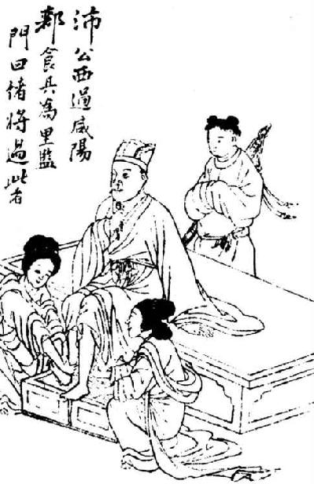
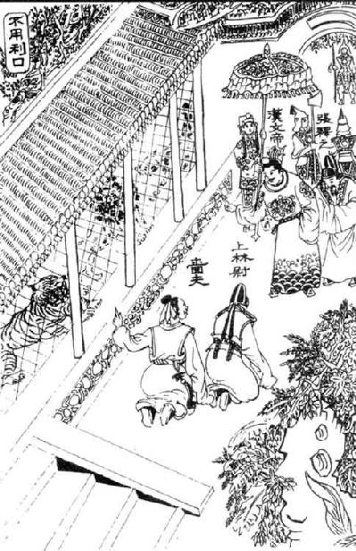
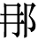
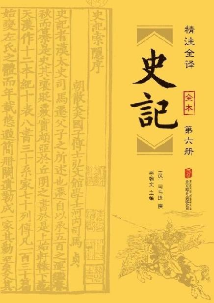

卷九十七 郦生陆贾列传第三十七
郦生食其者，陈留高阳人也。好读书，家贫落魄，无以为衣食业，为里监门吏。然县中贤豪不敢役，县中皆谓之狂生。
及陈胜、项梁等起，诸将徇地【徇地：掠地。】 过高阳者数十人，郦生闻其将皆握齱【握齱：同“龌龊”。】 好苛礼自用【自用；自以为是。】 ，不能听大度之言。郦生乃深自藏匿。后闻沛公将兵略地陈留郊，沛公麾下骑士适郦生里中子也，沛公时时问邑中贤士豪俊。骑士归，郦生见谓之曰：“吾闻沛公慢而易【易：轻视。】 人，多大略，此真吾所愿从游，莫为我先【先：引见，介绍。】 。若见沛公，谓曰‘臣里中有郦生，年六十余，长八尺，人皆谓之狂生，生自谓我非狂生’。”骑士曰：“沛公不好儒，诸客冠儒冠来者，沛公辄解其冠，溲溺其中。与人言，常大骂。未可以儒生说也。”郦生曰：“弟【弟：但，尽管。】 言之。”骑士从容言如郦生所诫者。
郦食其，是陈留县高阳人。他喜欢读书，但是因为家里贫穷落魄，没有可以依靠过活的产业，于是便去做了看管里门的小吏。但是县里有名望有权势的人没有敢役使他的，当地人都称他为狂生。
等到陈胜、项梁等人起兵反抗秦朝的时候，起义军将领攻城略地经过高阳的多达数十人，郦食其听闻这些将领个个气量狭小，局促于繁文缛节之中，并且自以为是，很难听取有宏伟抱负的言论。于是郦食其就远远地躲了起来。后来他听说沛公率领军队攻到了陈留郊外，沛公麾下有一名骑兵恰好与郦食其是同乡，沛公经常向他询问陈留县中贤士豪杰的情况。那名骑兵回乡，郦食其见到他后说道：“我曾听说沛公这个人十分傲慢，轻视别人，但是却有远大的谋略，这正是我愿意结交的人，但是并没有人替我引见。你见到沛公以后，就告诉他说‘我的家乡有个人名叫郦食其，已经六十多岁了，身高八尺，县里人都称之为狂生，但他本人却说自己并非狂生’。”骑兵说：“沛公不爱好儒学，凡是佩戴儒生帽子的宾客，总是会被沛公摘掉他们的帽子，并在帽子里小便。他与人谈话时，动不动就破口大骂。所以，你千万不要以儒生的身份去游说沛公。”郦食其说：“你只管将我的话传到就行了。”于是骑兵很从容地将郦食其所吩咐的话转告给沛公。
沛公至高阳传舍，使人召郦生。郦生至，入谒。沛公方倨床使两女子洗足，而见郦生。郦生入，则长揖不拜，曰：“足下欲助秦攻诸侯乎？且欲率诸侯破秦也？”沛公骂曰：“竖儒【竖儒：穷酸书生，骂人的话。】 ！夫天下同苦秦久矣，故诸侯相率而攻秦，何谓助秦攻诸侯乎？”郦生曰：“必聚徒合义兵诛无道秦，不宜倨见长者。”于是沛公辍洗，起摄衣，延郦生上坐，谢之。郦生因言六国从横【从横：合纵连横。从，通“纵”。】 时。沛公喜，赐郦生食，问曰：“计将安出？”郦生曰：“足下起纠合之众，收散乱之兵，不满万人，欲以径入强秦，此所谓探虎口者也。夫陈留，天下之冲，四通五达之郊也，今其城又多积粟。臣善其令，请得使之，令下【下：降，归附。】 足下。即不听，足下举兵攻之，臣为内应。”于是遣郦生行，沛公引兵随之，遂下陈留。号郦食其为广野君。
郦生言其弟郦商，使将数千人从沛公西南略地。郦生常为说客，驰使诸侯。
沛公来到高阳传舍下榻，派人召见郦食其。郦食其来到，便进去拜见沛公。当时沛公正坐在床沿上，让两个女子为他洗脚，他就这样召见郦食其。郦食其进来，只是对沛公行了一个拱手礼，并没有跪拜，说：“您是想帮助秦朝打诸侯呢？还是想率领诸侯将秦朝灭掉呢？”沛公骂道：“你这个穷酸书生！天下人苦于秦朝的暴政已经很久了，所以各路诸侯才相继起兵攻打秦朝，你怎么能说帮助秦朝打诸侯呢？”郦食其回答道：“如果您真的打算聚集众人组成正义之师去讨伐暴虐无道的秦朝，那么就不应该用这种傲慢的态度接待长者。”于是沛公停止了洗脚，站起身来整理好衣服，然后请郦食其坐到上位，向他赔礼道歉。郦食其便说起当年六国合纵连横的形势。沛公听了非常高兴，就赏赐郦食其饭食，问道：“该如何制定伐秦之计呢？”郦食其说：“您聚集乌合之众，收编散兵游勇，不足一万人，想依靠他们直接进军攻打强秦，这就是所谓的摸虎口！陈留这个地方，是天下的交通要道，是个四通八达的地方，如今城中又囤积了很多粮食。我与陈留县令关系很好，请您派我出使陈留，我会劝他归附于您。如果他不听劝的话，您就出兵攻打他，到时候我作内应。”于是沛公派郦食其前往，他自己则带兵在后面尾随，最终占领了陈留。此后，沛公就封郦食其为广野君。
郦食其推荐弟弟郦商，让他率领几千人跟随沛公向西南攻城掠地。郦食其经常作为说客，乘坐马车出使各路诸侯。
汉三年秋，项羽击汉，拔荥阳，汉兵遁保巩、雒。楚人闻淮阴侯破赵，彭越数反梁地，则分兵救之。淮阴方东击齐，汉王数困荥阳、成皋，计欲捐成皋以东，屯巩、雒以拒楚。郦生因曰：“臣闻知天之天者，王事可成；不知天之天者，王事不可成。王者以民人为天，而民人以食为天。夫敖仓【敖仓：秦国的粮仓。】 ，天下转输【转输：各地向这里运输粮食。】 久矣，臣闻其下乃有藏粟甚多。楚人拔荥阳，不坚守敖仓，乃引而东，令适卒分守成皋，此乃天所以资汉也。方今楚易取而汉反却，自夺【夺：失掉，放弃。】 其便，臣窃以为过矣。且两雄不俱立，楚汉久相持不决，百姓骚动，海内摇荡，农夫释耒，工女下机，天下之心未有所定也。愿足下急复进兵，收取荥阳，据敖仓之粟，塞成皋之险，杜【杜：阻断。】 大行之道，距蜚狐之口，守白马之津，以示诸侯效实形制之势，则天下知所归矣。方今燕、赵已定，唯齐未下。今田广据千里之齐，田间将二十万之众，军于历城，诸田宗强，负海【负海：背靠大海，指没有后顾之忧。】 阻【阻：凭借。】 河济，南近楚，人多变诈，足下虽遣数十万师，未可以岁月破也。臣请得奉明诏说齐王，使为汉而称东藩。”上曰：“善。”

郦食其诣汉王。
汉王三年（前204年）秋季，项羽领兵攻打汉军，攻克荥阳，汉军退到巩县、雒阳一带驻守。楚军听说淮阴侯韩信攻破了赵国，彭越多次在梁地造反，于是派一支军队前去援救赵国。当时，淮阴侯韩信正在向东攻打齐国，汉王刘邦数次被困在荥阳、成皋，他打算放弃成皋以东的地区，在巩县、雒阳等地屯兵驻守，以抵御楚军。郦食其便说：“我听说，知道天之所以成为天的人，其帝王大业便可成功；而那些不知道天之所以成为天的人，其帝王大业就不会成功。君主应该把民众看成是天，而民众则把粮食看成是天。敖仓，作为天下粮食的运输集散地已经很久了，我听说那里储藏着很多粮食。楚军攻占荥阳之后，非但没有固守敖仓，反倒引兵向东进发，让那些因为有罪而遭受谪罚的士兵分守成皋，这真是上天对汉军的帮助。如今的楚军最容易攻取，但是汉军却退缩不前，放弃对自己有利的机会，我私下认为这是错误的。况且两个强劲的对手不可能并立，楚、汉双方长时间僵持不下，百姓骚动，国家动荡不安，农夫放下耕田的农具，妇女离开布机，天下民心没有确定的归向。希望您立即再度出兵，收复荥阳，据守敖仓的粮食，阻塞成皋的险要信道，断绝太行山的交通要道，掌控蜚狐隘口，把守白马渡口，向各路诸侯显示利用地势克敌制胜的阵势，这样一来天下人就知道自己应当归于哪一方了。如今燕国、赵国都已经平定了，只剩下齐国尚未攻破。如今田广占据齐国方圆千里的土地，田间统率二十万大军驻扎在历城，各支田氏宗族的势力都非常强大，他们背靠大海，隔着黄河、济水，南面与楚国接近，这里的人们大都狡诈善变，即使您派数十万大军前去征讨，一年半载之内也无法将其击败。我请求奉您的诏命前去游说齐王，让他归附汉军而作为东方的属国。”汉王说：“好。”
乃从其画，复守敖仓，而使郦生说齐王曰：“王知天下之所归乎？”王曰：“不知也。”曰：“王知天下之所归，则齐国可得而有也；若不知天下之所归，即齐国未可得保也。”齐王曰：“天下何所归？”曰：“归汉。”曰：“先生何以言之？”曰：“汉王与项王戮力西面击秦，约先入咸阳者王之。汉王先入咸阳，项王负约不与而王之汉中。项王迁杀义帝，汉王闻之，起蜀汉之兵击三秦，出关而责义帝之处，收天下之兵，立诸侯之后。降城即以侯其将，得赂即以分其士。与天下同其利，豪英贤才皆乐为之用。诸侯之兵四面而至，蜀汉之粟方船【方船：并舟，指船的数量众多。】 而下。项王有倍约之名，杀义帝之负【负：罪过，亏欠。】 。于人之功无所记，于人之罪无所忘。战胜而不得其赏。拔城而不得其封。非项氏莫得用事。为人刻印，刓【刓：磨去棱角。】 而不能授；攻城得赂，积而不能赏：天下畔之，贤才怨之，而莫为之用。故天下之士归于汉王，可坐而策也。夫汉王发蜀汉，定三秦；涉西河之外，援【援：援引。】 上党之兵；下井陉，诛成安君；破北魏，举三十二城：此蚩尤之兵也，非人之力也，天之福也。今已据敖仓之粟，塞成皋之险，守白马之津，杜大行之坂，距蜚狐之口，天下后服者先亡矣。王疾先下汉王，齐国社稷可得而保也；不下汉王，危亡可立而待也。”田广以为然，乃听郦生，罢历下兵守战备，与郦生日纵酒。
汉王听从了郦食其的计策，再度率兵据守敖仓，同时派郦食其去游说齐王，郦食其说：“大王是否知道天下人心的归向？”齐王答道：“不知道。”郦食其说：“如果大王知道天下人心的归向，那么齐国或许还能存在；如果大王不知道天下人心的归向，那么齐国就无法保全了。”齐王问：“那么天下人心归向哪里呢？”郦食其说：“天下人心都归向汉王。”齐王问：“先生凭什么这么说？”郦食其说：“汉王与项王合力向西攻打秦朝，曾经约定谁先攻入咸阳谁就在那里称王。汉王率先攻进咸阳，但是项王却违背了当初的约定，不将咸阳地区让出，反倒让他在汉中地区称王。项王将义帝迁到南方并杀害，汉王得知这一消息，立即发动蜀汉军队攻打三秦，率兵出函谷关，追问义帝的下落，并收编天下军队，封立诸侯的后代。每当汉军攻占了城邑，汉王就用该城分封带兵的将领为侯；每当获得财物，汉王就把它们分赏给士兵。汉王与天下人共同分享利益，英雄豪杰和贤能之士都愿意为他效力。诸侯的军队从四面八方汇集而来，蜀汉的粮食一船接着一船顺流而下。项王曾有违背约定的坏名声，又有杀害义帝的罪责。他对别人立下的功劳总是不能记在心里，但是却对别人所犯下的过错时刻不忘。他手下的将领们打了胜仗却得不到奖赏，攻取城邑却得不到封地。如果不是项氏宗族，就不能够执掌政务。他给手下官员刻印，在手中把玩了许久连棱角都磨没了还是不舍得授予；攻城所取得的财物，堆积起来也不愿赏赐给手下。天下人都背叛他，贤才之士都怨恨他，没有人愿意为他效力。所以天下人心都归向汉王，汉王只要坐着就可以轻而易举地驱使他们。汉王从蜀汉出兵，平定了三秦；渡过西河，率领上党的军队；攻克井陉，杀掉成安君；击败北魏，攻占三十二座城邑：这就如同战神蚩尤的军队一般，依靠的不仅仅是人的力量，更是上天赐予的洪福。现在，汉军已经拥有了敖仓的粮食，阻塞了成皋的险要信道，把守白马渡口，断绝了太行山的交通要道，控制了蜚狐隘口，天下诸侯中后归附汉王的就会被率先消灭。如果大王能够尽快归附汉王的话，齐国的社稷还可以保住；假如您不归附汉王，齐国的危亡马上就会到来。”田广认为郦食其说得很对，于是就听从他的建议，下令撤除历城的驻军与战备，然后与郦食其终日纵情饮酒。
淮阴侯闻郦生伏轼【伏轼：指乘车。】 下齐七十余城，乃夜度兵平原袭齐。齐王田广闻汉兵至，以为郦生卖己，乃曰：“汝能止汉军，我活汝；不然，我将亨汝！”郦生曰：“举大事不细谨，盛德不辞让。而公不为若更言【更言：改口。】 ！”齐王遂亨郦生，引兵东走。
汉十二年，曲周侯郦商以丞相将兵击黥布有功。高祖举【举：分封。】 列侯功臣，思郦食其。郦食其子疥数将兵，功未当侯，上以其父故，封疥为高梁侯。后更食武遂，嗣三世。元狩元年中，武遂侯平坐诈诏衡山王取百斤金，当弃市，病死，国除也。
淮阴侯韩信得知郦食其坐在车上说降了齐国七十多座城邑，于是就在夜间把士兵从平原渡口送过黄河偷袭齐国。齐王田广得知汉军到来，认为是郦食其出卖了自己，就对他说：“如果你能阻止汉军攻打齐国，我就让你活下去；否则，我就要把你烹杀！”郦食其说：“做大事者不拘小节，道德高尚的人，也不会顾忌他人的责难。你老子我不会再为你说什么了！”于是齐王烹杀了郦食其，然后带兵向东逃去。
汉十二年（前195年），曲周侯郦商以丞相的身份率军攻打黥布有功。汉高祖在提拔列侯功臣的时候，想起了郦食其。郦食其的儿子郦疥曾数次领兵作战，但是依照战功还没有达到封侯的标准，皇上因想到他父亲当年为国事献身，便将郦疥封为高梁侯。后来，又改封武遂作为郦疥的食邑，前后继承了三代。汉武帝元狩元年（前122年），武遂侯郦平假托诏令从衡山王那里骗取了一百斤黄金，按律应当判处死刑，并暴尸街头，但是没等到行刑郦平就病死了，于是朝廷将其封国废除。
陆贾者，楚人也。以客从高祖定天下，名为有口辩士，居左右，常使诸侯。
及高祖时，中国初定，尉他平南越，因王之。高祖使陆贾赐尉他印为南越王。陆生至，尉他魋结【魋结：将头发挽在头顶，形状如同锥子。】 箕倨见陆生。陆生因进说他曰：“足下中国人，亲戚昆弟坟墓在真定。今足下反天性，弃冠带，欲以区区之越与天子抗衡为敌国，祸且及身矣。且夫秦失其政，诸侯豪杰并起，唯汉王先入关，据咸阳。项羽倍约，自立为西楚霸王，诸侯皆属，可谓至强。然汉王起巴蜀，鞭笞天下，劫略【略：通“掠”。】 诸侯，遂诛项羽灭之。五年之间，海内平定，此非人力，天之所建也。天子闻君王王南越，不助天下诛暴逆，将相欲移兵而诛王，天子怜百姓新劳苦，故且休之，遣臣授君王印，剖符通使【通使：互通使者。】 。君王宜郊迎，北面称臣，乃欲以新造未集【集：安定，稳定。】 之越，屈强于此。汉诚闻之，掘烧王先人冢，夷灭宗族，使一偏将将十万众临越，则越杀王降汉，如反复手耳。”
陆贾，是楚国人。当初他以门客的身份跟随高祖平定天下，他以口才见长而闻名，他陪伴在高祖左右，经常出使诸侯。
等到高祖当上皇帝的时候，中原地区刚刚平定，尉他平定了南越，于是就在那里称王。高祖派陆贾赐予尉他印章，正式封他为南越王。陆贾抵达南越的时候，尉他梳着当地流行的椎子一样的发髻，叉开双腿坐着接见陆贾。于是陆贾走上前去劝说尉他：“您是中原人，您父母、兄弟的坟墓都在真定。如今您违背天性，抛弃了中原人戴帽系带的风俗，想要凭借这小小的越地与大汉天子抗衡，灾祸很快就会降临到您身上了。况且当初秦朝政治混乱，天下各路诸侯、豪杰纷纷起兵反秦，只有汉王率先打入关中，占领了咸阳。项羽违背了当初的盟约，自立为西楚霸王，所有的诸侯都归附于他，可以说是最强大的了。但是，汉王从巴蜀地区起兵，征服天下，平定诸侯，讨伐项羽，并最终将其消灭。在短短五年时间里，平定了全国，这并非人力能够做到的，而是上天辅助的结果。天子听说大王在南越称王，而没有去帮助天下人共同诛杀暴逆，将相们都打算发兵前来讨伐大王，然而天子可怜天下百姓刚刚经历过战争的劳苦，于是休兵止战，特意派我来授予您王印，并且剖分符信作为凭证，彼此之间互通使者。大王原本应该前往郊外迎接，向北称臣，可如今却想凭借这个刚刚创建、还没有安定下来的越国，在这里负隅顽抗。如果大汉朝廷听说这些情况，一定会挖开并且烧毁大王祖坟，诛灭大王的宗族，派一员副将带领十万大军来到南越，那么越人必定会杀掉大王而归顺汉朝，这简直易如反掌。”
于是尉他乃蹶然【蹶然：惊起。】 起坐，谢陆生曰：“居蛮夷中久，殊失礼义。”因问陆生曰：“我孰与萧何、曹参、韩信贤？”陆生曰：“王似贤。”复曰：“我孰与皇帝贤？”陆生曰：“皇帝起丰沛，讨暴秦，诛强楚，为天下兴利除害，继五帝三王之业，统理中国。中国之人以亿计，地方万里，居天下之膏腴，人众车舆，万物殷富，政由一家，自天地剖泮未始有也。今王众不过数十万，皆蛮夷，崎岖山海间，譬若汉一郡，王何乃比于汉！”尉他大笑曰：“吾不起中国，故王此。使我居中国，何渠不若汉？”乃大说陆生，留与饮数月。曰：“越中无足与语，至生来，令我日闻所不闻。”赐陆生橐【橐：口袋。】 中装直千金，他送亦千金。陆生卒拜尉他为南越王，令称臣奉汉约。归报，高祖大悦，拜贾为太中大夫。
听到这里，尉他突然起身正坐，向陆贾道歉说：“我在蛮夷地区生活久了，对您很失礼。”接着又问陆贾：“我和萧何、曹参、韩信相比，谁更贤能呢？”陆贾说：“大王您似乎更贤能。”尉他又问：“我与当今皇帝相比，谁更贤能呢？”陆贾说：“当今皇帝在沛县丰邑起事，讨伐暴虐的秦朝，诛灭强大的楚国，为天下兴利除害，继承了五帝、三王的事业，统治中原。中原人口数以亿计，土地方圆万里，位于天下肥沃富饶的地区，人口众多，车辆密集，物产丰富，政令统一，自从开天辟地以来，这种景象是从来没有过的。现在大王不过拥有几十万人口，还都是蛮夷，在局促狭小的山海之间居住，就好像汉朝下属的一个郡，大王怎么能与汉王相比呢！”尉他听了以后大笑说：“我没有在中原起事，所以在这里称王。假使我在中原地区，怎么会比不上汉帝呢？”他非常喜欢陆贾，于是便把陆贾留下来和他一同饮酒作乐长达数月之久。尉他说：“南越这个地方没有人值得我与之交谈，直到先生到来，才让我每天都能听到之前未曾听过的事情。”尉他把装入袋中的价值千金的宝物赏赐给陆贾，别的礼物也价值千金。陆贾最后便封尉他为南越王，让他对汉朝称臣，并奉行朝廷的法令。回朝之后，陆贾便将此事汇报给朝廷，高祖非常高兴，就任命他为太中大夫。
陆生时时前说称《诗》《书》。高帝骂之曰：“乃公居马上而得之，安事《诗》《书》！”陆生曰：“居马上得之，宁可以马上治之乎？且汤武逆取【逆取：采用武力。】 而以顺守【顺守：用礼义之道统治国家。】 之，文武并用，长久之术也。昔者吴王夫差、智伯极武而亡；秦任刑法不变，卒灭赵氏。乡使秦已并天下，行仁义，法先圣，陛下安得而有之？”高帝不怿【不怿：不高兴。】 而有惭色，乃谓陆生曰：“试为我着秦所以失天下，吾所以得之者何，及古成败之国。”陆生乃粗述存亡之征，凡着十二篇。每奏一篇，高帝未尝不称善，左右呼万岁，号其书曰“新语”。
孝惠帝时，吕太后用事，欲王诸吕，畏大臣有口者。陆生自度不能争之，乃病免家居。以好畤田地善，可以家焉。有五男，乃出所使越得橐中装卖千金，分其子，子二百金，令为生产。陆生常安车驷马，从歌舞鼓琴瑟侍者十人，宝剑直百金。谓其子曰：“与汝约：过汝，汝给吾人马酒食，极欲，十日而更。所死家，得宝剑车骑侍从者。一岁中往来过他客，率不过再三过，数见不鲜，无久慁【慁：麻烦，打扰。】 公为也。”
陆贾经常在高帝面前提及《诗经》《尚书》等儒家经典。高帝骂他说：“你老子我是在马上依靠武力夺得天下的，哪用得着什么《诗经》《尚书》！”陆贾说：“在马上可以夺取天下，难道也可以在马上治理天下吗？况且当初商汤、周武王凭借武力夺取天下，然后顺应形势依靠文治来坚守天下，只有文武并用，才是使国家实现长治久安的策略。过去吴王夫差和晋国的智伯都由于穷兵黩武而败亡；秦朝肆意使用严刑酷法治国而不加改变，最终被灭掉。如果当初秦朝在统一天下之后便施行仁义，效法先圣，那么陛下又怎么会拥有天下呢？”高帝听后很不高兴，脸上露出惭愧之色，于是对陆贾说：“你试着为我著书谈论秦朝为何会失去天下，而我又为何能够取得天下，以及古代国家成败的事情。”陆贾于是粗略地论述了国家存亡的征候，共撰写十二篇。他每奏上一篇，高帝没有不说好的，身边的人也高呼“万岁”，称陆贾所写的书为“新语”。
孝惠帝在位时，吕太后把持朝政，想将吕氏宗族全都封王，但是又担心大臣非议。陆贾自己心中思忖无法与吕太后争辩，于是称病辞职回家。他认为好畤地区土地肥沃，可以在那里安家。陆贾有五个儿子，于是他拿出当年出使南越时所得到的装在袋子里的宝物，卖得黄金一千斤，分给儿子们，每人得到二百斤，然后就让他们从事生产。陆贾时常坐着套有四匹马的车出行，让能歌善舞、弹琴击瑟的十名侍从陪伴在身边，他身上佩带的宝剑价值百斤黄金。他对儿子们说：“我要与你们约好：我经过你们家中，你们就要为我的人马提供酒食，尽可能地满足我们的需求，过了十天我们就另换一家。我最后死在谁家里，谁就可以得到我的宝剑、车马以及随从。一年之中我还要到别的地方做客，到你们家中一般不会超过三次，如果我们经常见面，就没有新鲜感了，你们也无需因为长时间住在一起而厌烦我。”
吕太后时，王诸吕，诸吕擅权，欲劫少主，危刘氏。右丞相陈平患之，力不能争，恐祸及己，常燕居【燕居：安居。】 深念。陆生往请【请：问候。】 ，直入坐，而陈丞相方深念，不时见【不时见：没有及时见到。】 陆生。陆生曰：“何念之深也？”陈平曰：“生揣我何念？”陆生曰：“足下位为上相，食三万户侯，可谓极富贵无欲矣。然有忧念，不过患诸吕、少主耳。”陈平曰：“然。为之奈何？”陆生曰：“天下安，注意相；天下危，注意将。将相和调，则士务附；士务附，天下虽有变，即权不分。为社稷计，在两君掌握耳。臣常欲谓太尉绛侯，绛侯与我戏，易【易：不重视。】 吾言。君何不交欢太尉，深相结？”为陈平画吕氏数事。陈平用其计，乃以五百金为绛侯寿，厚具乐饮。太尉亦报如之。此两人深相结，则吕氏谋益衰。陈平乃以奴婢百人，车马五十乘，钱五百万，遗陆生为饮食费。陆生以此游汉廷公卿间，名声借甚。
及诛诸吕，立孝文帝，陆生颇有力焉。孝文帝即位，欲使人之南越。陈丞相等乃言陆生为太中大夫，往使尉他，令尉他去黄屋【黄屋：黄颜色的车盖，指的是天子车驾。】 称制【称制：以天子的身份发布命令。】 ，令比诸侯，皆如意旨。语在《南越》语中。陆生竟以寿终。
吕太后执政期间，分封吕氏宗族为王，因此吕氏家族独揽大权，打算挟制少主，危害刘氏政权。右丞相陈平深以为患，但是自己的能力又不足以与吕氏家族抗衡，他惟恐祸患波及自身，于是经常闲居深思。有一次陆贾去看望他，径直走进去坐下，而陈平当时正在深思，没有第一时间看见陆贾。陆贾说：“丞相在想什么，竟然如此入神？”陈平说：“您猜一猜我在想什么？”陆贾说：“您位居上相，又是享受三万户食邑的侯爵，可称得上富贵至极了，不会再有什么欲望了。但是，您心中有忧愁，不外乎是担忧吕氏宗族和少主罢了。”陈平说：“是的。那么对此应该怎么办呢？”陆贾说：“天下太平的时候，重视丞相；天下危急的时候，重视武将。如果将相之间能够和睦协调，那么士大夫自然就会亲近；如果士大夫亲近，那么即使天下发生变乱，国家大权也不会分散。为江山社稷着想，国家的安危就掌握在您与太尉的手中了。我常想跟太尉绛侯周勃谈论此事，但绛侯却总是和我开玩笑，不重视我说的话。您为什么不与太尉交好，双方加强团结呢？”陆贾还为陈平谋划了一些对付吕氏的办法。陈平采纳了他的计策，于是以黄金五百斤作为礼物送给绛侯为他祝寿，还隆重地准备了乐舞和酒宴款待他。太尉也以同样的礼仪回报陈平。就这样，陈平与周勃联系密切起来，吕氏的阴谋也因此逐渐被削弱。于是，陈平把一百名奴婢、五十辆车马和五百万钱送给陆贾作为饮食费用。陆贾就凭借这些资财在朝中公卿大臣之间活动，从而名声大盛。
等到诛杀诸吕，拥立孝文帝的时候，陆贾又出了不少力。孝文帝即位之后，打算派人前往南越。于是丞相陈平等人便向皇帝提议让陆贾担任太中大夫，前往南越会见尉他，让尉他撤销天子仪仗以及行文称制的行为，要他与诸侯一样，结果陆贾完全遵从文帝的意旨完成了使命。这些事情都记录在《南越列传》中。陆贾最终以高寿离世。
平原君朱建者，楚人也。故尝为淮南王黥布相，有罪去，后复事黥布。布欲反时，问平原君，平原君非之，布不听而听梁父侯，遂反。汉已诛布，闻平原君谏不与谋，得不诛。语在《黥布》语中。
平原君为人辩有口，刻廉刚直，家于长安。行不苟合，义不取容。辟阳侯行不正，得幸吕太后。时辟阳侯欲知【知：结交。】 平原君，平原君不肯见。及平原君母死，陆生素与平原君善，过之。平原君家贫，未有以发丧，方假贷服具【服具：置办办理丧事时所用的器物。】 ，陆生令平原君发丧。陆生往见辟阳侯，贺曰：“平原君母死。”辟阳侯曰：“平原君母死，何乃贺我乎？”陆贾曰：“前日君侯欲知平原君，平原君义不知君，以其母故。今其母死，君诚厚送丧，则彼为君死矣。”辟阳侯乃奉百金往税【税：同“襚”，送给死者的衣被。这里指给丧家送礼。】 。列侯贵人以辟阳侯故，往税凡五百金。
平原君朱建，是楚国人。他过去曾经担任淮南王黥布的丞相，因为犯罪而离职，后来再度侍奉黥布。黥布打算造反时，曾询问平原君的看法，平原君不认同他的想法，黥布没有听从他的意见而是听从了梁父侯的建议，于是起兵反叛。朝廷诛杀黥布之后，听说平原君曾经劝谏过黥布，而且也没有参与谋反一事，因为朱建没有被杀。这些事都记录在《黥布列传》中。
平原君为人善辩，很有口才，恪守廉洁，刚毅正直，家住长安。他重视操守从不随便附和，坚守道义而不阿谀讨好。辟阳侯审食其行为不端，却深受吕太后宠幸。当时辟阳侯想与平原君结交，但是平原君不肯与他相见。等到平原君的母亲去世，陆贾因为一直与平原君的关系很好，所以前去吊唁。平原君家境贫寒，连发丧的费用都没有，正在借贷办理丧事所用的物品，陆贾就让平原君安心发丧。陆贾去见辟阳侯，祝贺道：“平原君的母亲死了。”辟阳侯说：“他的母亲死了，你为什么要向我祝贺呢？”陆贾说：“前段时间您想结交平原君，可是人家坚守道义不肯与您结交，这完全是因为他母亲的缘故。如今他母亲去世了，如果您能送给他丰厚的丧礼，那么他就会拼死为您效力了。”于是辟阳侯带着黄金一百斤前去送丧。其他列侯贵人因为辟阳侯的缘故，也去赠送丧礼，礼金共达五百斤黄金。
辟阳侯幸吕太后，人或毁辟阳侯于孝惠帝。孝惠帝大怒，下吏，欲诛之。吕太后惭，不可以言。大臣多害【害：妒恨，气愤。】 辟阳侯行【行：行为。】 ，欲遂诛之。辟阳侯急，因使人欲见平原君。平原君辞曰：“狱急，不敢见君。”乃求见孝惠幸臣闳籍孺，说之曰：“君所以得幸帝，天下莫不闻。今辟阳侯幸太后而下吏，道路皆言君谗，欲杀之。今日辟阳侯诛，旦日太后含怒，亦诛君。何不肉袒【肉袒：脱去上衣，赤裸肢体，有请罪之意。】 为辟阳侯言于帝？帝听君出辟阳侯，太后大欢。两主共幸君，君贵富益倍矣。”于是闳籍孺大恐，从其计，言帝，果出辟阳侯。辟阳侯之囚，欲见平原君，平原君不见辟阳侯，辟阳侯以为倍己，大怒。及其成功出之，乃大惊。
吕太后崩，大臣诛诸吕，辟阳侯于诸吕至深，而卒不诛。计划所以全者，皆陆生、平原君之力也。
孝文帝时，淮南厉王杀辟阳侯，以诸吕故。文帝闻其客平原君为计策，使吏捕欲治。闻吏至门，平原君欲自杀。诸子及吏皆曰：“事未可知，何早自杀为？”平原君曰：“我死祸绝，不及而身矣。”遂自刭【自刭：刎颈自尽。】 。孝文帝闻而惜之，曰：“吾无意杀之。”乃召其子，拜为中大夫。使匈奴，单于无礼，乃骂单于，遂死匈奴中。
辟阳侯深受吕太后宠幸，于是有人在孝惠帝面前诋毁辟阳侯。孝惠帝大怒，便将辟阳侯交给司法官审讯，想要杀掉他。吕太后自觉有愧，也不方便出面为辟阳侯说情。朝中大臣大多痛恨辟阳侯的所作所为，都希望能够杀了他。辟阳侯十分着急，于是派人到平原君处说想见他。平原君推辞说：“眼下官司十分紧急，我不敢见您。”于是平原君求见孝惠帝手下的宠臣闳籍孺，游说他道：“您深受皇帝宠信，天下无人不知。如今辟阳侯因为受到太后宠幸而被交给司法官处置，路人全都说是因为您进了谗言，想杀掉他。如果今天辟阳侯被杀，那么改日太后心里有怒气，也会杀掉您的。您为什么不赤裸上身为辟阳侯向皇帝说情呢？如果皇帝听从了您的意见而宽赦辟阳侯，太后一定会很高兴。皇帝和太后这两位主上都宠幸您，那么您日后的富贵就会加倍了。”闳籍孺听了以后非常害怕，便听从他的计策，于是向皇帝求情，最后果然放过了辟阳侯。当初辟阳侯被囚禁时，曾经想与平原君会面，但是平原君并没有与他见面，辟阳侯认为平原君背弃了自己，愤怒异常。等到平原君成功解救他之后，他才对平原君的手段大为叹服。
后来吕太后去世，朝中大臣诛灭吕氏宗族，辟阳侯虽然与吕氏宗族关系极为密切，但他最终没有被杀。为他出谋划策使他保全性命，全都是依靠陆贾和平原君的力量。
孝文帝在位时，淮南厉王杀了辟阳侯，这是因为吕氏宗族的缘故。孝文帝听说辟阳侯的门客平原君曾经为他出谋划策，于是派狱吏前往抓捕平原君，打算治他的罪。平原君听说狱吏来到自家门前，打算自杀。他的几个儿子以及手下属吏都说：“还不知道最后的结果，为何要早早自杀呢？”平原君说：“我死了就能断绝灾祸，不会殃及你们。”于是自刎而死。孝文帝听说以后十分怜惜，说：“其实我没有要杀他的意思。”于是召见平原君的儿子，任命为中大夫。后来中大夫奉命出使匈奴，匈奴的单于无礼，于是他就大骂单于，最后死在匈奴。
初，沛公引兵过陈留，郦生踵【踵：至，达。】 军门上谒曰：“高阳贱民郦食其，窃闻沛公暴露【暴露：日晒露宿，指行军辛苦。】 ，将兵助楚讨不义，敬劳从者，愿得望见，口画天下便事。”使者入通，沛公方洗，问使者曰：“何如人也？”使者对曰：“状貌类大儒，衣儒衣，冠侧注【侧注：儒冠。】 。”沛公曰：“为我谢之，言我方以天下为事，未暇见儒人也。”使者出谢曰：“沛公敬谢先生，方以天下为事，未暇见儒人也。”郦生瞋目案剑叱使者曰：“走！复入言沛公，吾高阳酒徒也，非儒人也。”使者惧而失谒【谒：名片，名帖。】 ，跪十谒，还走，复入报曰：“客，天下壮士也，叱臣，臣恐，至失谒。曰‘走！复入言，而公高阳酒徒也’。”沛公遽雪足【雪足：擦脚。】 杖矛曰：“延客入！”
当初，沛公率军途经陈留县的时候，郦食其亲自到军营门前递上名帖求见说：“高阳乡贱民郦食其，私下里听说沛公在外奔波，带领军队协助楚王讨伐不义之师，劳烦沛公的随从为我通报一声，希望能面见沛公，与他谈论有利于天下的事。”使者进去通报，正赶上沛公在洗脚，他问使者：“来者是个什么样的人？”使者答道：“外貌像一位大儒，身穿儒生的衣服，头戴儒家的帽子。”沛公说：“替我谢绝他吧，就说我如今正以治理天下为大事，没空与读书人见面。”使者出来对郦食其辞谢说：“沛公谢绝了先生您，他现在正以治理天下作为头等大事，没有闲暇会见读书人。”郦食其瞪着双眼按着宝剑呵叱使者说：“快去！你再进去对沛公说，我是高阳的酒徒，不是什么读书人。”使者被他吓得连手中拿的名帖都掉落了，赶忙跪着捡起名帖，然后匆匆往里面跑，再次进去报告说：“来客，是天下有名的壮士，他呵叱我，我很害怕，以至于把名帖掉在地上。他说‘走！你再进去报告，你老子是高阳的酒徒’。”沛公听了以后赶快洗了脚，然后拿起矛说道：“快请客人进来！”
郦生入，揖沛公曰：“足下甚苦，暴衣露冠，将兵助楚讨不义，足下何不自喜【不自喜：不懂得自爱。】 也？臣愿以事见，而曰‘吾方以天下为事，未暇见儒人也’。夫足下欲兴天下之大事而成天下之大功，而以目皮相【皮相：衣冠外表。】 ，恐失天下之能士。且吾度足下之智不如吾，勇又不如吾。若欲就天下而不相见，窃为足下失之。”沛公谢曰：“乡者【乡者：刚才。】 闻先生之容，今见先生之意矣。”乃延而坐之，问所以取天下者。郦生曰：“夫足下欲成大功，不如止陈留。陈留者，天下之据冲【据冲：要害。】 也，兵之会地也，积粟数千万石，城守甚坚。臣素善其令，愿为足下说之。不听臣，臣请为足下杀之，而下陈留。足下将陈留之众，据陈留之城，而食其积粟，招天下之从兵。从兵已成，足下横行天下，莫能有害足下者矣。”沛公曰：“敬闻命矣。”
郦食其进去，对沛公作揖道：“您很辛苦，整日在外奔波，率军协助楚王讨伐不义之师，您为什么如此不自重呀？我有事前来拜谒您，您却说‘我正以治理天下为头等大事，没空见读书人’。您想创建平定天下的大事，成就治理天下的大功，却单凭外表看人，这样恐怕会失去天下的贤能之人。况且，我觉得您的智慧比不上我，勇气也比不上我。如果您想成就天下的大事却不肯与我相见，我私下认为您失策了。”沛公听罢道歉说：“刚才我只是听说先生您的样貌，如今终于得以了解您的心意了。”于是请郦食其就座，向他询问夺取天下的策略。郦食其说：“您要是想成就丰功伟绩，不如让军队驻守在陈留。陈留，是天下的要冲，是兵家必争之地，这里囤积了几千万石粮食，据城而守极其稳固。我与陈留县令向来关系很好，我愿意为您前去说服他。要是他不听从我的劝告，我就请求为您杀了他，然后夺取陈留。您统率陈留县原有的军队，占据陈留县城，吃那里囤积的粮食，募集天下有志反秦的兵马。军队形成规模以后，您就可以横行天下，再没有人能对您构成威胁了。”沛公说：“我敬听先生的高见。”
于是郦生乃夜见陈留令，说之曰：“夫秦为无道而天下畔之，今足下与天下从则可以成大功。今独为亡秦婴【婴：绕。】 城而坚守，臣窃为足下危之。”陈留令曰：“秦法至重也，不可以妄言，妄言者无类【无类：被灭族。】 ，吾不可以应。先生所以教臣者，非臣之意也，愿勿复道。”郦生留宿卧，夜半时斩陈留令首，逾城而下报沛公。沛公引兵攻城，悬令首于长竿以示城上人，曰：“趣下，而令头已断矣！今后下者必先斩之！”于是陈留人见令已死，遂相率而下沛公。沛公舍陈留南城门上，因其库兵，食积粟，留出入三月，从兵以万数，遂入破秦。
于是郦食其连夜与陈留县令见面，游说他道：“秦朝暴虐无道，所以天下人都背叛了它，现在，您如果顺应形势，与天下人共同反秦的话，就能够成就大功。但是如今您却偏偏为这个即将灭亡的秦朝据城坚守，我私下里替您感到危险。”陈留县令说：“秦朝的法令严苛至极，不可乱说话，乱说话的人是要灭族的，我不能遵照您说的去做。先生刚才指教我的话，并不合于我本人的心意，希望您不要再说了。”郦食其留下来住宿，在午夜时分砍下陈留县令的头，然后翻越城墙向沛公报告。于是沛公率军攻城，并将县令的头颅挂在长长的竹竿上让城上的人看，说道：“你们赶快投降，你们县令的头已经被砍掉了！现在哪一个后投降，肯定要先被斩首！”此时，陈留人见到县令已死，于是相继投降沛公。沛公在陈留南城门上驻军，使用陈留武库里的兵器，吃这里囤积的粮食，以陈留为据点时出时入，达三个月之久，在此期间招纳士兵数以万计，于是进军关中攻破秦朝。
太史公曰：世之传郦生书，多曰汉王已拔三秦，东击项籍而引军于巩雒之间，郦生被儒衣往说汉王。乃非也。自沛公未入关，与项羽别而至高阳，得郦生兄弟。余读陆生《新语》书十二篇，固当世之辩士。至平原君子与余善，是以得具论之。
太史公说：世间流传的有关郦食其的记载，大多是说汉王已经攻占了三秦，向东攻打项籍的军队，而引兵退守在巩县、雒阳一带，郦食其穿着儒生的服装前去游说汉王。但事实并非如此。早在沛公入关之前，和项羽分别之后到达高阳时，就已经得到了郦氏兄弟。我读了陆贾的《新语》十二篇，觉得他的确是当时的雄辩之士。至于平原君朱建，他的儿子与我关系很好，因此我得以详尽地记述这些内容。
卷九十八 傅靳蒯成列传第三十八
阳陵侯傅宽，以魏五大夫骑将从，为舍人【舍人：官僚贵族门下的客卿。】 ，起横阳。从攻安阳、杠里，击赵贲军于开封，及击杨熊曲遇、阳武，斩首十二级，赐爵卿。从至霸上。沛公立为汉王，汉王赐宽封号共德君。从入汉中，迁为右骑将。从定三秦，赐食邑雕阴。从击项籍，待怀，赐爵通德侯。从击项冠、周兰、龙且，所将卒斩骑将一人敖下【敖下：敖仓附近。】 ，益食邑。
属淮阴【属淮阴：跟随淮阴侯韩信。】 ，击破齐历下军，击田解。属相国参，残【残：屠杀，屠戮。】 博，益食邑。因定齐地，剖符世世勿绝，封为阳陵侯，二千六百户，除前所食。为齐右丞相，备齐。五岁为齐相国。
阳陵侯傅宽，以魏五大夫的爵位加骑将的身份跟随沛公，当上了侍从官，在横阳起兵。他跟随沛公攻打安阳、杠里，在开封攻打赵贲的军队，又在曲遇、阳武一带攻打杨熊的军队，斩下十二个敌人的首级，沛公赐予他卿的爵位。后来他跟随沛公来到霸上。沛公被立为汉王之后，赐予傅宽共德君的封号。傅宽跟随汉王一同进入汉中，官职也升为右骑将。然后他跟随汉王回师平定三秦，汉王将雕阴县赐给他作为食邑。然后他又跟随汉王攻打项籍，奉命在怀县接应汉王，汉王赐予他通德侯的爵位。他又跟随汉王攻打项冠、周兰、龙且，他所率领的士卒在敖仓斩杀敌军骑将一人，于是汉王为他增加了食邑。
傅宽曾经隶属于淮阴侯韩信，在此期间曾击败齐国在历下的驻军，并追击齐国的田解。他在隶属于相国曹参的时候，一举摧毁了齐国的博县，并因此增加了食邑。由于他平定齐地有功，所以分剖符节受了封，世代相传永不断绝，他被封为阳陵侯，拥有二千六百户的食邑，过去的食邑随之撤销。此后他担任齐王韩信的右丞相，守备齐地。五年以后，他又做了齐王刘肥的相国。
四月，击陈豨，属太尉勃，以相国代丞相哙击豨。一月，徙为代相国，将屯【将屯：带领屯田士兵。】 。二岁，为代丞相，将屯。
孝惠五年，卒，谥为景侯。子顷侯精立，二十四年卒。子共侯则立，十二年卒。子侯偃立，三十一年，坐与淮南王谋反，死，国除。
四月，朝廷发兵平定叛臣陈豨，当时傅宽归太尉周勃管，以齐国相国的身份接替丞相樊哙征讨陈豨。次年一月，他调任代国相国，率领军队屯守边疆。两年以后，他被任命为代国丞相，依然率军屯守边疆。
孝惠帝五年（前190年），傅宽去世，死后谥号为景侯。他的儿子顷侯傅精继承侯位，在位二十四年去世。傅精的儿子共侯傅则继承侯位，十二年后去世。此后，由傅则的儿子傅偃继承侯位，三十一年后，他由于参与淮南王刘安谋反之事，被处死，其封国也被废除。
信武侯靳歙，以中涓【中涓：负责清扫及收发传达事务的侍从人员。】 从，起宛朐。攻济阳，破李由军。击秦军亳南、开封东北，斩骑千人、将一人，首五十七级，捕虏七十三人，赐爵封号临平君。又战蓝田北，斩车司马二人、骑长一人，首二十八级，捕虏五十七人。至霸上。沛公立为汉王，赐歙爵建武侯，迁为骑都尉。
从定三秦。别西击章平军于陇西，破之，定陇西六县，所将卒斩车司马【车司马：负责战车的官员。】 、候各四人，骑长【骑长：骑兵中的小官，相当于“千夫长”。】 十二人。从东击楚，至彭城。汉军败还，保雍丘，去击反者王武等。略梁地，别将击邢说军菑南，破之，身得【身得：亲自抓获。】 说都尉二人，司马、候十二人，降吏卒四千一百八十人。破楚军荥阳东。三年，赐食邑四千二百户。
信武侯靳歙，当初以中涓的身份跟随沛公，在宛朐起兵。他率兵攻打济阳，打败了李由的军队。在亳县南部、开封东北部攻打秦军，斩杀骑兵一千名、将领一人，斩获五十七人的首级，俘虏七十三人，他因此被赐予爵位，封号为临平君。此后他又在蓝田以北与秦军交战，斩杀敌军的车司马两人、骑长一人，斩获二十八人的首级，俘虏五十七人。然后率军来到霸上。沛公被立为汉王之后，便赐予靳歙建武侯的爵位，提拔他为骑都尉。
靳歙跟随汉王平定三秦。他独自率军向西进发攻打章平驻守在陇西的军队，并将其打败，从而平定了陇西六县，他麾下的士兵斩杀敌军车司马、军候各四人，斩杀骑长十二人。此后跟随汉王向东攻打楚国，一直打到彭城。汉军失利后撤，退守雍丘城，然后迎击叛将王武等人。在攻略梁地时，靳歙独自领兵前往菑县以南攻打邢说的部队，将其击败，靳歙亲自擒获邢说手下都尉两人，司马、军候十二人，还降服了邢说手下的官兵四千一百八十人。还在荥阳以东打败了楚军。汉三年（前204年），汉王赐给他食邑四千二百户。
别之河内，击赵将贲郝军朝歌，破之，所将卒得骑将二人，车马【车马：指骑兵的马。】 二百五十匹。从攻安阳以东，至棘蒲，下七县。别攻破赵军，得其将司马二人、候四人，降吏卒二千四百人。从攻下邯郸。别下平阳，身斩守相，所将卒斩兵守、郡守各一人，降邺。从攻朝歌、邯郸，及别击破赵军，降邯郸郡六县。还军敖仓，破项籍军成皋南，击绝楚饷道【饷道：运粮的信道。】 ，起荥阳至襄邑。破项冠军鲁下。略地东至缯、郯、下邳，南至蕲、竹邑。击项悍济阳下。还击项籍陈下，破之。别定江陵，降江陵柱国、大司马以下八人，身得江陵王，生致之雒阳，因定南郡。从至陈，取楚王信。剖符世世勿绝，定食四千六百户，号信武侯。
靳歙独自率军向河内进发，在朝歌攻打并打败赵将贲郝的军队，他手下的士兵俘获敌方骑兵将领二人，缴获战马二百五十匹。又跟随汉王攻打安阳以东，到达棘蒲城，攻占七个县。他还独自领兵击败赵军，俘获司马两人、军候四人，降服敌军官兵二千四百人。然后跟随汉王攻克邯郸城。然后单独领兵攻占平阳城，亲手斩杀了赵国的代理丞相，他手下的士兵斩杀兵守、郡守各一人，并降服了邺城。然后跟随汉王攻打朝歌、邯郸，又单独领兵打败了赵军，降服了邯郸郡所属的六个县。回师敖仓，又在成皋以南打败了项籍的军队，阻断了楚军从荥阳到襄邑的粮道。还在鲁县城下打败了项冠的部队。靳歙所攻取的土地，东至缯县、郯县、下邳县等地，南至蕲县、竹邑等地。他在济阳城下攻击楚将项悍，回师在陈县攻打项籍率领的军队，并将其打败。他又独自领兵平定了江陵，降服了江陵柱国、大司马以下官员八人，并亲手俘获了江陵王，将他押送到雒阳，由此平定了南郡。后来又跟随高祖来到陈县，捕获楚王韩信。分得剖符受封，世代相传永不断绝，并确定其食邑为四千六百户，封号为信武侯。
以骑都尉从击代，攻韩信平城下，还军东垣。有功，迁为车骑将军，并将梁、赵、齐、燕、楚车骑，别击陈豨丞相敞，破之，因降曲逆。从击黥布有功，益封定食五千三百户。凡斩首九十级，虏百三十二人；别破军十四，降城五十九，定郡、国各一，县二十三；得王、柱国各一人，二千石以下至五百石三十九人。
高后五年，歙卒，谥为肃侯。子亭代侯。二十一年，坐事【事：驱使，役使。】 国人过律，孝文后三年，夺侯，国除。
靳歙以骑都尉的身份跟随高祖讨伐代地，在平城攻打韩王信，然后回师东垣。由于立有战功，因此被提拔为车骑将军，统领梁、赵、齐、燕、楚五国的车骑部队，分兵攻打陈豨的丞相侯敞所率的军队，将其击败，并顺势降服了曲逆城。他跟随高祖讨伐黥布有功，加封食邑至五千三百户。他共斩杀九十个敌军的首级，俘虏一百三十二人；单独领兵击败敌军十四次，降服城邑五十九座，平定一郡、一国，以及县城二十三座；俘获诸侯王、柱国各一人，二千石以下至五百石级别的官员三十九人。
吕后五年（前183年），靳歙去世，谥号为肃侯。他的儿子靳亭继承了父亲的侯位。靳亭在位二十一年以后，由于役使侯国的居民超过了法定界限，因此在孝文帝后元三年（前161年），他被剥夺了侯爵，其封国也被废除。
蒯成侯緤者，沛人也，姓周氏。常为高祖参乘【参乘：车上的陪坐人员。】 ，以舍人从起沛。至霸上，西入蜀、汉，还定三秦，食邑池阳。东绝甬道，从出度平阴，遇淮阴侯兵襄国。军乍利乍不利，终无离上心。以緤为信武侯，食邑三千三百户。高祖十二年，以緤为蒯成侯，除前所食邑。
上欲自击陈豨，蒯成侯泣曰：“始秦攻破天下，未尝自行。今上常自行，是为无人可使者乎？”上以为“爱我”，赐入殿门不趋【趋：小步快行，是臣子在君主面前行走时的礼仪。】 ，杀人不死。
至孝文五年，緤以寿终，谥为贞侯。子昌代侯，有罪，国除。至孝景中二年，封緤子居代侯。至元鼎三年，居为太常，有罪，国除。
蒯成侯名緤，是沛县人，姓周。他曾担任高祖的参乘，以舍人的身份跟随沛公一同在沛县起兵。后来随军来到霸上，向西进入蜀郡、汉中，然后回师平定三秦，被赐予池阳城作为他的食邑。又向东阻断楚军运送粮草的信道，跟随汉王的部队自平阴渡口出发，渡过黄河，在襄国与淮阴侯韩信的军队会师。汉军的行动时而顺利，时而不顺，但是周緤始终都没有过背弃高祖的想法。高祖封他为信武侯，赐给他食邑三千三百户。高祖十二年（前195年），封周緤为蒯成侯，同时撤销过去所封的食邑。
皇上打算亲自领兵攻打陈豨，蒯成侯流着眼泪说道：“当初秦国攻取天下，秦始皇未曾亲自出征。如今皇上经常亲自领兵出战，难道是由于您身边没有可以派出的人了吗？”皇上认为周緤是在保护他，于是特别恩赐他进入宫殿大门不必小步快走，杀了人也可以不判死刑。
曾国藩：“子长于当世艳称之功臣封爵者，皆不甚满意，常以不可知有，归之天命。……然亦由子长褊衷，不能忘情于功名，故时时以命字置诸喉舌之间，若仲尼则罕言命，且不答南宫适羿、舁、禹、稷之问，兹其所以为大也。”
孝文帝五年（前175年），周緤寿终正寝，谥号为贞侯。他的儿子周昌继承侯位，后来由于犯了罪，其封国被废除。到了孝景帝中元二年（前148年），皇帝封周緤的儿子周居继承侯位。到了汉武帝元鼎三年（前114年），周居担任太常一职，由于犯罪，其封国被废除。
太史公曰：阳陵侯傅宽、信武侯靳歙皆高爵，从高祖起山东，攻项籍，诛杀名将，破军降城以十数，未尝困辱，此亦天授也。蒯成侯周緤操心坚正，身不见疑，上欲有所之，未尝不垂涕，此有伤心【伤心：心里善良，关心他人。】 者然，可谓笃厚君子矣。
太史公说：阳陵侯傅宽、信武侯靳歙都是地位高贵的侯爵，他们跟随高祖在山东起兵，攻打项籍，诛杀名将，击破敌军，降服城邑数以十计，从未失败受辱，这也是上天赐予的机遇。蒯成侯周緤意志坚定，从不被高祖怀疑，皇上每次想亲自出征，他没有不流泪的时候，只有那些内心善良好关心人的人才能这样，他可称得上是真诚忠厚的君子了。
卷九十九 刘敬叔孙通列传第三十九
刘敬【刘敬：本名“娄敬”，被刘邦赐姓刘。】 者，齐人也。汉五年，戍陇西，过雒阳，高帝在焉。娄敬脱挽辂，衣其羊裘，见齐人虞将军曰：“臣愿见上言便事。”虞将军欲与之鲜衣，娄敬曰：“臣衣帛，衣帛见；衣褐，衣褐见：终不敢易衣。”于是虞将军入言上。上召入见，赐食。
刘敬，是齐国人。汉高祖五年（前202年），他被派去戍守陇西，路过雒阳时，汉高帝正在那里。娄敬双手放开车前横木，穿上自己的羊皮袄，去见到齐国人虞将军说：“我想面见皇上，说一些对国家有利的事。”虞将军想给他一些华美的衣服，娄敬说：“我如果原本穿的就是丝绸衣服，那就穿着丝绸衣服进见；如果原本穿的就是粗布衣服，那就穿着粗布衣服进见：绝不敢换衣服。”于是虞将军进入宫中向皇上禀报。皇上召娄敬入见，并赏给他食物。
已而问娄敬，娄敬说曰：“陛下都雒阳，岂欲与周室比隆哉？”上曰：“然。”娄敬曰：“陛下取天下与周室异。周之先自后稷，尧封之邰，积德累善十有余世。公刘【公刘：姬姓，名刘，公为尊称，周文王的祖先。】 避桀居豳。太王以狄伐故，去豳，杖马箠居岐，国人争随之。及文王为西伯，断虞芮之讼，始受命，吕望、伯夷自海滨来归之。武王伐纣，不期而会孟津之上八百诸侯，皆曰纣可伐矣，遂灭殷。成王即位，周公之属傅相焉，乃营成周洛邑，以此为天下之中也，诸侯四方纳贡职，道里均矣。有德则易以王，无德则易以亡。凡居此者，欲令周务以德致人，不欲依阻险，令后世骄奢以虐民也。及周之盛时，天下和洽，四夷乡风，慕义怀德，附离【附离：贴近。离，同“丽”。】 而并事天子。不屯一卒，不战一士，八夷大国之民莫不宾服，效其贡职。及周之衰也，分而为两，天下莫朝，周不能制也。非其德薄也，而形势弱也。今陛下起丰沛，收卒三千人，以之径往而卷蜀汉，定三秦，与项羽战荥阳，争成皋之口，大战七十，小战四十，使天下之民肝脑涂地，父子暴骨中野，不可胜数。哭泣之声未绝，伤痍者未起，而欲比隆于成康之时，臣窃以为不侔也。且夫秦地被山带河，四塞以为固，卒然有急，百万之众可具也。因秦之故，资甚美膏腴之地，此所谓天府者也。陛下入关而都之。山东虽乱，秦之故地可全而有也。夫与人斗，不扼其亢【亢：喉咙。】 ，拊其背，未能全其胜也。今陛下入关而都，案秦之故地，此亦扼天下之亢而拊其背也。”
过了一会儿，皇上向娄敬询问他进宫的目的，娄敬说：“陛下在雒阳建都，难道是想创建一个像周朝那样兴旺的国家吗？”皇上说：“是这样。”娄敬说：“陛下夺取天下的情况与周朝大不相同。周朝的祖先从后稷被唐尧封于邰地开始算起，积德行善有十几代。公刘为躲避夏桀而迁居到豳地。太王古公亶父由于受到狄人的侵扰而离开了豳地，用鞭子赶着牲畜迁到岐地，百姓争相追随他。等到周文王当上了西伯，成为西方诸侯的领袖，解决了虞国和芮国的争端，这才承受天命，吕望、伯夷等贤能之士从海滨赶来归附他。周武王讨伐商纣王的时候，不约而同赶到孟津会盟的诸侯有八百家，大家都说应该讨伐纣王了，于是武王率领各路诸侯灭了殷商。周成王即位后，有周公等人辅佐他，于是建成了周都洛邑，因为他们认为这里是天下的中心，诸侯从四面八方赶来交纳贡物，路程长短是均等的。君主有德行就容易施行王政，没有德行就容易身死国灭。之所以要在这里定都，是为了让周天子务必要靠施行德政来换取民心，而不是依靠地形险阻，使后世君王骄纵奢侈从而残害民众。当周朝繁荣昌盛的时候，天下太平，四方的外族都向往周朝的风范，仰慕周朝的道义，感受周朝的德政，因而团结起来共同辅佐周天子。不用屯驻一兵一卒，也不用派一兵一卒去打仗，四面八方外族大国的百姓无不臣服归顺，向周天子进献贡品。到了周朝衰落的时候，出现两个都城，天下再没有人来朝拜，周朝也无法控制臣民。这并非周朝德政不足，而是势力衰弱造成的。如今陛下从沛县丰邑起兵反秦，招集三千名士兵，率领他们勇往直前，席卷了蜀郡、汉中地区，平定了三秦，与项羽的军队在荥阳交战，争夺成皋的关口，打了大仗七十场，小仗四十场，使天下百姓血肉横飞，父子相继死去，暴尸荒野，死尸多得数也数不清。哭泣的声音不绝于耳，伤残之人尚未康复，在这种情况下竟然想与西周成康时代的盛世相比，我私下认为是比不上的。况且秦地被群山环绕，临近黄河，还有四方的天险作为固守的屏障，假如有了突发的危急情况，百万大军可以很快地结集起来。凭借秦国原来的基础，利用这极其肥沃富饶的土地，这就是所谓的天然府库。陛下进入函谷关，并在那里创建都城。即便山东地区发生战乱，秦国原有的土地依然可以完全占有。与别人搏斗，不扼住对方的咽喉，只是捶打他的背部，就不能完全取胜。如今陛下如果能够进入函谷关创建都城，占据秦国原来的疆土，这就等于是扼住天下的咽喉，并捶击它的嵴背。”
高帝问群臣，群臣皆山东人，争言周王数百年，秦二世即亡，不如都周。上疑未能决。及留侯明言入关便，即日车驾西都关中。
于是上曰：“本言都秦地者娄敬，‘娄’者乃‘刘’也。”赐姓刘氏，拜为郎中，号为奉春君。
汉七年，韩王信反，高帝自往击之。至晋阳，闻信与匈奴欲共击汉，上大怒，使人使匈奴。匈奴匿其壮士肥牛马，但见老弱及羸畜。使者十辈来，皆言匈奴可击。上使刘敬复往使匈奴，还报曰：“两国相击，此宜夸矜见所长。今臣往，徒见羸瘠老弱，此必欲见短，伏奇兵以争利。愚以为匈奴不可击也。”是时汉兵已逾句注，二十余万兵已业行。上怒，骂刘敬曰：“齐虏【虏：奴。】 ！以口舌得官，今乃妄言沮吾军。”械系敬广武。遂往，至平城，匈奴果出奇兵围高帝白登【白登：山名。】 ，七日然后得解。高帝至广武，赦敬，曰：“吾不用公言，以困平城。吾皆已斩前使十辈言可击者矣。”乃封敬二千户，为关内侯，号为建信侯。
高帝询问群臣，群臣都是山东地区的人，他们争着说周王朝统治天下数百年，而秦朝只经历两代就灭亡了，不如在周朝的京城定都。皇上犹豫不决。等到留侯张良明确表示进入函谷关创建都城有利时，高祖当天便动身向西前往关中建都。
于是皇上说：“原本建议在秦地创建都城的人是娄敬，‘娄’就是‘刘’。”于是他赐娄敬姓刘，任命他为郎中，号称奉春君。
汉高祖七年（前200年），韩王信反叛，高帝亲自领兵前去讨伐他。军队到达晋阳时，听说韩王信与匈奴勾结，想要合力攻打汉军，皇上大怒，于是派人出使匈奴。匈奴人藏起强壮的士兵和肥硕的牛马，只留下一些年老体弱的士兵和瘦小羸弱的牲畜给汉使看。先后有十几位汉使到来，回去复命时都说可以攻打匈奴。皇上派刘敬再次出使匈奴，他返回后报告说：“在两国相互攻击的时候，应该尽量夸耀显示自己的长处。这次我出使匈奴，却只看到一些瘦小羸弱的牲畜以及年老体弱的士兵，他们这么做一定是故意显露自己的短处，却埋伏奇兵以争取胜利。我认为不可以攻打匈奴。”当时，汉军已经越过了句注山，二十多万大军都已经出发了。皇上发怒，骂刘敬说：“你这个齐国的奴才！你凭借口舌得到官职，现在竟然胡言乱语降低我军士气。”于是下令给刘敬戴上刑具，将他囚禁在广武。于是汉军继续向前进发，到达平城时，匈奴果然派出奇兵，在白登山包围了高帝的军队，过了七天才得以脱险。高帝到达广武后，赦免了刘敬，对他说：“当初我没有采纳您的意见，所以被困在平城。我已经把先前说可以攻打匈奴的那十几个使者都斩首了。”于是封给刘敬二千户食邑，赐爵为关内侯，封号为建信侯。
高帝罢平城归，韩王信亡入胡。当是时，冒顿为单于，兵强，控弦三十万，数苦北边。上患之，问刘敬。刘敬曰：“天下初定，士卒罢于兵，未可以武服也。冒顿杀父代立，妻群母，以力为威，未可以仁义说也。独可以计久远子孙为臣耳，然恐陛下不能为。”上曰：“诚可，何为不能！顾为奈何？”刘敬对曰：“陛下诚能以适长公主妻之，厚奉遗之，彼知汉适女送厚，蛮夷必慕以为阏氏，生子必为太子，代单于。何者？贪汉重币。陛下以岁时汉所余彼所鲜【鲜：少，紧缺。】 数问遗，因使辩士风谕以礼节。冒顿在，固为子婿；死，则外孙为单于。岂尝闻外孙敢与大父【大父：祖父。此处指外祖父。】 抗礼者哉？兵可无战以渐臣也。若陛下不能遣长公主，而令宗室及后宫诈称公主，彼亦知，不肯贵近，无益也。”高帝曰：“善。”欲遣长公主【长公主：指吕后所生鲁元公主。】 。吕后日夜泣，曰：“妾唯太子、一女，奈何弃之匈奴！”上竟不能遣长公主，而取家人子名为长公主，妻单于。使刘敬往结和亲约。
高帝从平城返回后，韩王信已经逃到了匈奴那里。当时，冒顿是匈奴的单于，兵力强大，射手多达三十万，多次侵犯汉朝的北部边境。皇上对此事十分担忧，就向刘敬询问对策。刘敬说：“如今天下刚刚安定，士兵疲于征战，不宜用武力征服匈奴。冒顿杀害自己的父亲，自立为单于，并且娶庶母为妻，凭借武力逞威风，因此不能用仁义来说服他。只能用长远之计使单于的子孙后代成为汉朝的臣子罢了，然而恐怕陛下做不到这一点。”皇上说：“如果真的可行，我为什么不能做！你说说究竟该怎么办？”刘敬答道：“如果陛下能把皇后亲生的长公主嫁给冒顿，并送给他丰厚的礼物，他们知道汉朝嫁嫡女、送厚礼，那些蛮夷之人必定会爱慕公主，并立她为阏氏，公主所生的儿子一定会被立为太子，将来接任单于。为什么这么说呢？因为他们贪图汉朝丰厚的礼物。陛下如果能够每年按时将汉朝多余的，而匈奴所缺乏的东西多送给他们几次，并顺便派遣善辩之士用汉朝礼节去劝告、说服冒顿。这样一来，冒顿活着的时候，本来就是汉家的女婿；他死后，陛下的外孙就成了单于。哪里听说过外孙敢与外公分庭抗礼的事呢？这样汉朝军队就可以不必作战而逐渐使匈奴人臣服。假如陛下舍不得派长公主前往，而是让皇室女子或后宫女子冒充公主的话，匈奴人也会知道，如果到时候不会尊宠她，对我们来说没有任何好处。”高帝说：“好。”随即准备派长公主前往匈奴。吕后得知此事日夜哭泣，说：“我只生下太子和这么一个女儿，为什么一定要把她抛弃给匈奴呢！”就这样，皇上最终没能派遣长公主，于是选了一名宫女，让她冒充长公主，嫁给冒顿单于，派刘敬前去缔结和亲盟约。
刘敬从匈奴来，因言“匈奴河南白羊、楼烦王，去长安近者七百里，轻骑一日一夜可以至秦中。秦中新破，少民，地肥饶，可益实。夫诸侯初起时，非齐诸田，楚昭、屈、景莫能兴。今陛下虽都关中，实少人。北近胡寇，东有六国之族，宗强，一日有变，陛下亦未得高枕而卧也。臣愿陛下徙齐诸田，楚昭、屈、景，燕、赵、韩、魏后，及豪桀名家居关中。无事，可以备胡；诸侯有变，亦足率以东伐。此强本弱末之术也”。上曰：“善。”乃使刘敬徙所言关中十余万口。
刘敬从匈奴归来，就对皇上说“匈奴河套以南地区的白羊王、楼烦王所统辖的部族，距离长安最近的只有七百里，轻骑兵只要奔袭一天一夜就可到达关中。关中地区刚刚经历战乱，还很破败，人口稀少，土地肥沃，可以向这里移民以便逐渐充实人力。当初诸侯刚刚起兵的时候，齐国如果没有田氏家族，楚国如果没有昭、屈、景三家王族，是不可能兴起的。如今陛下虽然已经定都关中，但实际上依然缺少人力。我们的都城北边靠近匈奴，东边又有六国诸侯的宗族，那些宗族势力强大，假如有一天发生变故，陛下也不能高枕无忧。我希望陛下把齐国的田氏宗族，楚国的昭、屈、景三姓，燕、赵、韩、魏等国诸侯的后人，以及地方上的豪强大族全部迁入关中。在太平无事的时候，可以借助他们防备匈奴入侵；如果诸侯发生变乱，也足以统率他们向东讨伐叛逆。这就是强化主干而削弱枝节的策略”。皇上说：“好！”于是派刘敬前往把他所提及的十多万人迁入关中居住。
叔孙通者，薛人也。秦时以文学征，待诏博士。数岁，陈胜起山东，使者以闻，二世召博士诸儒生问曰：“楚戍卒【楚戍卒：指陈胜等人。】 攻蕲入陈，于公如何？”博士诸生三十余人前曰：“人臣无将，将即反，罪死无赦。愿陛下急发兵击之。”二世怒，作色。叔孙通前曰：“诸生言皆非也。夫天下合为一家，毁郡县城，铄【铄：熔化。】 其兵，示天下不复用。且明主在其上，法令具于下，使人人奉职，四方辐辏，安敢有反者！此特群盗鼠窃狗盗耳，何足置之齿牙间！郡守尉今捕论，何足忧？”二世喜曰：“善。”尽问诸生，诸生或言反，或言盗。于是二世令御史案诸生言反者下吏，非所宜言；诸言盗者皆罢之。乃赐叔孙通帛二十匹，衣一袭，拜为博士。叔孙通已出宫，反舍，诸生曰：“先生何言之谀也？”通曰：“公不知也，我几不脱于虎口！”乃亡去，之薛，薛已降楚矣。及项梁之薛，叔孙通从之。败于定陶，从怀王。怀王为义帝，徙长沙，叔孙通留事项王。汉二年，汉王从五诸侯入彭城，叔孙通降汉王。汉王败而西，因竟从汉。
叔孙通儒服，汉王憎之，乃变其服，服短衣，楚制，汉王喜。
叔孙通，是薛县人。在秦朝时，他凭借文学才能被征召为待诏博士。过了几年，陈胜在山东地区起兵反秦，使者把这件事报告给朝廷，秦二世召集博士、儒生问道：“楚地的戍边士兵攻占蕲县进入陈地，各位对此有什么看法？”博士、儒生三十多人上前回答说：“身为臣子，不能私下拥兵聚众，否则就是反叛，应该判处死罪，不可赦免。希望陛下即刻发兵消灭他们。”秦二世听了以后顿时大怒，变了脸色。这时叔孙通走上前去，说道：“各位儒生的话都错了。如今天下统一，朝廷已经拆毁郡县的城堡，销熔了各地的兵器，向世人表示以后不再用兵。更何况现在上有英明的君主，下有完善的法令，使人人都奉公守法、恪尽职守，四面八方的人都来归附，哪有胆敢反叛的人！那些违抗命令的戍卒只不过是一些偷鸡摸狗的盗贼罢了，又何足挂齿、郡守、郡尉如今正在将他们捉拿归案，有什么值得忧虑的呢？”秦二世听了以后高兴地说：“很好。”然后又遍问儒生，众儒生有的说那些人是反叛，有的说是普通的盗贼。这时秦二世下令，让御史把那些说是反叛的儒生交给狱吏治罪，因为这不是他们应该说的；而对于那些说是盗贼的儒生则不予追究。秦二世随即赐给叔孙通布帛二十匹、衣服一套，并且正式任命他为博士。叔孙通从宫殿出来以后，返回馆舍，这时儒生们对他说：“先生为什么说话如此阿谀奉承呢？”叔孙通说：“诸位有所不知，我险些没从虎口里逃出来！”于是他逃离都城，前往薛郡，此时薛郡已经投降了楚军。等到项梁抵达薛郡，叔孙通就投靠了他。项梁在定陶败亡，叔孙通便转而跟随楚怀王。楚怀王被尊为义帝，移居长沙，叔孙通便留下来为项王做事。汉二年（前205年），汉王刘邦率领五支诸侯的军队进入彭城，叔孙通便投降了汉王。后来汉王兵败向西撤退，叔孙通也跟着撤退，就这样一直跟随汉军。
叔孙通身穿儒生的服装，汉王很讨厌他。于是他改变了自己的装束，换上了短衣，遵照楚地的习俗，汉王见了很是高兴。
叔孙通之降汉，从儒生弟子百余人，然通无所言进，专言诸故群盗壮士进之。弟子皆窃骂曰：“事先生数岁，幸得从降汉，今不能进臣等，专言大猾，何也？”叔孙通闻之，乃谓曰：“汉王方蒙矢石争天下，诸生宁能斗乎？故先言斩将搴【搴：拔。】 旗之士。诸生且待我，我不忘矣。”汉王拜叔孙通为博士，号稷嗣君。
当初叔孙通投降汉王刘邦的时候，跟随他的儒生弟子有一百多人，但是叔孙通并未向汉王推荐谁，却专门举荐那些过去的盗匪、壮士。他的那些弟子私下里都骂他说：“我们追随先生数年，有幸能与他一起投靠汉王，可是如今他并不推荐我们，只是专门举荐那些凶恶、奸猾之徒，这是为什么呢？”叔孙通听到这些话，就对他们说：“汉王正冒着箭镞石头争夺天下，你们这些儒生难道能参加战斗吗？因此我先推荐那些能够斩将拔旗的武士。诸位暂且等待时机，我是不会忘记你们的。”这时汉王任命叔孙通为博士，赐号稷嗣君。
汉五年，已并天下，诸侯共尊汉王为皇帝于定陶，叔孙通就其仪号。高帝悉去秦苛仪法，为简易。群臣饮酒争功，醉或妄呼，拔剑击柱，高帝患之。叔孙通知上益厌之也，说上曰：“夫儒者难与进取，可与守成。臣愿征鲁诸生，与臣弟子共起朝仪。”高帝曰：“得无难乎？”叔孙通曰：“五帝异乐，三王不同礼。礼者，因时世人情为之节文者也。故夏、殷、周之礼所因【因：承袭。】 损益可知者，谓不相复也。臣愿颇采古礼与秦仪杂就之。”上曰：“可试为之，令易知，度吾所能行为之。”
汉高祖五年（前202年），汉王已经统一了天下，诸侯在定陶共尊汉王为皇帝，叔孙通则制定了朝廷的礼仪与官职名号。高帝将秦朝繁琐严苛的礼仪制度全部废除，力求简洁。当时，群臣在朝堂上喝酒，并相互争功，有的人喝醉以后就胡乱喊叫，甚至拔剑击打屋柱，高帝对此十分担忧。叔孙通知道皇上越来越讨厌他们的行为，便劝他说：“那些儒生，虽然难以和他们一起图进取，但是却可以与他们共同守住已经取得的成就。请让我把鲁地的儒生征召过来，让他们与我的那些弟子共同起草朝廷的礼仪制度。”高帝说：“这不会太过繁琐难行吧？”叔孙通说：“五帝、三王各自有不同的礼乐制度。所谓礼制，就是适应时代、人情而制定的或节制、或修饰的行为准则。因此，夏、商、周三代的礼仪制度各有什么承袭和增损，都是可知的，也就是使不同时代的礼仪彼此之间不重复。我大致参照古代礼制以及秦朝的礼仪，制定汉朝的礼仪。”皇上说：“你可以试着去做，一定要容易学习，估计我能够做到再去施行。”
于是叔孙通使征鲁诸生三十余人。鲁有两生不肯行，曰：“公所事者且十主，皆面谀以得亲贵。今天下初定，死者未葬，伤者未起，又欲起礼乐。礼乐所由起，积德百年而后可兴也。吾不忍为公所为。公所为不合古，吾不行。公往矣，无污我！”叔孙通笑曰：“若真鄙儒也，不知时变。”
遂与所征三十人西，及上左右为学者与其弟子百余人为绵蕞野外。习之月余，叔孙通曰：“上可试观。”上既观，使行礼，曰：“吾能为此。”乃令群臣习肄【习肄：练习。】 ，会十月。
于是叔孙通奉命前往征召鲁地的三十多名儒生。鲁地有两位儒生不肯跟他一起走，说：“您侍奉过的君主有将近十位，你完全是靠当面阿谀奉承才得到君主的亲近以及荣华富贵。如今天下刚刚太平，在战争中死去的人还没有安葬，受伤的人还没有康复，又想制定礼乐。礼乐的制定，需要积德上百年然后才可以兴起。我们不忍心去干您所做的事。您的所作所为不合古道，我们不会跟您前去。您走吧，不要再玷污我们！”叔孙通笑道：“你们真是见识浅陋的读书人，不懂得时势变化的道理。”
于是叔孙通与所征召的三十个人一同向西来到长安，而后与皇上身边治学的人，以及叔孙通的弟子一百多人一起在郊外树立茅草，拉起绳索。演练了一个多月后，叔孙通说：“现在皇上可以试看一下了。”皇上前来观礼，便让他们演练仪式，说：“我可以做到这些。”于是命令群臣练习，并且准备在十月朝会时使用。
汉七年，长乐宫成，诸侯群臣皆朝十月。仪：先平明，谒者【谒者：官名，属郎中令，典礼时任司仪。】 治礼，引以次入殿门，廷中陈车骑步卒卫宫，设兵张旗志。传言“趋”。殿下郎中侠陛，陛【跸：戒严，禁止通行。】 数百人。功臣列侯诸将军军吏以次陈西方，东乡；文官丞相以下陈东方，西乡。大行设九宾，胪传。于是皇帝辇出房，百官执职传警，引诸侯王以下至吏六百石以次奉贺。自诸侯王以下莫不振恐肃敬。至礼毕，复置法酒。诸侍坐殿上皆伏抑首，以尊卑次起上寿。觞九行，谒者言“罢酒”。御史执法举不如仪者辄引去。竟朝置酒，无敢欢哗失礼者。于是高帝曰：“吾乃今日知为皇帝之贵也。”乃拜叔孙通为太常，赐金五百斤。
汉高祖七年（前200年），长乐宫建成，诸侯及群臣都到此参加十月的朝会。仪式是：天亮前，由谒者主持仪式，引导群臣依次走进殿门，宫中里排列着战车、骑兵、步兵以及宫廷的侍卫官员，还摆设了各种兵器，张挂旗帜。谒者传命“趋”。殿下的郎中在台阶上两边排成两列站立，台阶上有数百人。功臣、列侯、众将军和军吏，按照地位的高低依次在西边站立，面向东边；文官从丞相以下，都在东边站立，面向西边。大行令安排了九个礼宾官，从上至下传达命令。这时，皇帝乘坐辇车从寝宫出来，百官高举旗帜传呼警戒，引导从诸侯王以下直到六百石的官员，按照等级依次朝贺。从诸侯王往下，各级官员没有不敬畏而庄重的。典礼完毕之后，又按礼法安排酒宴。陪同皇上坐在殿上的官员们，个个俯身低头，按级别高低依次起立向皇上敬酒祝寿。酒斟过九次以后，谒者宣布“酒宴结束”。御史负责监管纪律，发现有违反礼制的就把他带走。在朝会和宴会的整个过程中，没有人敢喧哗失礼。于是高帝说：“我直到今日才知道做皇帝的尊贵。”于是任命叔孙通为太常，并赐给他黄金五百斤。
叔孙通因进曰：“诸弟子儒生随臣久矣，与臣共为仪，愿陛下官之。”高帝悉以为郎。叔孙通出，皆以五百斤金赐诸生。诸生乃皆喜曰：“叔孙生诚圣人也，知当世之要务！”
汉九年，高帝徙叔孙通为太子太傅。汉十二年，高祖欲以赵王如意【赵王如意：生母为刘邦宠妃戚夫人。】 易太子，叔孙通谏上曰：“昔者晋献公以骊姬之故废太子，立傒齐，晋国乱者数十年，为天下笑。秦以不蚤定扶苏，令赵高得以诈立胡亥，自使灭祀，此陛下所亲见。今太子仁孝，天下皆闻之；吕后与陛下攻苦食啖，其可背哉！陛下必欲废适而立少，臣愿先伏诛，以颈血污地。”高帝曰：“公罢矣，吾直戏耳。”叔孙通曰：“太子天下本，本一摇天下振动，奈何以天下为戏！”高帝曰：“吾听公言。”及上置酒，见留侯所招客从太子入见，上乃遂无易太子志矣。
叔孙通趁机进言说：“我的那些儒生弟子已经跟随我很久了，他们和我共同制定朝仪，希望陛下给他们官做。”于是高帝把他们全部封为郎官。叔孙通出宫以后，把五百斤黄金全部赏赐给那些儒生。众儒生高兴地说：“叔孙先生真是一位圣人，知道什么才是当代最重要的事务！”
汉高祖九年（前198年），高帝调任叔孙通为太子太傅。汉高祖十二年（前195年），高祖想让赵王如意取代刘盈为太子，叔孙通劝谏说：“从前晋献公由于宠爱骊姬的缘故而废掉了太子申生，改立傒齐为太子，使晋国动乱长达数十年，被天下人所耻笑。秦始皇由于没有尽早确立扶苏为太子，使赵高得以假传圣旨立胡亥为帝，最终自取灭亡，这是陛下亲眼看到的。如今太子仁慈孝顺，天下人都知道这一点；吕后与陛下同甘共苦，您难道可以背弃她吗！陛下如果一定要废掉太子改立幼子，我请求先受死刑，就让我脖子里的血流在地上！”高帝说：“先生算了吧，我只不过是开个玩笑而已。”叔孙通说：“太子是天下的根本，根本一旦动摇，天下就会震动，陛下怎么能拿天下大事来开玩笑呢！”高帝说：“好，我就听从您的意见。”等到皇上安排好酒宴，看到留侯张良招来的几位著名的隐士都陪着太子进宫朝见，他也就没有改立太子的打算了。
高帝崩，孝惠即位，乃谓叔孙生曰：“先帝园陵寝庙，群臣莫习。”徙为太常，定宗庙仪法。及稍定汉诸仪法，皆叔孙生为太常所论箸也。
孝惠帝为东朝长乐宫【长乐宫：当时为太后住所。】 ，及间往，数跸烦人，乃作复道【复道：楼阁或悬崖间有上下两重信道。】 ，方筑武库南。叔孙生奏事，因请间曰：“陛下何自筑复道高寝，衣冠月出游高庙？高庙，汉太祖，奈何令后世子孙乘宗庙道上行哉？”孝惠帝大惧，曰：“急坏之。”叔孙生曰：“人主无过举。今已作，百姓皆知之，今坏此，则示有过举。愿陛下原庙渭北，衣冠月出游之，益广多宗庙，大孝之本也。”上乃诏有司立原庙。原庙起，以复道故。
孝惠帝曾春出游离宫，叔孙生曰：“古者有春尝果【尝果：用新鲜果品祭神。】 。方今樱桃孰，可献，愿陛下出，因取樱桃献宗庙。”上乃许之。诸果献由此兴。
高帝去世后，孝惠帝即位，对叔孙通说：“对于先帝陵园和祠庙的礼仪，群臣都不懂。”于是调他担任太常，负责制定宗庙的礼仪规范。后来又相继制定了汉朝各个方面的礼仪制度，这些都是叔孙通担任太常时著录确定下来的。
孝惠帝到东边的长乐宫朝拜吕太后，以及平时来往，每次都要清道戒严，给人们带来麻烦，于是便修造了架空的阁道，正好建在未央宫武库的南边。叔孙通在奏请公事的时候，乘机请求与惠帝密谈，说道：“陛下为什么要私自在那里修建阁道呢？那里可是高帝陵寝的衣冠每月出游到高帝庙去时的信道啊！高帝庙，是我们汉朝开国始祖的宗庙，怎么能让后世子孙在在通往宗庙的要道上方行走呢？”孝惠帝听后十分恐惧，便说：“赶快拆了它。”叔孙通说：“作为一国之君不能有过失。如今既然已经做了这件事，而百姓也都知道了这件事，如果现在拆毁它，就等于向人表示陛下有过失。我希望陛下在渭水北岸再修建一座原庙，让高帝陵寝的衣冠每月出游到那里，扩大、增加宗庙，这是大孝的根本啊。”皇上于是下诏命令主管官员修建原庙。原庙的兴起，就是因那条阁道引起的。
孝惠帝曾在春季到离宫出游，叔孙通说：“古时候有在春天向宗庙敬献鲜果的祭祀之礼。如今樱桃已经成熟了，可以用它来敬献，希望陛下在出游时，顺便采些樱桃敬献宗庙。”孝惠帝答应了。汉朝用各种果品敬献宗庙的礼仪就是由此兴起的。
太史公曰：语曰“千金之裘，非一狐之腋也；台榭之榱【榱：椽子。】 ，非一木之枝也；三代之际，非一士之智也”。信哉！夫高祖起微细，定海内，谋计用兵，可谓尽之矣。然而刘敬脱挽辂一说，建万世之安，智岂可专邪！叔孙通希世度务，制礼进退，与时变化，卒为汉家儒宗。“大直若屈，道固委蛇”，盖谓是乎？
太史公说：俗语说“价值千金的裘皮衣，不是用一只狐狸腋下的皮毛就能制成的；楼台亭榭上面的椽子，也不是用一棵树的枝条就能筑成的；夏、商、周三代的兴盛，也不是只凭借一个人的智慧就可以成就的”。的确如此啊！汉高祖出身卑微，却能够平定海内，他谋划大计，用兵作战，可以说已经达到极致了。然而刘敬双手松开车前横木的一次进言，就为汉朝创建了世代安定的局面，如此看来，才智难道是可以垄断的吗！叔孙通顺应时代发展趋势而度量事务，制定礼仪规范，并随着时代潮流而变化，最终成为汉朝儒家的宗师。老子说的“最直的事物看上去好像是弯曲的，大道原本就是曲折发展的”，这说的大概就是叔孙通这样的人吧？
卷一百 季布栾布列传第四十
季布者，楚人也。为气任侠【为气任侠：逞意气，讲侠义。】 ，有名于楚。项籍使将兵，数【数：屡次。】 窘汉王。及项羽灭，高祖购【购：用金钱收买。】 求布千金，敢有舍匿，罪及三族。季布匿濮阳周氏。周氏曰：“汉购将军急，迹且至臣家，将军能听臣，臣敢献计；即不能，愿先自刭。”季布许之。乃髡【髡：剃去头发。】 钳【钳：用金属的夹具束在犯人的颈上。髡和钳都是古代的刑罚。】 季布，衣褐衣，置广柳车中，并与其家僮数十人，之鲁朱家所卖之。朱家心知是季布，乃买而置之田。诫其子曰：“田事听此奴，必与同食。”朱家乃乘轺车之雒阳，见汝阴侯滕公。滕公留朱家饮数日，因谓滕公曰：“季布何大罪，而上求之急也？”滕公曰：“布数为项羽窘上，上怨之，故必欲得之。”朱家曰：“君视季布何如人也？”曰：“贤者也。”朱家曰：“臣各为其主用，季布为项籍用，职耳。项氏臣可尽诛邪？今上始得天下，独以己之私怨求一人，何示天下之不广也！且以季布之贤而汉求之急如此，此不北走胡即南走越耳。夫忌壮士以资敌国，此伍子胥所以鞭荆平王之墓也。君何不从容为上言邪？”汝阴侯滕公心知朱家大侠，意季布匿其所，乃许曰：“诺。”待间，果言如朱家指。上乃赦季布。当是时，诸公皆多季布能摧刚为柔，朱家亦以此名闻当世。季布召见，谢，上拜为郎中。
季布，是楚地人。他为人很讲义气，有侠义精神，在楚国很有名声。项籍曾派他率领军队，多次令汉王陷入窘境。等到项羽被灭掉以后，汉高祖便悬赏千金通缉季布，并下达命令：有胆敢窝藏季布的，必将株连三族。季布躲在濮阳周氏家中。周氏对他说：“如今汉朝悬赏捉拿将军，形势非常紧急，很快就要追踪到我家里，如果将军能听我的，我就愿意为您出个主意；假如您不肯听我的，那么我情愿先自杀。”季布答应了他。周氏于是为季布剃光头，脖子套上颈箍，换上粗布衣服，把他放在运送棺柩大车中，然后与家僮几十人一起被送到鲁地的朱家那里卖掉。朱家心里知道此人是季布，把他买下，安排他在田里劳作。朱家还告诫他的儿子说：“凡是田地里的事，都要听从这个家奴的，一定要与他吃相同的饭食。”随后，朱家便坐着马车来到雒阳，拜见汝阴侯滕公。滕公留他喝了几天酒，朱家趁此机会对滕公说：“季布究竟犯了什么大罪，皇上竟然追捕得如此急切？”滕公说：“当初季布为项羽领兵作战的时候，曾经多次把皇上逼入困境，皇上怨恨他，因此一定要抓获他。”朱家说：“那么您看季布是个怎样的人呢？”滕公回答：“他是个贤能的人。”朱家说：“臣下都要各自替君主效劳，当初季布为项籍效力，那只不过是他的职责罢了。难道项籍的臣子可以全部杀掉吗？如今皇上刚刚夺取天下，只为自己的私人恩怨抓捕一个人，这难道不是向天下人显示他竟然如此没有度量吗！况且，像季布这样贤能的人才，而朝廷的追捕又是如此紧急，那么他不是向北投靠匈奴，就是向南归附南越。忌恨壮士而使他帮助敌国，这就是当年伍子胥鞭打楚平王尸体的原因所在。您为什么不好好劝劝皇上呢？”汝阴侯滕公知道朱家是位有名的大侠，他料想季布一定藏在他家里，于是答应说：“好！”等有机会时，滕公果然按照朱家的意思向高祖进言。皇上于是赦免了季布。当时，人们都称赞季布能够变刚强为柔顺，朱家也由此闻名当世。后来季布得到召见，向皇上谢罪，皇上任命他为郎中。
孝惠时，为中郎将。单于尝为书嫚【嫚：侮辱。】 吕后，不逊，吕后大怒，召诸将议之。上将军樊哙曰：“臣愿得十万众，横行匈奴中。”诸将皆阿吕后意，曰“然”。季布曰：“樊哙可斩也！夫高帝将兵四十余万众，困于平城，今哙奈何以十万众横行匈奴中，面欺！且秦以事于胡，陈胜等起。于今创痍未瘳，哙又面谀，欲摇动天下。”是时殿上皆恐，太后罢朝，遂不复议击匈奴事。
季布为河东守，孝文时，人有言其贤者，孝文召，欲以为御史大夫。复有言其勇，使酒难近。至，留邸一月，见罢。季布因进曰：“臣无功窃宠，待罪河东。陛下无故召臣，此人必有以臣欺陛下者；今臣至，无所受事，罢去，此人必有以毁臣者。夫陛下以一人之誉而召臣，一人之毁而去臣，臣恐天下有识闻之有以窥陛下也。”上默然惭，良久曰：“河东吾股肱郡【股肱郡：指起拱卫京师作用的大郡。】 ，故特召君耳！”布辞之官。
孝惠帝在位时，季布担任中郎将。匈奴冒顿单于曾写信侮辱吕太后，出言不逊，吕太后极为恼怒，召集众将领商量对策。上将军樊哙说：“我愿率领十万大军，横扫匈奴全境。”众将领都主动迎合吕后的意思，说“应该这样”。可是季布却说：“樊哙该被斩首！当年高帝曾统兵四十多万，尚且被匈奴人困在平城，如今樊哙怎么能够凭借十万人马横扫匈奴呢？这简直是当面欺君！况且，当初秦朝就是因为对匈奴用兵，才使得陈胜等人乘机起兵反叛。直到现在，战争留下的创伤还没有痊愈，可是樊哙又当面阿谀奉承，他其实是想让天下陷入动荡。”这时，宫殿上的官员都十分惊恐，吕太后便宣布退朝，于是不再商讨攻打匈奴的事了。
后来季布担任河东郡守，到了孝文帝时期，有人说季布是贤能的人，孝文帝便召见他，想任用他为御史大夫。又有人说他很勇敢，只是酗酒任性，令人难以与之亲近。季布到长安后，在客馆里居住了一个月，皇上召见他以后就让他返回原郡。季布于是进言说：“我没有立过什么功劳，却承蒙陛下恩宠，得以在河东担任郡守。陛下无缘无故地把我召来，这一定是有人说我的好话欺骗陛下；如今我已经来到京城，没有接受任何任务就返回原郡，这一定是有人在背后诋毁我。陛下因为一个人的称誉就召见我，又因为一个人的诋毁就让我回去，我担心天下有识之士听说以后，就可以据此来窥视陛下为人处事水平的深浅了。”皇上听后沉默不语，十分惭愧，过了许久才说：“河东是我的股肱之郡，因此而特地召见您啊！”季布向皇上告辞，返回任上。
楚人曹丘生，辩士，数招权顾金钱。事贵人赵同【赵同：即赵谈，文帝时宦官。司马迁为避父讳，将“谈”改为“同”。】 等，与窦长君【窦长君：汉文帝皇后窦漪房的兄长。】 善。季布闻之，寄书谏窦长君曰：“吾闻曹丘生非长者，勿与通。”及曹丘生归，欲得书请季布。窦长君曰：“季将军不说足下，足下无往。”固请书，遂行。使人先发书，季布果大怒，待曹丘。曹丘至，即揖季布曰：“楚人谚曰‘得黄金百，不如得季布一诺’，足下何以得此声于梁楚间哉？且仆楚人，足下亦楚人也。仆游扬足下之名于天下，顾不重邪？何足下距仆之深也！”季布乃大说，引入，留数月，为上客，厚送之。季布名所以益闻者，曹丘扬之也。
季布弟季心，气盖关中，遇人恭谨，为任侠，方数千里，士皆争为之死。尝杀人，亡之吴，从袁丝匿。长事袁丝，弟畜灌夫、籍福之属。尝为中司马，中尉郅都不敢不加礼。少年多时时窃籍其名以行。当是时，季心以勇，布以诺，着闻关中。
季布母弟【母弟：母亲的弟弟。】 丁公，为楚将。丁公为项羽逐窘高祖彭城西，短兵接，高祖急，顾丁公曰：“两贤岂相厄哉！”于是丁公引兵而还，汉王遂解去。及项王灭，丁公谒见高祖。高祖以丁公徇军中，曰：“丁公为项王臣不忠，使项王失天下者，乃丁公也。”遂斩丁公，曰：“使后世为人臣者无效丁公！”
楚地有位曹丘先生，是个能言善辩的人，他曾多次攀附权贵，获得钱财。曹丘先生曾经为权贵赵谈等人做事，又与窦长君关系很好。季布听说以后，就写信劝窦长君说：“我听说曹丘先生这个人并不忠厚，您还是不要与他交往了。”等到曹丘先生回到故乡，想请窦长君写信介绍他与季布会面。窦长君便说：“季将军不喜欢您，您还是不要去了。”可是曹丘先生依然坚持请求窦长君写信，最后窦长君终于为他写了一封信，于是他就出发了。他派人事先将这封信送给季布，季布果然大怒，便等着曹丘先生到来。曹丘先生一到，便向季布作揖说：“楚地人有句俗语说得好‘得到黄金百镒，也比不上得到季布的一句承诺’。您为什么能在梁、楚一带获得这样的美名呢？况且我是楚人，您也是楚人。我在到处宣扬您的美名，这难道不重要吗？可是您为什么要如此坚定地拒绝我呢！”季布听了以后很高兴，于是把曹丘先生带进内室，留他住了好几个月，把他奉为上宾，并在送他走时赠以厚礼。季布的名声之所以越来越大，都是曹丘先生替他宣扬的结果。
季布的弟弟季心，勇气在关中无人能比，他待人还十分谦恭谨慎，喜欢行侠仗义，方圆几千里之内的士人，都争相为他卖命。季心曾经杀人，因此逃亡到吴国，藏在袁丝家里。季心就像对待兄长一样对待袁丝，像抚育弟弟一样照顾灌夫、籍福等人。季心曾担任过中尉下属的司马，就连中尉郅都也不敢对他失礼。当地很多年轻人经常借他的名义办事。当时，季心凭借其勇敢，季布凭借其信用，都在关中很有名声。
季布的舅舅丁公，曾经是楚王项羽手下的将领。丁公曾为项羽在彭城以西追击汉高祖，双方短兵相接，高祖这边的情况十分危急，于是他回过头来对丁公说：“我们两个都是好汉，怎么能相互残害呢！”于是丁公率军撤退，汉王这才脱身逃走。等到项王被灭掉以后，丁公拜见高祖。高祖当即下令将丁公逮捕，并在军营中示众，说道：“丁公作为项王的大臣却不忠诚，使项王失去天下的，就是这个人。”于是杀了丁公，然后说：“让后世做臣子的，不敢效仿丁公！”
栾布者，梁人也。始梁王彭越为家人时，尝与布游。穷困，赁佣于齐，为酒人保。数岁，彭越去之巨野中为盗，而布为人所略卖，为奴于燕。为其家主报仇，燕将臧荼【臧荼：原为燕王韩广部将，后被项羽封为燕王。】 举以为都尉。臧荼后为燕王，以布为将。及臧荼反，汉击燕，虏布。梁王彭越闻之，乃言上，请赎布以为梁大夫。
栾布，是梁地人。起初梁王彭越还是平民的时候，曾经与栾布来往。栾布家里贫穷，于是被齐国人雇佣，在一家酒馆里当雇工。几年以后，彭越到巨野一带做强盗，栾布被人强行劫持并出卖，在燕国做奴仆。后来，栾布为他的主人报仇，于是燕国将领藏荼举荐他做了都尉。后来藏荼当上了燕王，就任命栾布为将军。等到藏荼造反的时候，汉朝攻打燕国，俘虏了栾布。梁王彭越听说后，就向皇上进言，花钱赎回栾布让他当梁国的大夫。
使于齐，未还，汉召彭越，责以谋反，夷三族。已而枭彭越头于雒阳下，诏曰：“有敢收视者，辄捕之。”布从齐还，奏事彭越头下，祠而哭之。吏捕布以闻。上召布，骂曰：“若与彭越反邪？吾禁人勿收，若独祠而哭之，与越反明矣。趣【趣：速。】 亨之。”方提趣汤，布顾曰：“愿一言而死。”上曰：“何言？”布曰：“方上之困于彭城，败荥阳、成皋间，项王所以不能遂西，徒以彭王居梁地，与汉合从苦楚也。当是之时，彭王一顾，与楚则汉破，与汉而楚破。且垓下之会，微彭王，项氏不亡。天下已定，彭王剖符受封，亦欲传之万世。今陛下一征兵于梁，彭王病不行，而陛下疑以为反。反形未见，以苛小案诛灭之，臣恐功臣人人自危也。今彭王已死，臣生不如死，请就亨。”于是上乃释布罪，拜为都尉。
后来栾布奉命出使齐国，尚未返回，朝廷便征召彭越，指责他图谋造反，并诛灭其三族。随后，皇帝便将彭越的头颅悬挂在雒阳城门下示众，并下令说：“如果有人敢收葬彭越，就立刻逮捕他。”栾布从齐国归来，便到彭越的头颅下面汇报出使情况，并且一边祭祀一边痛哭。官吏将栾布逮捕，并将此事报告给皇上。皇上召见了栾布，骂道：“你是想与彭越一起造反吗？我已经下令禁止任何人为他收尸，而你偏偏要为他祭祀，哭他，你与彭越共同谋反已经很明显了。快把栾布烹杀掉！”正当栾布被人提起走向汤镬的时候，他回过头来说道：“希望陛下让我说一句话然后再将我处死！”皇上说：“你要说什么？”栾布说：“当初皇上被困于彭城，在荥阳、成皋一带作战失利的时候，项王之所以无法顺利向西进发，只因为彭王据守梁地，与汉军联合而令楚军受到牵制。当时，彭王只要一改变倾向，与楚军联合，汉军就会失败；与汉军联合，楚军就会失败。况且在垓下会战的时候，如果没有彭王，项羽就不会灭亡。等到天下平定之后，朝廷剖符分封彭王，彭王受封之后也想把爵位传至万代。如今陛下一声令下向梁国征兵，彭王由于患病不能前来，陛下就怀疑他想造反。彭王谋反的形迹尚未显露出来，陛下却极为苛刻地凭借一点很小的过失就诛杀了他，我担心朝中有功的大臣会人人自危。如今彭王已经死了，我生不如死，请把我烹了吧。”于是皇上赦免了栾布的罪过，任命他为都尉。
凌约言：“太史公于凡士之隐忍而不死者，必啧啧不容口，岂其本志哉！无非欲以自明，且舒其愤闷无聊之情耳。”
孝文时，为燕相，至将军【至将军：转至朝廷担任将军。】 。布乃称曰：“穷困不能辱身下志，非人也；富贵不能快意，非贤也。”于是尝有德者厚报之，有怨者必以法灭之。吴楚反时，以军功封俞侯，复为燕相。燕齐之间皆为栾布立社，号曰栾公社。
景帝中五年薨。子贲嗣，为太常，牺牲不如令，国除。
孝文帝在位时，栾布担任燕国的丞相，后又转至朝廷担任将军。于是栾布声称：“在穷困的时候，如果承受不了身心的屈辱，就不是好汉；在富贵的时候，如果不能痛快地实现抱负，就不是贤人。”于是栾布对那些过去对自己有恩的人，优厚地加以回报，而对那些和自己有仇的人，就必定利用法律予以报复。吴楚七国造反的时候，栾布因立下战功而被封为俞侯，后来又再次担任燕国的丞相。燕、齐之间的人都为栾布立了生祠，号称栾公社。
景帝中元五年（前145年），栾布去世。他的儿子栾贲继承了侯爵之位，并担任太常一职。后来由于祭祀时选用的牲畜不合规定，侯国被废除。
太史公曰：以项羽之气，而季布以勇显于楚。身屦军搴旗者数矣，可谓壮士。然至被刑戮【被刑戮：指忍受“髡钳”、“衣褐”，有如受刑。】 ，为人奴而不死，何其下也！彼必自负其材，故受辱而不羞，欲有所用其未足也，故终为汉名将。贤者诚重其死。夫婢妾贱人感慨而自杀者，非能勇也，其计划无复之耳。栾布哭彭越，趣汤如归者，彼诚知所处，不自重其死。虽往古烈士，何以加哉！
太史公说：以项羽那样的气概，季布还能凭借勇气在楚军中扬名。他多次亲身投入战斗，斩将拔旗，称得上是壮士。可是到了遭受刑罚，给人家当奴仆的时候，他却不肯死，这是多么卑下啊！他一定是对自己的才干有十足的把握，所以遭受屈辱也不感到羞耻，因为他想让那些还没有完全发挥出来的才能得到发挥，因此他最终成了汉朝的名将。贤能的人都比较看重自己的生命。而奴婢、侍妾这些地位卑贱的人，遇到一点事情就会冲动自杀的，并不是勇敢，是因为再也没有什么办法罢了。栾布为彭越痛哭，赴汤镬就刑的时候视死如归，那是因为他确实知道自己死得其所，因此不吝惜自己的生命。即便是古时候那些重义轻生的烈士，又怎能超过栾布呢！
卷一百一 袁盎晁错列传第四十一
袁盎者，楚人也，字丝。父故为群盗，徙处安陵。高后时，盎尝为吕禄舍人。及孝文帝即位，盎兄哙任【任：保举。】 盎为中郎。
绛侯【绛侯：指周勃。】 为丞相，朝罢趋出，意得甚。上【上：皇帝。指汉文帝。】 礼之恭，常自送之。袁盎进曰：“陛下以丞相何如人？”上曰：“社稷臣。”盎曰：“绛侯所谓功臣，非社稷臣。社稷臣主在与在，主亡与亡。方吕后时，诸吕用事，擅相王，刘氏不绝如带。是时绛侯为太尉，主兵柄，弗能正。吕后崩，大臣相与共畔诸吕，太尉主兵，适会其成功，所谓功臣，非社稷臣。丞相如有骄主色，陛下谦让，臣主失礼，窃为陛下不取也。”后朝，上益庄【庄：庄重，威严。】 ，丞相益畏。已而绛侯望袁盎曰：“吾与而【而：你，你的。】 兄善，今儿廷毁我！”盎遂不谢。
及绛侯免相之国，国人上书告以为反，征【征：通“惩”，惩治。】 系清室【清室：请罪之室。囚禁有罪官吏的牢狱。】 ，宗室诸公莫敢为言，唯袁盎明绛侯无罪。绛侯得释，盎颇有力。绛侯乃大与盎结交。
袁盎，是楚人，字丝。他的父亲原本与一群强盗为伍，后来移居到安陵。高后执政时期，袁盎曾做过吕禄的舍人。等到汉文帝即位时，袁盎的哥哥袁哙便保举袁盎做了中郎。
当时绛侯周勃担任丞相，每次退朝时他都快速走出来，很是得意。皇帝对他以礼相待，十分恭敬，还经常亲自送他。袁盎向皇帝进言说：“陛下认为丞相是怎样一个人？”皇帝说：“他是国家的重臣。”袁盎说：“绛侯只能称为功臣，而不是国家的重臣。所谓国家的重臣，是指那些君主在就与之同在，君主败亡就与之共亡的人。吕后执政期间，吕氏宗族掌权，擅自封王拜相，尽管刘家的命脉还没有断绝，但也只是像丝带一样勉强维系着。当时，绛侯任太尉一职，主管兵权，却无法匡扶汉室。等到吕后去世，大臣们一起反叛吕氏宗族，太尉执掌兵权，刚好碰到这个机遇才取得成功，所以说绛侯是功臣，但不是国家的重臣。丞相如果对君主表现出骄傲的神色，而陛下却对他谦虚退让，这样一来，臣下与主上都有失礼节，我私下里认为陛下不应采取这样的态度。”从此以后，皇上在朝会上愈发威严，丞相也逐渐对皇上有所敬畏。不久之后，绛侯埋怨袁盎说：“我与你的哥哥关系很好，可是如今你小子竟然在朝廷上诋毁我！”袁盎最终没有赔礼道歉。
等到绛侯周勃被免掉丞相返回自己的封国以后，封国内有人上书告他图谋造反，于是绛侯遭到惩治，被囚禁在牢狱之中，各位宗室公卿没有人敢为他求情，只有袁盎明确指出绛侯无罪。后来绛侯得以释放，袁盎为此颇费心力。从此以后绛侯便开始与袁盎亲密交往。
淮南厉王朝，杀辟阳侯，居处【居处：指起居，处世。】 骄甚。袁盎谏曰：“诸侯大骄必生患，可适【适：通“谪”，谴责，责罚。】 削地。”上弗用。淮南王益横。及棘蒲侯柴武太子谋反事觉，治，连淮南王，淮南王征，上因迁之蜀，轞车【轞车：囚车。】 传送。袁盎时为中郎将，乃谏曰：“陛下素骄淮南王，弗稍禁，以至此，今又暴摧折之。淮南王为人刚，如有遇雾露行道死，陛下竟为以天下之大弗能容，有杀弟之名，奈何？”上弗听，遂行之。
淮南王至雍，病死，闻，上辍【辍：停止。】 食，哭甚哀。盎入，顿首请罪。上曰：“以不用公言至此。”盎曰：“上自宽，此往事，岂可悔哉！且陛下有高世之行者三，此不足以毁名。”上曰：“吾高世行三者何事？”盎曰：“陛下居代时，太后尝病，三年，陛下不交睫【不交睫：不合眼，这里指不睡觉。】 ，不解衣，汤药非陛下口所尝弗进。夫曾参以布衣犹难之，今陛下亲以王者修之，过曾参孝远矣。夫诸吕用事，大臣专制，然陛下从代乘六乘传驰不测之渊，虽贲育【贲育：指孟贲、夏育，古代著名勇士。】 之勇不及陛下。陛下至代邸，西向让天子位者再，南面让天子位者三。夫许由一让，而陛下五以天下让，过许由四矣。且陛下迁淮南王，欲以苦其志，使改过，有司卫不谨，故病死。”于是上乃解，曰：“将奈何？”盎曰：“淮南王有三子，唯在陛下耳。”于是文帝立其三子皆为王。盎由此名重朝廷。
淮南厉王刘长入京朝见，杀死了辟阳侯，他处世十分骄横。袁盎劝谏皇上说：“诸侯如果过于骄横，势必会引发祸患，应当予以责罚并削减其封地。”皇上没有采纳他的意见。后来淮南王变得更加骄横。等到棘蒲侯柴武的太子谋反一事被朝廷发觉，在治罪的过程中，牵连到淮南王，淮南王因此受到惩治，皇帝就把他放逐到蜀地，用囚车传送。当时袁盎担任中郎将，于是进谏说：“陛下向来任由淮南王骄横，而不稍加禁止，以致达到今天这个地步，如今陛下又突然惩治他。淮南王这个人刚愎自用，他如果遇到雾气露水遭受风寒而病死在路上，陛下最终就会被别人认为能容天下之大却容不得他一人，从而背负杀弟的恶名，这该如何是好呢？”皇上没有听从，按照自己的意思处理。
淮南王抵达雍县，患病去世，听到这个消息后，皇上不吃不喝，哭得十分悲伤。袁盎走了进来，当即叩头请罪。皇上说：“由于我当初没有采纳您的意见，以至于酿成这样的后果。”袁盎说：“请皇上自己放宽心，这都是过去的事情了，又怎么能追悔呢！况且陛下有三种高出世人的行为，这件事还不足以毁坏您的名声。”皇上问道：“我那高出世人的行为是哪三种？”袁盎说：“当年陛下在代国居住的时候，太后曾经患病，在整整三年的时间里，陛下不合眼、不脱衣，汤药如果不经陛下亲口品尝就不能给太后服用。曾参作为一介平民，尚且很难做到这一点，如今陛下以君王的身份亲自践行孝道，超出曾参很远了。吕氏宗族当权的时候，权臣独断专行，然而陛下却从代国出发，乘坐六辆传车，奔赴吉凶未卜的京城，即使是孟贲、夏育那样的勇士，也赶不上陛下。陛下到了代王的官邸以后，向西两次辞让天子之位，向南三次辞让天子之位。当初许由也只是辞让了一次，而陛下五次辞让天下，已经超过许由四次了。况且陛下放逐淮南王，是希望他的心志经受一些劳苦，从而使他改过自新，由于主管人员监护不够谨慎，他才因病而死。”直到这时，皇上才稍稍解脱，说道：“下一步该怎么办？”袁盎说：“淮南王有三个儿子，现在只能听从陛下安排了。”于是文帝把淮南王的三个儿子都封为王。从此以后，袁盎在朝廷当中名声大振。
袁盎常引大体忼慨【忼慨：同“慷慨”。】 。宦者赵同以数幸，常害袁盎，袁盎患之。盎兄子种为常侍骑，持节夹乘，说盎曰：“君与斗，廷辱之，使其毁不用。”孝文帝出，赵同参乘，袁盎伏车前曰：“臣闻天子所与共六尺舆者，皆天下豪英。今汉虽乏人，陛下独奈何与刀锯余人载！”于是上笑，下赵同。赵同泣下车。
文帝从霸陵上，欲西驰下峻坂。袁盎骑，并车擥辔。上曰：“将军怯邪？”盎曰：“臣闻千金之子坐不垂堂，百金之子不骑衡，圣主不乘危而徼幸。今陛下骋六騑，驰下峻山，如有马惊车败，陛下纵自轻，奈高庙、太后何？”上乃止。
上幸上林，皇后、慎夫人从。其在禁中，常同席坐。及坐，郎署长布席，袁盎引却慎夫人坐。慎夫人怒，不肯坐。上亦怒，起，入禁中。盎因前说曰：“臣闻尊卑有序则上下和。今陛下既已立后，慎夫人乃妾，妾主岂可与同坐哉！适所以失尊卑矣。且陛下幸之，即厚赐之。陛下所以为慎夫人，适所以祸之。陛下独不见‘人彘’乎？”于是上乃说，召语慎夫人。慎夫人赐盎金五十斤。
袁盎经常将一些有关大局的道理说得慷慨激昂。当时宦官赵同由于多次受到皇帝的宠幸，又经常谗害袁盎，袁盎为此深感忧虑。袁盎的侄子袁种担任常侍骑一职，手持符节在皇帝车驾左右护卫，袁种劝袁盎说：“您跟他斗，要在朝堂上侮辱他，使他的诽谤发挥不了作用。”有一次孝文帝出行，赵同陪乘，袁盎便伏在车前进言：“我听说与天子同乘六尺高大车的人，都是天下的英雄豪杰。如今汉朝虽然缺少人才，可是陛下为何竟然与受过宫刑的人同乘一辆车呢！”这时皇上笑了起来，随即让赵同下车。赵同便流着眼泪下了车。
文帝从霸陵上山，打算纵马从西边賓士下山。袁盎骑在马上，靠着车边挽住了缰绳。皇上问：“将军害怕了吗？”袁盎回答说：“我听说家有千金的人不坐在屋檐下面，家有百金的人不倚靠楼台边的栏杆，圣明的君主不会在危险之地希求幸运。现在陛下驾驭六匹马，从高山上賓士而下，如果发生马受惊、车毁坏的事故，陛下纵然看轻自己，可是怎么对得起高祖和太后呢？”皇上于是停止了这次冒险行动。
有一次皇上到上林苑巡视，由皇后和慎夫人陪同前往。皇后和慎夫人在宫中的时候，经常坐在同一条席子上。待到就座的时候，郎署长负责布置座席，袁盎把慎夫人的座席向后拉了一点。慎夫人很生气，不肯就坐。文帝也很生气，之后起身，回到宫中。袁盎于是上前劝道：“我听说只有尊卑有序，上下才能和睦相处。如今陛下既然已经立了皇后，而慎夫人只不过是个侍妾，侍妾与主上岂能坐在同一张席子上！正是因为这样，便失去尊卑次序了。况且陛下宠爱慎夫人，便加倍赏赐她。陛下宠爱慎夫人的方法，恰恰成了祸害她的源头。陛下难道没有见过‘人彘’吗？”直到这时，皇上才高兴起来，于是召见慎夫人，把刚才袁盎所说的话告诉了她。慎夫人便赏赐给袁盎五十斤黄金。
然袁盎亦以数直谏，不得久居中，调为陇西都尉。仁爱士卒，士卒皆争为死。迁为齐相。徙为吴相，辞行，种谓盎曰：“吴王骄日久，国多奸。今苟欲劾治，彼不上书告君，即利剑刺君矣。南方卑湿，君能日饮，毋何，时说王曰毋反而已。如此幸得脱。”盎用种之计，吴王厚遇盎。
盎告归，道逢丞相申屠嘉，下车拜谒，丞相从车上谢袁盎。袁盎还，愧其吏，乃之丞相舍上谒，求见丞相。丞相良久而见之。盎因跪曰：“愿请间。”丞相曰：“使君所言公事，之曹与长史掾议，吾且奏之；即私邪，吾不受私语。”袁盎即跪说曰：“君为丞相，自度孰与陈平、绛侯？”丞相曰：“吾不如。”袁盎曰：“善，君即自谓不如。夫陈平、绛侯辅翼高帝，定天下，为将相，而诛诸吕，存刘氏；君乃为材官蹶张，迁为队率，积功至淮阳守，非有奇计攻城野战之功。且陛下从代来，每朝，郎官上书疏，未尝不止辇受其言，言不可用置之，言可受采之，未尝不称善。何也？则欲以致天下贤士大夫。上日闻所不闻，明所不知，日益圣智；君今自闭钳天下之口而日益愚。夫以圣主责愚相，君受祸不久矣。”丞相乃再拜曰：“嘉鄙野人，乃不知，将军幸教。”引入与坐，为上客。
不过，袁盎同样由于多次直言劝谏而不能久居朝廷，后来调任陇西都尉。袁盎十分仁慈，爱护手下的士兵，士兵们都争着为他效命。后来袁盎升为齐国丞相。朝廷又改任他为吴国丞相，在他辞行之际，袁种对他说：“吴王骄横已久，吴国内部有很多奸邪之人。现在如果您想揭发其罪行，并予以惩治，那些人不是上书告您，就是用利剑刺杀您。南方地势低洼潮湿，您只能每天喝酒，不要管别的事，经常劝说吴王不要谋反就行了。这样，您才有可能侥幸摆脱危险。”袁盎便采纳了袁种的计策，吴王待他也很优厚。
有一次袁盎请假回家，在路上遇到了丞相申屠嘉，于是他下车拜谒，而丞相只是在车上向他表示谢意。袁盎回到家中以后，面对下属官吏感到十分羞愧。于是他亲自前往丞相府递上名帖，请求面见丞相。过了很久，丞相才接见他。袁盎见了申屠嘉便跪下说道：“我希望能与丞相单独说几句话。”丞相说：“如果您说的是公事，就请到官署与长史属官商议，我会把您的意见奏报上去；如果是私事的话，我是不接受私下密谈的。”袁盎就跪在那里说道：“请问，您担任丞相之职，自己认为与陈平、绛侯周勃相比怎么样？”丞相说：“我比不上他们。”袁盎说：“好，您自己都说比不上他们。陈平、绛侯曾经辅佐高帝平定天下，当上了将相，后来又诛灭吕氏宗族，从而保全了刘氏政权；而您只是一个脚踏硬弓的武士，后来升任队长，逐渐积累功劳才当上淮阳郡守，而并没有出奇谋妙计攻城野战的大功。况且陛下从代国入京，每次上朝，郎官呈上奏章，他没有不停下车来听取他们意见的，意见不宜采用的就放在一边，可以接受就予以采纳，从来没有人不称道赞许。这是为什么呢？他就是想通过这个办法招纳天下贤能的士大夫。当今皇上每天听到过去未曾听说的，明白过去不曾知道的，一天比一天圣明；可是您现在自己封闭并钳制了天下人的言路，以至于一天比一天愚昧。以圣明的君主来督责愚昧的丞相，您不久就要遭受祸患了。”丞相听完便拜了两拜说：“我是个鄙陋粗野的人，很不明智，今天多亏将军教诲。”于是，申屠嘉把袁盎领进内室同坐，奉他为上宾。
盎素不好晁错，晁错所居坐，盎去；盎坐，错亦去：两人未尝同堂语。及孝文帝崩，孝景帝即位，晁错为御史大夫，使吏案袁盎受吴王财物，抵罪，诏赦以为庶人。
吴楚反，闻，晁错谓丞史曰：“夫袁盎多受吴王金钱，专为蔽匿，言不反。今果反，欲请治盎宜知计谋。”丞史曰：“事未发，治之有绝。今兵西向，治之何益！且袁盎不宜有谋。”晁错犹与未决。人有告袁盎者，袁盎恐，夜见窦婴，为言吴所以反者，愿至上前口对状。窦婴入言上，上乃召袁盎入见。晁错在前，及盎请辟人赐间，错去，固恨甚。袁盎具言吴所以反状，以错故，独急斩错以谢吴，吴兵乃可罢。其语具在《吴事》中。使袁盎为太常，窦婴为大将军。两人素相与善。逮吴反，诸陵长者长安中贤大夫争附两人，车随者日数百乘。
及晁错已诛，袁盎以太常使吴。吴王欲使将，不肯。欲杀之，使一都尉以五百人围守盎军中。袁盎自其为吴相时，有从史尝盗爱盎侍儿，盎知之，弗泄，遇之如故。人有告从史，言“君知尔与侍者通”，乃亡归。袁盎驱自追之，遂以侍者赐之，复为从史。及袁盎使吴见守，从史适为守盎校尉司马，乃悉以其装赍置二石醇醪，会天寒，士卒饥渴，饮酒醉，西南陬【陬：角，角落。】 卒皆卧，司马夜引袁盎起，曰：“君可以去矣，吴王期旦日斩君。”盎弗信，曰：“公何为者？”司马曰：“臣故为从史盗君侍儿者。”盎乃惊谢曰：“公幸有亲，吾不足以累公。”司马曰：“君弟去，臣亦且亡，辟吾亲，君何患！”及以刀决张【张：同“帐”，帐篷。】 ，道从醉卒隧直出。司马与分背，袁盎解节毛怀之，杖，步行七八里，明，见梁骑，骑驰去，遂归报。
袁盎一向不喜欢晁错，但凡有晁错在的地方，袁盎就离开；同样，有袁盎在的地方，晁错也会离开：他们两个人从未一起交谈过。等到孝文帝去世以后，孝景帝即位，晁错当上了御史大夫，就派官吏调查袁盎接受吴王财物的事，并对他量罪定刑，皇上下诏赦免袁盎的罪行，将他贬为平民。
吴楚反叛的消息传到京城，晁错便对丞史说：“袁盎从吴王那里收取了很多金钱，专门为吴王掩盖罪行，说他不会造反。现在吴王果然反了，我请求惩治袁盎，他一定知道吴王反叛的阴谋。”丞史说：“在事情还没有发生的时候就惩治他，会断绝吴楚反叛的念头。现在叛军已经向西进发，惩治袁盎又有什么好处！再说袁盎应该不会有什么阴谋。”晁错听了以后犹豫不决。有人将此事告诉给袁盎，袁盎十分恐惧，便连夜拜见窦婴，向他述说吴王刘濞反叛的原因，并且希望到皇上面前亲口陈述案情。窦婴于是进宫奏报皇上，皇上就把袁盎召进宫里见面。当时晁错就在皇上面前，直到袁盎请求皇上让其他人回避，晁错才离开，他心里自然十分怨恨。袁盎翔实地向皇上叙述了吴王反叛的情况，并说这都是因为晁错的缘故，只有马上把晁错杀掉向吴王谢罪，吴军才有可能撤退。他的话都记录在《吴王濞列传》中。皇上就任命袁盎为太常，窦婴为大将军。袁盎与窦婴关系一向很好。等到吴王刘濞反叛，居住在诸陵的品德高尚的人以及长安城中的贤能大夫，都争相依附他们，跟随他们的车子每天都有几百辆。
晁错被杀以后，袁盎便以太常的身份出使吴国。吴王刘濞想让他做自己的将领，袁盎不答应。吴王想杀了他，于是派一名都尉，带领五百士兵将袁盎围困在军中。袁盎过去在吴国担任丞相时，曾经有个从史私下里与袁盎的婢女私通，后来袁盎得知此事，但没有泄漏，对待从史还像以前一样。有人告诉那位从史说“袁丞相其实已经知道你与他的婢女私通这件事”，从史便逃回去了。袁盎驾着马车亲自追赶从史，还把婢女赐给他，仍然让他做从史。等到袁盎出使吴国被困，那位从史恰好担任围困袁盎的校尉司马，他就用自己的全部资财购置了二石醇厚的美酒，正赶上天气寒冷，士卒们饥渴难当，便喝醉了酒，结果西南角的士兵全都醉倒了，这位司马在夜里拉着袁盎起身，说：“您现在可以逃走了，吴王决定明天杀您。”袁盎不相信，就问：“你是做什么的？”司马说：“我就是过去做从史与您的婢女私通的那个人。”袁盎这才万分惊愕地辞谢说：“您很庆幸地有父母在世，我不能连累您。”司马说：“您只管离开就行了，我也将要逃走，把我的父母藏匿起来，您还有什么可担心的呢！”于是他用刀割开军营的帐幕，带着袁盎从那些醉倒在地的士兵所挡住的道路上径直而出。然后，司马与袁盎分别，两人背道而驰。袁盎从符节上解下节旄，揣在怀中，然后拄着杖步行七八里路，到了天亮的时候，他看到了梁国骑兵，于是骑上马飞驰而去，终于回到朝廷报告情况。
吴楚已破，上更以元王子平陆侯礼为楚王，袁盎为楚相。尝上书有所言，不用。袁盎病免居家，与闾里浮沉，相随行，斗鸡走狗。雒阳剧孟尝过袁盎，盎善待之。安陵富人有谓盎曰：“吾闻剧孟博徒，将军何自通之？”盎曰：“剧孟虽博徒，然母死，客送葬车千余乘，此亦有过人者。且缓急人所有。夫一旦有急叩门，不以亲为解，不以存亡为辞，天下所望者，独季心、剧孟耳。今公常从数骑，一旦有缓急，宁足恃乎！”骂富人，弗与通。诸公闻之，皆多袁盎。
袁盎虽家居，景帝时时使人问筹策。梁王欲求为嗣，袁盎进说，其后语塞。梁王以此怨盎，曾使人刺盎。刺者至关中，问袁盎，诸君誉之皆不容口。乃见袁盎曰：“臣受梁王金来刺君，君长者，不忍刺君。然后刺君者十余曹，备之！”袁盎心不乐，家又多怪，乃之棓生所问占。还，梁刺客后曹辈果遮刺杀盎安陵郭门外。
吴楚叛军被朝廷击败以后，皇上将楚元王的儿子平陆侯刘礼封为楚王，袁盎做楚国的丞相。袁盎曾上书进谏，但没有被采纳。后来袁盎因病免职闲居家中，与乡里人厮混，相互往来，斗鸡赛狗。雒阳的剧孟曾拜访过袁盎，袁盎待他很友好。安陵有个富人对袁盎说：“我曾听说，剧孟是个赌徒，将军您为什么要与他来往呢？”袁盎说：“虽然说剧孟是个赌徒，但是当他母亲辞世的时候，光是前来送葬的客人的车子就有一千多辆，这也是剧孟超过常人的地方。况且每个人都难免会遇到危急之事。一旦有急事的人前来叩门求助，不以家有父母亲人为借口而推脱，不以离家外出为由而拒绝，被天下人所仰望的，只有季心、剧孟罢了。如今您时常有几名骑马的随从跟在左右，一旦有了危急之事，难道他们足以依靠吗！”袁盎大骂富人，再也不与他来往。人们听说这件事，都对袁盎大加称赞。
袁盎虽然闲居在家，但是景帝依然经常派人向他询问计谋。梁王刘武想成为皇位继承人，袁盎进谏加以劝阻，此后立梁王为嗣的议论就中止了。梁王因为这件事而怨恨袁盎，曾派人刺杀他。刺客来到关中，打听袁盎的为人，众人都对他赞不绝口。于是刺客进见袁盎说：“我收取了梁王的钱财来刺杀您，可是发现您是个宽厚的长辈，我实在不忍心杀您。不过，以后前来刺杀您的人还会有十多批，您一定要多加防范！”袁盎心里很不愉快，家里又发生了许多怪事，于是他到棓先生那里去占卜吉凶祸福。在他回家的时候，随后赶来的梁国刺客果然在安陵城门外将其拦截并刺杀。
晁错者，颍川人也。学申商刑名于轵张恢先【先：即先生。】 所，与雒阳宋孟及刘礼同师。以文学为太常掌故。
错为人峭直刻深。孝文帝时，天下无治《尚书》者，独闻济南伏生故秦博士，治《尚书》，年九十余，老不可征，乃诏太常使人往受之。太常遣错受《尚书》伏生所。还，因上便宜事，以《书》称说。诏以为太子舍人、门大夫、家令。以其辩得幸太子，太子家号曰“智囊”。数上书孝文时，言削诸侯事，及法令可更定者。书数十上，孝文不听，然奇其材，迁为中大夫。当是时，太子善错计策，袁盎诸大功臣多不好错。
景帝即位，以错为内史。错常数请间言事，辄听，宠幸倾九卿，法令多所更定。丞相申屠嘉心弗便，力未有以伤。内史府居太上庙堧中，门东出，不便，错乃穿两门南出，凿庙堧垣。丞相嘉闻，大怒，欲因此过为奏请诛错。错闻之，即夜请间，具为上言之。丞相奏事，因言错擅凿庙垣为门，请下廷尉诛。上曰：“此非庙垣，乃堧中垣，不致于法。”丞相谢。罢朝，怒谓长史曰：“吾当先斩以闻，乃先请，为儿所卖，固误。”丞相遂发病死。错以此愈贵。
晁错，是颍川人。他曾在轵县张恢先生那里学习战国时期申不害、商鞅的刑名之学，与雒阳的宋孟、刘礼师从同一位老师。他依靠自己的文学才能当上了太常掌故。
晁错为人刚直而严厉。孝文帝在位时，天下没有研究《尚书》的人，只是听说济南的伏先生是过去秦朝的博士，曾经研究过《尚书》，现在已经九十多岁了，由于年纪太大而不能应召，于是文帝就命太常派人到伏先生那里去学习。太常派晁错前往伏先生那里学习《尚书》。他回来以后，就借上书的机会陈述有利于国家的事情，并根据《尚书》进行论证。文帝下诏让他先后担任太子舍人、门大夫以及太子家令等职务。晁错凭借自己的辩才，得到了太子的宠幸，太子家称他为“智囊”。在汉文帝时代，晁错屡次上书陈述削弱诸侯王的事情，以及法令应当修改的地方。他上书数十次，文帝虽然没有采纳，但惊讶他的才能，因此提升他做中大夫。当时，太子总是称赞晁错的计策，而袁盎和其他功臣都非常不喜欢晁错。
景帝即位以后，任命晁错为内史。晁错曾多次请求与景帝密谈政事，景帝总是会听从，对他的恩宠甚至超过了九卿，国家法令也多被他修改。丞相申屠嘉虽然心里很是不满，却又无力伤害晁错。当时，内史府建在太上皇庙内外墙之间的空地上，府门朝东，人们进出非常不便，晁错就命人凿开两扇朝南的大门以便人们出入，结果凿开了太上皇宗庙外面空地上的那道围墙。丞相申屠嘉听说这件事以后大怒，想借此上奏皇帝请求诛杀晁错。晁错得知这一消息，当夜便进宫请求单独面见皇上，并且将此事一五一十地报告给皇上。丞相申屠嘉上朝奏事，借机上奏说晁错擅自凿穿太上皇宗庙的围墙作为内史府大门，并且请求把他交给廷尉处死。皇上说：“那不是宗庙的墙壁，而是宗庙外面空地上的围墙，晁错并没有触犯法令。”丞相连忙谢罪。退朝以后，申屠嘉怒气冲冲地对长史说：“我本应该先杀了他再奏报皇上，可是现在却先奏请，反而被这小子出卖了，实在是失误。”丞相很快就生病死了。晁错由此更加尊贵。
迁为御史大夫，请诸侯之罪过，削其地，收其枝郡。奏上，上令公卿列侯宗室集议，莫敢难，独窦婴争之，由此与错有郄。错所更令三十章，诸侯皆喧哗疾晁错。错父闻之，从颍川来，谓错曰：“上初即位，公为政用事，侵削诸侯，别疏人骨肉，人口议多怨公者，何也？”晁错曰：“固也。不如此，天子不尊，宗庙不安。”错父曰：“刘氏安矣，而晁氏危矣，吾去公归矣！”遂饮药死，曰：“吾不忍见祸及吾身。”死十余日，吴楚七国果反，以诛错为名。及窦婴、袁盎进说，上令晁错衣朝衣斩东市。
晁错已死，谒者仆射邓公为校尉，击吴楚军为将。还，上书言军事，谒见上。上问曰：“道军所来，闻晁错死，吴楚罢不？”邓公曰：“吴王为反数十年矣，发怒削地，以诛错为名，其意非在错也。且臣恐天下之士噤口，不敢复言也！”上曰：“何哉？”邓公曰：“夫晁错患诸侯强大不可制，故请削地以尊京师，万世之利也。计划始行，卒受大戮，内杜忠臣之口，外为诸侯报仇，臣窃为陛下不取也。”于是景帝默然良久，曰：“公言善，吾亦恨之。”乃拜邓公为城阳中尉。
邓公，成固人也，多奇计。建元中，上招贤良，公卿言邓公，时邓公免，起家为九卿。一年，复谢病免归。其子章以修黄老言显于诸公间。
晁错升任御史大夫之后，便陈述诸侯王的罪过，请求削减他们的封地，收回封国边境的郡城。他的奏章送了上去，皇上便命令公卿、列侯以及皇室成员一起商议，没有人敢非难晁错，只有窦婴与他争论，从此以后，窦婴与晁错之间便有了隔阂。晁错修改的法令有三十章，诸侯王一片哗然，都嫉恨晁错。晁错的父亲听说以后，便从颍川赶来，对晁错说：“如今皇上刚刚即位，你执掌大权，削弱诸侯，疏远人家的骨肉关系，人们在议论此事的时候都埋怨你，这是为什么呢？”晁错说：“本来就是这样。如果不这样做，天子就得不到尊崇，国家也得不到安宁。”晁错的父亲说：“等到刘家的天下安宁了，我们晁家就危险了，我这就离开你回去了！”于是服毒自杀，临死前还说：“我实在不忍心看到灾祸降临到自己身上。”晁父死后十几天，吴楚等七国果然起兵反叛，并以诛杀晁错为借口。等到窦婴、袁盎进言，景帝就让晁错穿着上朝时的礼服，在东市将其斩首。
晁错被处死以后，谒者仆射邓公担任校尉，在攻打吴楚叛军的时候担任将领。他回到京城长安，上书报告前方的军事情况，并进见皇上。皇上问：“你从军中回来，是否听说晁错死后，吴楚两国就退兵了？”邓公说：“吴王谋反已经数十年了，他是由于被削减封地而发怒，因此以诛杀晁错为名义起兵造反，但是他的本意并不在于杀死晁错。而且，我担心天下的士人都将因此而闭口，不敢再向皇上进言了！”皇上问：“这是什么缘故呢？”邓公说：“晁错担心诸侯势力强大了以后朝廷无法控制他们，因此请求削减封地以尊崇朝廷，这是关乎万代的好事。可是他的计划刚刚施行，最终却遭到杀戮，这对内会堵塞忠臣的言路，对外则替诸侯王报了仇，我私下认为，陛下的做法是不可取的。”这时，景帝沉默许久，然后说：“您说得很好，我对此也很后悔。”于是任命邓公为城阳中尉。
邓公，是成固人，他有许许多多奇妙的计策。建元年间，皇上招揽贤良的人才，各位公卿都推举邓公，当时邓公已经被免职，于是皇上就从平民直接起用他做了九卿。一年以后，邓公又称病免官回家。他的儿子邓章由于研习黄老之学，在王公大臣之中颇有名气。
太史公曰：袁盎虽不好学，亦善傅会，仁心为质，引义慷慨。遭孝文初立，资适逢世。时以变易，及吴楚一说，说虽行哉，然复不遂。好声矜贤，竟以名败。晁错为家令时，数言事不用；后擅权，多所变更。诸侯发难，不急匡救，欲报私仇，反以亡躯。语曰：“变古乱常，不死则亡。”岂错等谓邪！
太史公说：袁盎虽然并不好学，但他也善于穿凿附会，以仁爱为本，称引治理天下的大道理，慷慨激昂。赶上文帝刚即位，他的才智正好遇到了适宜的时代。时局变化不定，等到吴楚等国造反时，他曾提议诛杀晁错，这个建议虽然施行了，但此后他在朝中就再也没有顺利成事。喜欢名声，夸耀才能，终于因为追求名声的缘故而败亡。晁错在担任太子家令的时候，屡次进言都不被采纳；他后来专权，修改了很多法令。吴楚七国作乱，晁错不急于匡扶朝廷、挽救危机，却只是想报一己私仇，最终反倒因此而丧命。俗语说：“更改古制，扰乱常规，不是身死，就是逃亡。”这难道就是针对晁错之流而说的吗！
卷一百二 张释之冯唐列传第四十二
张廷尉【廷尉：九卿之一，掌管刑狱司法。】 释之者，堵阳人也，字季。有兄仲同居。以訾为骑郎，事【事：侍奉。】 孝文帝，十岁不得调【调：升迁。】 ，无所知名。释之曰：“久宦减仲之产，不遂。”欲自免归。中郎将袁盎知其贤，惜其去，乃请徙【徙：调动。】 释之补谒者。释之既朝毕，因前言便宜事。文帝曰：“卑之，毋甚高论，令今可施行也。”于是释之言秦汉之间事，秦所以失而汉所以兴者久之。文帝称善，乃拜释之为谒者仆射。
廷尉张释之，是堵阳人，字季。他和哥哥张仲在一起居住。张释之因为家财颇丰而担任骑郎，侍奉孝文帝，一连十年都没有升迁，也没什么人知道他的名字。张释之说：“我长时间做官会损耗哥哥张仲的家产，心中很是不安。”他打算自己请求免职回家。中郎将袁盎深知他的贤能，不舍得让他离去，便请求皇帝调张释之补任谒者的空缺。张释之朝见完毕之后，就顺便上前进言对国家有益的事情。文帝说：“实际一点，不要过分地高谈阔论，说国家当前应做的事情。”于是张释之就开始谈论秦汉之间的事情，论述秦朝灭亡和汉朝兴起的原因，说了很长时间。文帝听了以后表示赞同，于是下令让张释之担任谒者仆射。
释之从行，登虎圈【虎圈：养虎的地方。】 。上问上林尉诸禽兽簿，十余问，尉左右视，尽不能对。虎圈啬夫从旁代尉对上所问禽兽簿甚悉，欲以观其能口对响应无穷者。文帝曰：“吏不当若是邪？尉无赖！”乃诏释之拜啬夫为上林令。释之久之前曰：“陛下以绛侯周勃何如人也？”上曰：“长者也。”又复问：“东阳侯张相如何如人也？”上复曰：“长者。”释之曰：“夫绛侯、东阳侯称为长者，此两人言事曾不能出口，岂 【 ：通“效”，效法。】 此啬夫谍谍【谍谍：同“喋喋”，话多的样子。】 利口捷给【利口捷给：口齿伶俐，反应快。】 哉！且秦以任刀笔之吏，吏争以亟疾苛察相高，然其敝徒文具耳，无恻隐之实。以故不闻其过，陵迟而至于二世，天下土崩。今陛下以啬夫口辩而超迁之，臣恐天下随风靡靡，争为口辩而无其实。且下之化上疾于景响，举错不可不审也。”文帝曰：“善。”乃止不拜啬夫。
上就车，召释之参乘，徐行，问释之秦之敝。具以质言。至宫，上拜释之为公车令。
张释之跟随皇上出行，登上虎圈。皇上向上林尉询问登记各种禽兽的情况，一连提出十几个问题，上林尉左顾右盼，一个都回答不出来。看管虎圈的啬夫在一旁代替上林尉详尽地回答了皇上所询问的关于禽兽档案的情况，想以此来显示自己犹如回声响应一般对答如流。文帝说：“作为官吏不该当像这样吗？上林尉靠不住！”于是他便诏令张释之任命啬夫为上林令。过了很久，张释之才走上前说道：“陛下认为绛侯周勃是个什么样的人？”皇上说：“他是一位德行端正的人。”张释之又问：“那么东阳侯张相如又是怎样一个人呢？”皇上又说：“他也是个德行端正的人。”这时张释之说道：“绛侯与东阳侯都被称为德行端正的人，而这两个人在议论事情的时候都不善言辞，陛下这样做难道是让人们效法啬夫喋喋不休、伶牙俐齿吗！况且秦朝重用那些舞文弄墨的官吏，官吏们争着用办事迅速和监督苛刻来比较高低优劣，可是这样做的弊端是空具官样文书，而没有发自内心的恻隐本质。正因为这样，秦朝皇帝听不到自己的过错，所以逐渐衰败，皇位传到二世，天下便土崩瓦解了。如今陛下只因为啬夫能言善辩而对他破格提拔，我担心天下人受这风气影响而争着施展口才却不务实质。再说，身处下位的人效法上位者比影之随形、响之应声还要迅速，因此，对于一切措施，千万不能不审慎对待啊。”文帝说：“很好。”于是放弃原来的计划，不再升迁啬夫了。
皇上登上了车，召张释之陪乘，车子缓缓前行，皇上问张释之秦朝都有哪些弊端。张释之全都如实回答。到了宫中，皇上便下令让张释之担任公车令。

张释之，选自《帝鉴图说》。
顷之，太子与梁王共车入朝，不下司马门【司马门：官署的外门。】 ，于是释之追止太子、梁王无得入殿门。遂劾不下公门不敬，奏之。薄太后闻之，文帝免冠谢曰：“教儿子不谨。”薄太后乃使使承诏赦太子、梁王，然后得入。文帝由是奇释之，拜为中大夫。
顷之，至中郎将。从行至霸陵，居北临厕【厕：同“侧”，边缘险峻处。】 。是时慎夫人从，上指示慎夫人新丰道，曰：“此走邯郸道也。”使慎夫人鼓瑟，上自倚瑟而歌，意惨凄悲怀，顾谓群臣曰：“嗟乎！以北山石为椁，用纻絮斮陈，蕠【蕠：黏合。】 漆其间，岂可动哉！”左右皆曰：“善。”释之前进曰：“使其中有可欲者，虽锢南山犹有郄【郄：通“隙”，缝隙。】 ；使其中无可欲者，虽无石椁，又何戚【戚：担忧，忧虑。】 焉！”文帝称善。其后拜释之为廷尉。
过了不久，太子与梁王一起坐车进宫朝见，在经过司马门的时候没有下车，张释之便追上去拦住了太子和梁王，不让他们进入殿门。随即控告他们不在司马门下车就是犯了大不敬之罪，并奏报皇帝。薄太后听说了这件事，文帝便摘下帽子谢罪说：“我管教儿子不够严谨。”薄太后就派遣使者带着诏书赦免了太子和梁王，然后他们才得以进入。文帝根据这件事觉得张释之与众不同，就任命他为中大夫。
不久，张释之升至中郎将。他跟随皇上出行来到霸陵，坐在北边面临霸陵之崖。当时慎夫人也随从出行，皇上便指着通往新丰的路给慎夫人看，说道：“这就是通往邯郸的路。”皇上命慎夫人弹瑟，他自己则和着瑟的乐曲唱歌，情意凄凉而悲哀，回过头来对群臣说：“唉！用北山的石头做外棺，将麻布、棉絮剁细充塞住石椁的缝隙，然后再用漆黏合起来，这难道还能打开吗！”左右随从都说：“好。”张释之走上前去进言说：“假使那里面有可以引起欲念的东西，即便是禁闭起整个南山作为棺椁，依然会有缝隙；假使那里面没有可以引起欲念的东西，那么即便没有石椁，又有什么值得忧虑的呢！”文帝听了以后连连称赞。后来又任命他为廷尉。
顷之，上行出中渭桥，有一人从桥下走出，乘舆马惊。于是使骑捕，属之廷尉。释之治问。曰：“县人来，闻跸【跸：帝王出行时清道戒严。】 ，匿桥下。久之，以为行已过，即出，见乘舆车骑，即走耳。”廷尉奏当，一人犯跸，当罚金。文帝怒曰：“此人亲惊吾马，吾马赖柔和，令他马，固不败伤我乎？而廷尉乃当之罚金！”释之曰：“法者天子所与天下公共也。今法如此而更重之，是法不信于民也。且方其时，上使立诛之则已。今既下廷尉，廷尉，天下之平也，一倾而天下用法皆为轻重，民安所措其手足？唯陛下察之。”良久，上曰：“廷尉当是也。”
不久以后，有一次皇上出行途经中渭桥，突然有一个人从桥底下面跑了出来，使驾车的马匹受到惊吓。于是皇上命令骑士把那个人抓住，交给廷尉张释之处置。张释之对那个人进行审问。那人说：“我是长安县的乡下人，来到这里，听到清道戒严的命令，就在桥下藏了起来。过了很长时间，我以为皇上的队伍已经过去，就走了出来，一看到皇上的车马、仪仗队，就马上跑了。”廷尉张释之向皇上报告此人应得的惩罚，说一个人犯了清道的禁令，应当处以罚金。文帝生气地说：“这个人使我的马受惊，幸好我的马脾性柔和，假如换做别的马，岂不必然会摔伤我吗？可是廷尉却只判他罚金！”张释之说：“所谓法律，是天子与天下人共同遵奉的。如今依照法律就应该这样判定，而陛下要肆意更改加重处罚，这样一来法律就不会取信于民。况且在当时，皇上如果立刻杀了他也就罢了。既然现在交给廷尉处置，而廷尉又是天下公平的代表，一旦有所倾斜，天下人在使用法律时都任意地或轻或重，这样一来人民岂不是手足无措了吗？希望陛下明察。”过了很久，皇上才说：“廷尉就应该如此。”
其后有人盗高庙坐前玉环，捕得，文帝怒，下廷尉治。释之案律盗宗庙服御物者为奏，奏当【当：判处。】 弃市。上大怒曰：“人之无道，乃盗先帝庙器，吾属廷尉者，欲致之族，而君以法奏之，非吾所以共承宗庙意也。”释之免冠顿首谢曰：“法如是足也。且罪等，然以逆顺为差。今盗宗庙器而族之，有如万分之一，假令愚民取长陵一抔土，陛下何以加其法乎？”久之，文帝与太后言之，乃许廷尉当。是时，中尉条侯周亚夫与梁相山都侯王恬开见释之持议平，乃结为亲友。张廷尉由此天下称之。
后文帝崩，景帝立，释之恐，称病。欲免去，惧大诛至；欲见谢，则未知何如。用王生计，卒见谢，景帝不过【过；怪罪。】 也。
后来，有人偷走了高祖庙中神座前的玉环，被人抓住了，文帝大怒，将此人交给廷尉处置。张释之根据法律中有关偷盗宗庙内服饰器物的条文向皇上奏报，奏请将此人判处死刑。皇上大怒说：“这个人胡作非为，大逆不道，竟敢偷盗先帝宗庙里的器物，我将这个案子交给廷尉处理，就是想灭他全族，可你却依照法律上奏，这与我恭敬顺承宗庙的本意不合。”张释之脱掉帽子叩头谢罪说：“根据汉朝的法律，这样的判决已经够重了。况且斩首与灭族同样是死罪，但是以犯罪的轻重程度而论还是有差别的。现在那个人偷盗宗庙中的器物就要被诛杀全族，假如万一有愚蠢的百姓挖了长陵的一抔土，陛下又该如何增添他的罪刑？”过了很久，文帝与太后共同商议这事，才批准了张廷尉的判决。这时，中尉条侯周亚夫与梁国丞相山都侯王恬开看到张释之执法论事公正严谨，便与他结为亲密的朋友。张廷尉由此受到天下人的称赞。
后来文帝去世，景帝即位，张释之心中恐惧，便说自己有病。他想要辞职离去，又怕被诛杀；想入宫谢罪，却不知结果会怎样。后来他采纳了王生的计谋，终于面见景帝向他当面赔罪，景帝并没有怪罪他。
王生者，善为黄老言【黄老言：黄老之学。】 ，处士也。尝召居廷中，三公九卿尽会立，王生老人，曰“吾袜解”，顾谓张廷尉：“为我结袜！”释之跪而结之。既已，人或谓王生曰：“独奈何廷辱张廷尉，使跪结袜？”王生曰：“吾老且贱，自度终无益于张廷尉。张廷尉方今天下名臣，吾故聊辱廷尉，使跪结袜，欲以重之。”诸公闻之，贤王生而重张廷尉。
张廷尉事景帝岁余，为淮南王相，犹尚以前过也。久之，释之卒。其子曰张挚，字长公，官至大夫，免。以不能取容当世，故终身不仕。
王生精通黄老之学，是一位隐士。他曾被召入宫中，当时三公九卿全都聚在一起站着，王生年老，说“我的袜子松了”，转过头来对张廷尉说：“为我系好袜子！”张释之当即跪下为他系好袜子。后来，有人对王生说：“您为什么偏偏在朝堂上当众羞辱张廷尉，让他跪着给您系袜子呢？”王生回答道：“我老了，而且地位低贱，我觉得自己终究不会给张廷尉带来什么帮助，而张廷尉是当今天下的名臣，因此我故意羞辱他一下，让他跪下来为我系袜子，希望借此抬高他的声誉。”各位公卿大臣听说以后，都称赞王生的贤能而更加敬重张廷尉。
张廷尉侍奉景帝一年多，后来被贬谪为淮南王的丞相，还是由于从前的过节导致。过了很长时间，张释之去世。他有个儿子名叫张挚，字长公，官至大夫，后来被免职。由于他不能迎合掌权者，所以一直到死也没有再次当官。
冯唐者，其大父赵人。父徙代。汉兴徙安陵。唐以孝着，为中郎署长，事文帝。文帝辇【辇：人力拉的车子，后指帝王乘坐的车。】 过，问唐曰：“父【父：年长者。】 老何自为郎？家安在？”唐具以实对。文帝曰：“吾居代时，吾尚食监高袪数为我言赵将李齐之贤，战于钜鹿下。今吾每饭，意未尝不在钜鹿也。父知之乎？”唐对曰：“尚不如廉颇、李牧之为将也。”上曰：“何以？”唐曰：“臣大父在赵时，为官率将，善李牧。臣父故为代相，善赵将李齐，知其为人也。”上既闻廉颇、李牧为人，良说，而搏髀bì【搏髀：拍大腿。】 曰：“嗟乎！吾独不得廉颇、李牧时为吾将，吾岂忧匈奴哉！”唐曰：“主臣！陛下虽得廉颇、李牧，弗能用也。”上怒，起入禁中。良久，召唐让曰：“公奈何众辱我，独无间处【间处：私下里，无人之处。】 乎？”唐谢曰：“鄙人不知忌讳。”
冯唐，他的祖父是赵国人。他的父亲移居到代郡。汉朝创建后又移居至安陵。冯唐以孝行闻名于世，曾任中郎署长，侍奉文帝。有一次文帝乘车经过中郎官署，问冯唐说：“老人家为什么还在做郎官呢？你的家在哪里？”冯唐全都如实回答。文帝说：“当初我住在代郡时，我手下的尚食监高袪曾多次在我面前称赞赵国将领李齐的贤能，向我讲述在钜鹿城下作战的故事。现在我每次吃饭，总会想起李齐在钜鹿作战的情形。老人家是否知道李齐这个人呢？”冯唐答道：“身为将领，他还赶不上廉颇和李牧。”皇上问：“为什么这样说？”冯唐答道：“当年我的祖父在赵国时，担任过统率军兵的职务，与李牧交情很好。我父亲过去当过代王的丞相，与赵将李齐交情很好，所以非常了解他的为人。”皇上听冯唐评论廉颇、李牧的为人以后，十分高兴，于是拍打着大腿说道：“唉！我偏偏得不到像廉颇、李牧这样的人做我的将领，否则我还会担心匈奴吗！”冯唐说：“请陛下恕我死罪！陛下即便得到了像廉颇、李牧那样的人才，也不能任用。”皇上很生气，起身回到宫中。过了很久，他召见冯唐并责备说：“您为什么要当着众人的面羞辱我，难道不能私下里说吗？”冯唐谢罪说：“我是个粗鄙之人，说话不知道忌讳。”
当是之时，匈奴新大入朝 ，杀北地都尉卬。上以胡寇为意，乃卒复问唐曰：“公何以知吾不能用廉颇、李牧也？”唐对曰：“臣闻上古王者之遣将也，跪而推毂，曰阃【阃：门槛，这里指国门。】 以内者，寡人制之；阃以外者，将军制之。军功爵赏皆决于外，归而奏之。此非虚言也。臣大父言，李牧为赵将居边，军市之租皆自用飨士，赏赐决于外，不从中扰也。委任而责成功，故李牧乃得尽其智能，遣选车千三百乘，彀骑【彀骑：骑射之兵。】 万三千，百金之士十万，是以北逐单于，破东胡，灭澹林，西抑强秦，南支韩、魏。当是之时，赵几霸。其后会赵王迁立，其母倡也。王迁立，乃用郭开谗，卒诛李牧，令颜聚代之。是以兵破士北，为秦所禽灭。今臣窃闻魏尚为云中守，其军市租尽以飨士卒，出私养钱，五日一椎牛【椎牛：杀牛。】 ，飨宾客军吏舍人，是以匈奴远避，不近云中之塞。虏曾一入，尚率车骑击之，所杀甚众。夫士卒尽家人【家人：平民百姓。】 子，起田中从军，安知尺籍伍符【尺籍伍符：指记载军功和命令的簿籍，以及军士中各伍互相作保的守则。】 ？终日力战，斩首捕虏，上功莫府，一言不相应，文吏以法绳之。其赏不行而吏奉法必用。臣愚，以为陛下法太明，赏太轻，罚太重。且云中守魏尚坐上功首虏差六级，陛下下之吏，削其爵，罚作之。由此言之，陛下虽得廉颇、李牧，弗能用也。臣诚愚，触忌讳，死罪死罪！”文帝说。是日令冯唐持节赦魏尚，复以为云中守，而拜唐为车骑都尉，主中尉及郡国车士。
七年，景帝立，以唐为楚相，免。武帝立，求贤良，举冯唐。唐时年九十余，不能复为官，乃以唐子冯遂为郎。遂字王孙，亦奇士，与余善。
恰好在这个时候，匈奴军队新近大举进犯朝 ，并杀死了北地郡的都尉孙卬。文帝正为匈奴入侵一事而担忧，于是又问冯唐：“您怎么知道我不能任用像廉颇、李牧那样的将领呢？”冯唐答道：“我听说上古时期的君王派遣将领时，总是跪着推车子，说国门以内的事情，由我来控制；国门以外的事情，由将军来控制。军功、爵位以及赏赐全都由将军在外面决定，回来以后再奏报朝廷。这可不是空话啊。我的祖父曾说，李牧担任赵国将领驻守边疆，把从驻地市场上征收来的租税全都用来犒赏将士，赏赐完全由将军在外决定，国君从不妄加干预。国君交给他任务，而责令他成功，所以李牧才得以竭尽他的智慧与才能，派遣经过挑选的战车一千三百辆，骑射之兵一万三千名，价值百金的士卒十万名，所以他向北驱赶单于，攻破东胡，灭掉澹林，向西抑制强大的秦国，向南抵抗韩国和魏国。在这个时候，赵国几乎成为天下的霸主。从那以后，恰逢赵王迁继承王位，他的母亲原来是一个卖唱的艺人。赵王迁即位以后，就听信了郭开的谗言，最后杀死了李牧，让颜聚代替他。因此赵军溃败，士兵逃散，最终被秦国俘虏消灭。如今我私下里听说魏尚担任云中太守时，把军市上征收的税金全部拿来犒赏将士，还拿出他个人的俸禄，每五天就要宰杀一次牛，宴请宾客、军吏和身边的属官，因此匈奴人远远地躲避，不敢接近云中要塞。匈奴曾经有一次举兵进犯，魏尚率领车兵、骑兵反击，杀死了很多敌人。那些士卒全都是平民百姓的子弟，他们出身于乡野，前来从军，哪里知道什么‘尺籍’、‘伍符’之类的军法条例呢？他们每天奋力作战，斩落敌首，抓捕俘虏，可是当他们向上级官府报功时，只要有一个字不符合实情，法官就根据法律来处置他们。他们应得的赏赐没有兑现，而司法的官员所奉行的法令却一定要执行。我很愚蠢，认为陛下的法令过于苛刻，赏赐太轻，惩罚过重。况且云中太守魏尚只是由于上报斩杀敌人首级的数目差了六个，陛下就把他交给执法官员治罪，削去了他的爵位，还判了他一年的徒刑。由此说来，即使陛下得到廉颇、李牧那样的将领，也是不能任用的。我确实非常愚蠢，又触犯了忌讳，死罪死罪！”文帝很高兴。于是当天就派冯唐带着节令前去赦免魏尚，让他重新担任云中郡守，而任命冯唐为车骑都尉，统领中尉和郡国的车马士兵。
汉文帝后元七年（前157年），景帝即位，任命冯唐为楚国的丞相，后来将他免职。武帝即位以后，四处寻求贤良人才，有人推荐冯唐。冯唐当时已经九十多岁了，无法再做官，武帝便任命冯唐的儿子冯遂为郎官。冯遂字王孙，也是一个才能出众的人，和我关系很好。
太史公曰：张季之言长者，守法不阿意【阿意：逢迎旨意。】 ；冯公之论将率，有味哉！有味哉！语曰“不知其人，视其友”。二君之所称诵，可着廊庙。《书》曰“不偏不党，王道荡荡；不党不偏，王道便便”。张季、冯公近之矣。
太史公说：张季论述长者的话，坚守法度而不逢迎皇上的旨意；冯公评论将帅的话，真是有道理！有道理啊！俗语说“如果不了解那个人，就要看他的朋友”。他们二人的称颂言论，应当写在朝堂之上。《尚书》中说：“不偏心不结党，王道便坦坦荡荡；不结党不偏心，王道便平平坦坦。”张季、冯公差不多就是这样的。
卷一百三 万石张叔列传第四十三
钟惺：“万石不学而恭谨。然此段步趋举动，又是学问读书人所为，似习熟《曲礼》《乡党》篇者。盖二书中许多曲折，不出恭谨二字，正与此一辈人暗合。”
万石君名奋，其父赵人也，姓石氏。赵亡，徙居温。高祖东击项籍，过河内，时奋年十五，为小吏，侍高祖。高祖与语，爱其恭敬，问曰：“若【若：你。】 何有？”对曰：“奋独有母，不幸失明。家贫。有姊，能鼓琴。”高祖曰：“若能从我乎？”曰：“愿尽力。”于是高祖召其姊为美人，以奋为中涓，受书谒【谒：拜见，谒见。】 ，徙其家长安中戚里，以姊为美人故也。其官至孝文时，积功劳至大中大夫。无文学【文学：指儒术，当时人称通六经礼乐的人为“文学之士”。】 ，恭谨无与比。
文帝时，东阳侯张相如为太子太傅，免。选可为傅者，皆推奋，奋为太子太傅。及孝景即位，以为九卿；迫近，惮【惮：嫌忌。】 之，徙奋为诸侯相。奋长子建，次子甲，次子乙，次子庆，皆以驯行孝谨【驯行：对父母百依百顺。驯，通“顺”。孝谨，孝顺并且谨慎。】 ，官皆至二千石。于是景帝曰：“石君及四子皆二千石，人臣尊宠乃集其门。”号奋为万石君。
万石君名叫奋，他的父亲是赵国人，姓石。赵国灭亡以后，石家移居到温县。高祖向东攻打项羽，途经河内，当时石奋才十五岁，当了一名小官吏，侍候高祖。高祖与他谈话，非常喜欢他恭敬的态度，问他：“你家里有什么人？”石奋答道：“我的双亲只有母亲在世，可她不幸双目失明。家里十分贫穷。我还有一个姐姐，会弹琴。”高祖问：“你能够跟随我吗？”他说：“我愿竭尽全力为您效劳。”于是高祖将他姐姐召来并封为美人，任命石奋为中涓，负责管理文书以及大臣谒见之事，还把他家迁到长安城中的戚里，这是由于他姐姐当上美人的缘故。石奋做官做到孝文帝时期，积累功劳官至大中大夫。他虽然不懂经术儒学，但是论起恭敬严谨的态度，没有人能与他相比。
文帝在位的时候，东阳侯张相如担任太子太傅一职，后来被免官。皇上选拔可以接任太子太傅的人，群臣纷纷推举石奋，石奋因此成为太子太傅。等到孝景帝即位时，任命他为九卿；由于他和皇上之间的关系太过亲近，皇上对他有所顾忌，因此调任他为诸侯丞相。石奋的长子石建，二子石甲，三子石乙，四子石庆，都因为性格温顺、孝敬父母、做事严谨而当上了二千石的大官。于是景帝评价道：“石君和他的四个儿子都是二千石的官员，臣子的尊贵荣耀竟然集中在他一家。”由此便称石奋为万石君。
孝景帝季年，万石君以上大夫禄归老于家，以岁时为朝臣。过宫门阙，万石君必下车趋，见路马【路马：天子之马，指皇上的车驾。】 必式【式：通“轼”。】 焉。子孙为小吏，来归谒，万石君必朝服见之，不名。子孙有过失，不谯让【谯让：申斥，责备。】 ，为便坐，对案不食。然后诸子相责，因长老肉袒固谢罪，改之，乃许。子孙胜冠者在侧，虽燕居必冠，申申如也。僮仆䜣䜣【䜣䜣：恭敬祥和。】 如也，唯谨。上时赐食于家，必稽首俯伏而食之，如在上前。其执丧，哀戚甚悼。子孙遵教，亦如之。万石君家以孝谨闻乎郡国，虽齐鲁诸儒质行，皆自以为不及也。
建元二年，郎中令王臧以文学获罪。皇太后以为儒者文多质少，今万石君家不言而躬行，乃以长子建为郎中令，少子庆为内史。
建老白首，万石君尚无恙。建为郎中令，每五日洗沐归谒亲，入子舍，窃问侍者，取亲中裙厕牏【厕牏：便器。】 ，身自浣涤【浣涤：洗涤，洗净。】 ，复与侍者，不敢令万石君知，以为常。建为郎中令，事有可言，屏人恣言，极切；至廷见，如不能言者。是以上乃亲尊礼之。
孝景帝晚年，万石君石奋食上大夫的俸禄回家养老，只有在过年和四季更换之时以大臣的身份朝见皇上。在经过皇宫门楼的时候，万石君一定要从车上下来快步前行，看到皇上的车驾，一定要俯下身来扶着车前横木表示敬意。他的子孙当上小官吏，回来拜见他时，万石君一定要穿上朝服接见，而且不称呼他们名字。子孙如果犯了错误，他也不谴责，而是坐在一旁的座位上，对着饭桌不肯吃饭。然后其他子孙便互相责备，最后要通过长辈说情，本人光着上身态度坚决地谢罪，表示一定会改正错误，直到这时他才会饶过他们。已经成年的子孙在他身边，就算平时在家也一定要戴上礼帽，一副整齐肃穆的样子。仆人们也是一派恭敬祥和的气氛，十分恭谨。皇上时常给他家赏赐一些食物，他一定要跪下拜伏在地上吃，仿佛皇上就在他面前一样。他办理丧事的时候，十分悲哀。子孙谨遵他的教诲，为人处事也和他一样。万石君一家凭借孝敬严谨而闻名于各郡各国，即便是齐鲁地区那些品行质朴的儒生，也都认为自己比不上他。
建元二年（前139年），郎中令王臧由于奉行儒学而获罪。皇太后认为，儒学学者言辞浮夸而缺少实质内容，如今万石君一家人说话不多却身体力行，于是就任命他的长子石建为郎中令，任命他的小儿子石庆为内史。
石建年纪大了，头发也白了，而他的父亲万石君却依然健康，什么病也没有。石建担任郎中令的时候，每五天休假一次，回来拜见父亲，总是先进入仆人的小屋，私下里向仆人询问父亲的情况，并拿走父亲的贴身衣裤和便器，亲自洗净，再交给仆人，不敢让万石君知道此事，而且经常这样做。石建担任郎中令，如果有可以议论的事，他背着人畅所欲言，十分恳切；可是一旦到了朝堂上晋见，就好像不擅长说话的样子。因此皇上便亲自对他表示尊敬，并以礼相待。
万石君徙居陵里。内史庆醉归，入外门不下车。万石君闻之，不食。庆恐，肉袒请罪，不许。举宗及兄建肉袒【肉袒：脱掉上衣，常用来表示请罪投降。】 ，万石君让曰：“内史贵人，入闾里【闾里：乡里，泛指民间。】 ，里中长老皆走匿，而内史坐车中自如，固当！”乃谢罢庆。庆及诸子弟入里门，趋至家。
万石君以元朔五年中卒。长子郎中令建哭泣哀思，扶杖乃能行。岁余，建亦死。诸子孙咸孝，然建最甚，甚于万石君。
建为郎中令，书奏事，事下，建读之，曰：“误书！‘马’者与尾当五，今乃四，不足一。上谴死矣！”甚惶恐。其为谨慎，虽他皆如是。
万石君搬到陵里居住。内史石庆酒醉回家，进入外门的时候没有下车。万石君听说以后，便不吃饭。石庆非常害怕，于是赤裸上身前去请罪，仍然不被接受。全族的人和石庆的哥哥石建都脱掉衣服赤裸上身前去请罪，万石君责备道：“内史是尊贵的人，进入乡里的时候，乡里中的长辈都要急忙回避，而内史则坐在车上我行我素，这本来就是应该的！”于是他便停止追究石庆。石庆与众子弟都进入里门，快步走回到家中。
万石君在元朔五年（前124年）去世。长子郎中令石建痛哭哀悼，必须扶着拐杖才能走路。一年多以后，石建也死了。众子孙都尊崇孝道，而石建最为突出，他甚至超过了万石君。
石建做郎中令时，有一次上书奏报事情，文件批下来以后，石建阅读，说道：“我写错了！‘马’字下面四脚加上马尾应该是五笔，可是现在只写了四笔，缺一笔。皇上发现以后责怪下来我就该死了！”他十分恐惧。石建做事极为谨慎，即便是其他事情也都是如此。
万石君少子庆为太仆，御出【御出：为皇帝赶车出行。御，通“驭”。】 ，上问车中几马，庆以策数马毕，举手曰：“六马。”庆于诸子中最为简易矣，然犹如此。为齐相，举齐国皆慕其家行，不言而齐国大治，为立石相祠。
元狩元年，上立太子，选群臣可为傅者，庆自沛守为太子太傅，七岁迁为御史大夫。
元鼎五年秋，丞相有罪，罢。制诏御史：“万石君先帝尊之，子孙孝，其以御史大夫庆为丞相，封为牧丘侯。”是时汉方南诛两越，东击朝鲜，北逐匈奴，西伐大宛，中国多事。天子巡狩海内，修上古神祠，封禅，兴礼乐。公家用少，桑弘羊等致利，王温舒之属峻法，儿宽等推文学至九卿，更进用事，事不关决于丞相，丞相醇谨【醇谨：淳厚谨慎。】 而已。在位九岁，无能有所匡言。尝欲请治上近臣所忠、九卿咸宣罪，不能服，反受其过，赎罪。
万石君的小儿子石庆担任太仆，有一次为皇上驾车出行，皇上问他驾车的有几匹马，石庆用马鞭挨个数完以后，举起手说：“一共有六匹马。”在石奋的儿子当中，石庆算是最随便的了，然而他还是这样认真。后来他担任齐国丞相，整个齐国的人民都仰慕他的家风，因此不用发布政令齐国便得到很好的治理，于是人们为他修建了石相祠。
元狩元年（前122年），汉武帝设立太子，从群臣中选拔能够给太子当老师的人，石庆因此从沛郡太守调任太子太傅，七年之后升任御史大夫。
元鼎五年（前112年）秋天，丞相赵周犯罪，被免职。皇上发布制书诏告御史说：“先帝十分尊重万石君，他的子孙颇有孝行，因此让御史大夫石庆担任丞相一职，封为牧丘侯。”当时，朝廷正派遣军队向南征讨南越和东越，向东攻打朝鲜，向北驱逐匈奴，向西讨伐大宛，国内事务繁多。天子巡视全国，修复上古时期的神庙，到名山祭祀天地，推行礼乐。国家用度不足，桑弘羊等人便开辟财源为国家谋取钱财，王温舒等人则推行严苛的法律，儿宽等人推崇文才学术官至九卿，他们交替当权，政务不由丞相决定，丞相只是一味地忠厚谨慎罢了。石庆担任丞相九年，在此期间没有发表可以匡正时弊的言论。他曾打算请求惩治皇上的近臣所忠、九卿咸宣的罪行，可是他不但没有让他们服法，反而使自己因此获罪，后来动用金钱才得以赎罪。
元封四年中，关东流民二百万口，无名数【名数：户籍，户口。】 者四十万，公卿议欲请徙流民于边以适【适：通“谪”，谪罚。】 之。上以为丞相老谨，不能与其议，乃赐丞相告归，而案御史大夫以下议为请者。丞相惭不任职，乃上书曰：“庆幸得待罪丞相，罢驽无以辅治，城郭仓库空虚，民多流亡，罪当伏斧质【斧质：也称“斧锧”，古代一种腰斩的刑具。】 ，上不忍致法。愿归丞相侯印，乞骸骨归，避贤者路。”天子曰：“仓廪既空，民贫流亡，而君欲请徙之，摇荡不安，动危之，而辞位，君欲安归难乎？”以书让【让：责备。】 庆，庆甚惭，遂复视事。
庆文深审谨，然无他大略，为百姓言。后三岁余，太初二年中，丞相庆卒，谥为恬侯。庆中子德，庆爱用之，上以德为嗣，代侯。后为太常，坐法当死，赎免为庶人。庆方为丞相，诸子孙为吏更至二千石者十三人。及庆死后，稍以罪去，孝谨益衰矣。
元封四年（前107年），关东地区有两百万流民，没有户籍的人数达到四十万，公卿大臣商议此事想请求皇上将这些流民迁到边疆，作为对他们的处罚。皇上认为，丞相石庆年老谨慎，是不可能参加这种讨论的，于是便赐丞相回家休假，然后就追查御史大夫以下议论并奏请此事的人。丞相因为自己不能胜任而感到惭愧，于是上书说：“我有幸担任丞相，但是我愚钝无能，不能辅助天子治理国家，致使城郊仓库空虚，许多百姓都流离失所，我有这样的罪过，按律应当被杀，可是皇上不忍惩治我。我愿意归还丞相和侯爵的印信，乞求让我告老还乡，给贤能的人才让路。”皇上说：“现在粮仓已经空了，百姓贫苦不堪，流离失所，而你想请求我下令迁移他们，现在国家已经动荡不安了，动荡就会带来危机，而你现在想要辞去相位，你打算要把这危难推给谁呢？”皇上用诏书责备石庆，石庆羞愧难当，于是重新处理政事。
石庆心思细密、处事小心谨慎，但是没有什么别的大谋略，也没有替平民百姓说过什么话。此后过了三年多，在太初二年（前103年），丞相石庆去世，谥号为恬侯。石庆的二儿子石德，石庆生前非常喜爱、器重他，皇上就让石德继承石庆的侯爵之位。后来石德当上了太常，因为犯法理应处死，以金钱赎罪免除死刑，降为平民。当初石庆担任丞相的时候，他的子孙做官陆续做到二千石级别的有十三人。等到石庆去世以后，他们逐渐因为犯罪而被免职，孝敬、谨慎的家风也更加衰败了。
建陵侯卫绾者，代大陵人也。绾以戏车为郎，事文帝，功次迁为中郎将，醇谨无他。孝景为太子时，召上左右饮，而绾称病不行。文帝且崩时，属【属：通“嘱”，嘱咐。】 孝景曰：“绾长者，善遇之。”及文帝崩，景帝立，岁余不噍呵【噍呵：呵斥，训斥。】 绾，绾日以谨力。
景帝幸上林，诏中郎将参乘，还而问曰：“君知所以得参乘乎？”绾曰：“臣从车士幸得以功次迁为中郎将，不自知也。”上问曰：“吾为太子时召君，君不肯来，何也？”对曰：“死罪，实病！”上赐之剑。绾曰：“先帝赐臣剑凡六，剑不敢奉诏。”上曰：“剑，人之所施【施：佩戴。】 易，独至今乎？”绾曰：“具在。”上使取六剑，剑尚盛，未尝服也。郎官有谴，常蒙其罪，不与他将争；有功，常让他将。上以为廉，忠实无他肠，乃拜绾为河间王太傅。吴楚反，诏绾为将，将河间兵击吴楚有功，拜为中尉。三岁，以军功，孝景前六年中封绾为建陵侯。
建陵侯卫绾，是代郡大陵人。卫绾起初凭借高超的车技而当上了郎官，侍奉汉文帝，由于连续立功而获得升迁，当上了中郎将，他除了忠厚谨慎之外没有其他才能。孝景帝还是太子的时候，有一次把皇上身边的人召来饮酒，而卫绾以生病为由没有来。文帝临终之际，嘱咐景帝说：“卫绾品行端正，你以后要好好对待他。”等到文帝去世，景帝即位，在一年多的时间里都没有责备卫绾，卫绾则一天比一天谨慎勤勉。
有一次景帝去上林苑，命令中郎将卫绾陪同乘车，回来时景帝问道：“你知道你为什么能与我同乘一辆车吗？”卫绾说：“我从一名车兵有幸能够凭借连续立功而升至中郎将，不知道为什么。”景帝问道：“我过去做太子的时候召你来，而你却不肯来，这是为什么？”卫绾答道：“微臣死罪，我当时的确生病了！”皇上赐给他一柄宝剑。卫绾说：“先帝在世时曾赐给我六把宝剑，我实在不敢再奉诏命接受陛下赐给我的剑了。”皇上说：“剑，是人们的喜欢之物，可以用来佩戴交易，难道那些剑一直留到现在吗？”卫绾说：“那些剑都在。”皇上就让他取来那六柄宝剑，宝剑还插在剑鞘中，从来没有使用过。郎官如果有过错，卫绾常常替人承担罪责，而不与其他中郎将争执；有了功劳，他也常常让给别人。皇上认为他廉洁端正，忠厚而没有杂念，于是任命他为河间王太傅。吴楚反叛之时，皇上任命卫绾为将军，他统领河间的军队攻打吴楚叛军有功，因而被任命为中尉。三年以后，卫绾立下军功，在孝景帝前元六年（前151年）被封为建陵侯。
其明年，上废太子，诛栗卿之属。上以为绾长者，不忍，乃赐绾告归，而使郅都治捕栗氏。既已，上立胶东王为太子，召绾，拜为太子太傅。久之，迁为御史大夫。五岁，代桃侯舍为丞相，朝奏事如职所奏。然自初官以至丞相，终无可言。天子以为敦厚，可相少主，尊宠之，赏赐甚多。
为丞相三岁，景帝崩，武帝立。建元年中，丞相以景帝疾时诸官囚多坐不辜者，而君不任职，免之。其后绾卒，子信代。坐酎金【酎金：诸侯为天子祭祀上帝宗庙而交给朝廷的贡金。】 失侯。
第二年，皇上废掉太子刘荣，又杀死太子的舅父等人。皇上觉得卫绾忠厚，不忍心惩罚他，就让他休假回家，而派郅都逮捕并惩治栗家的人。事情办完以后，皇上立胶东王刘彻为太子，并征召卫绾，让他担任太子太傅。过了很久，卫绾升任御史大夫。五年以后，他接替桃侯刘舍担任丞相，在朝堂上奏请事情只是按照职责归属来办事。然而他从一开始做官一直到当上丞相，始终没有什么建树。天子认为他为人敦厚，可以辅佐少主，因此十分尊重和宠信他，给他的赏赐也很多。
卫绾担任丞相三年以后，景帝去世，武帝即位。在建元年间，由于当初景帝患病时各官署的囚犯有很多都是无辜受罪的，丞相因此被认为不称职，最后被罢官。后来卫绾去世，他的儿子卫信继承了爵位。后来，卫信由于助祭献金不符合规定而失去了侯爵之位。
塞侯直不疑者，南阳人也。为郎，事文帝。其同舍有告归，误持同舍郎金去，已而金主觉，妄意【妄意：没有根据地猜测。】 不疑，不疑谢有之，买金偿。而告归者来而归金，而前郎亡金者大惭，以此称为长者。文帝称举【称举：提拔。】 ，稍迁至太中大夫。朝廷见，人或毁曰：“不疑状貌甚美，然独无奈其善盗嫂何也！”不疑闻，曰：“我乃无兄。”然终不自明也。
吴楚反时，不疑以二千石将兵击之。景帝后元年，拜为御史大夫。天子修吴楚时功，乃封不疑为塞侯。武帝建元年中，与丞相绾俱以过免。
不疑学《老子》言。其所临，为官如故，唯恐人知其为吏迹也。不好立名称，称为长者。不疑卒，子相如代。孙望，坐酎金失侯。
塞侯直不疑，是南阳人。他做郎官，侍奉汉文帝。他的室友请假回家，误拿走了同房郎官的黄金，不久黄金的主人发现，就没有根据地猜测是直不疑偷了自己的黄金，直不疑道了歉，承认是自己所为，于是买来黄金偿还他。那个请假回家的人回来以后归还了黄金，这时先前丢失黄金的那位郎官十分惭愧，因此称赞直不疑是一个忠厚的人。文帝提拔人才，直不疑逐渐升至太中大夫。有一次上朝拜见皇上，有人诽谤他说：“直不疑外表很美，可是唯独没有办法处置他喜欢和嫂子私通的事！”直不疑听了以后说道：“我根本就没有哥哥。”说完以后最终也不再为自己辩白。
苏轼：“史公微巧之论，后世莫晓。夫以德报怨，行之美者；孔子不与，以其不情也。直不疑买金偿亡，不辩盗嫂，亦士之高矣；然非人情。其所以蒙垢受诬，非不求名也，求名之至者也。”
吴楚七国反叛朝廷的时候，直不疑以二千石官员的身份率领军队前去攻打叛军。景帝后元元年（前143年），他被任命为御史大夫。皇上奖赏平定吴楚之乱的功臣，就封直不疑为塞侯。汉武帝建元年间，他与丞相卫绾都因为过失而被免职。
直不疑学习《老子》的思想。他到每个地方做官，一切都按照旧章程处理，唯恐别人知道他做官的事迹。他不喜欢为自己树立名声，被人们称为有德行的人。直不疑去世以后，他的儿子直相如继承了爵位。到了他的孙子直望继承祖业的时候，由于助祭献金不符合规定而失去了侯爵。
郎中令周文者，名仁，其先故任城人也。以医见。景帝为太子时，拜为舍人，积功稍迁，孝文帝时至太中大夫。景帝初即位，拜仁为郎中令。
仁为人阴重不泄【阴重不泄：沉默少语，不轻易泄露他人的事情。】 ，常衣敝补衣溺袴【袴：同“裤”。】 ，期为不絜【絜：同“洁”，干净。】 清，以是得幸。景帝入卧内，于后宫秘戏，仁常在旁。至景帝崩，仁尚为郎中令，终无所言。上时问人，仁曰：“上自察之。”然亦无所毁。以此景帝再自幸其家。家徙阳陵。上所赐甚多，然常让，不敢受也。诸侯群臣赂遗，终无所受。
武帝立，以为先帝臣，重之。仁乃病免，以二千石禄归老，子孙咸至大官矣。
郎中令周文，名叫仁，他的祖先原本是任城人。周仁凭借医术进见皇上。当初景帝做太子时，任命他做舍人，后来由于积累功劳而逐渐升迁，在孝文帝时期当上了太中大夫。景帝刚刚即位，就任命他为郎中令。
周仁为人沉默少语而不轻易泄露他人的事情，经常穿着缀有补丁的旧衣服和能够吸附尿液的内裤，还经常故意使自己不干净，使嫔妃不愿接近从而得到了景帝的宠信。景帝进入寝宫，和后宫的嫔妃暗地里嬉戏，周仁常在一旁。等到景帝去世，周仁还是担任郎中令，始终没有发表具有建设性的言论。皇上经常向他询问别人的情况，周仁总是回答：“还是皇上自己去考察他吧。”不过，他也没有诋毁过别人。正是因为如此，景帝曾两次亲自到他家里。周仁的家迁到了阳陵。皇上赏给他很多财物，可是他经常推辞，不敢接受。至于诸侯和百官给他的贿赂和馈赠，他始终都没有接受过。
武帝即位以后，认为周仁是先帝时期的老臣，因而非常尊重他。于是周仁便因病免职，以二千石的俸禄告老回家，他的子孙全都当上了大官。
御史大夫张叔者，名欧，安丘侯说之庶子也。孝文时以治刑名言事太子。然欧虽治刑名家，其人长者。景帝时尊重，常为九卿。至武帝元朔四年，韩安国免，诏拜欧为御史大夫。自欧为吏，未尝言案人，专以诚长者处官。官属以为长者，亦不敢大欺。上具狱事，有可却，却之；不可者，不得已，为涕泣面对而封之。其爱人如此。
老病笃，请免。于是天子亦策罢【策罢：下诏书令其辞职。】 ，以上大夫禄归老于家。家于阳陵。子孙咸至大官矣。
御史大夫张叔，名叫欧，是安丘侯张说的庶子。孝文帝在位时他凭借研究法家的刑名之学而侍奉太子。虽然张欧喜欢研究刑名之学，但他为人忠厚。景帝在位时，对他十分尊重，他因此常常位列九卿。到了武帝元朔四年（前125年），韩安国被免去官职，皇上下诏任命张欧为御史大夫。张欧自从步入仕途开始，从来不说惩治有错之人，而是一心一意地用诚实忠厚的态度做官。他的属下认为他是一个忠厚的人，也不敢过分欺骗他。皇上将需要审理的案子交给他，有的可以退回重审，就把它退回；如果不能退还，是因为不得已，他就流着眼泪亲自看着把文书封好。他爱护别人的情形如此。
张欧年老而病重，因此请求免职。于是天子特别颁布诏令，准许他离职，并按照上大夫的俸禄让他回家养老。张欧的家安置在阳陵。他的子孙都当上了大官。
太史公曰：仲尼有言曰“君子欲讷于言而敏于行”，其万石、建陵、张叔之谓邪？是以其教不肃而成，不严而治。塞侯微巧【微巧：隐约地投机取巧。】 ，而周文处谄，君子讥之，为其近于佞也。然斯可谓笃行君子矣！
太史公说：孔子曾经说“君子说话要谨慎而行动要积极”，这说的大概就是万石君、建陵侯、张叔等人吧？所以他们做事并不峻急却能成功，方法并不苛刻却能使社会安定。塞侯直不疑隐约地投机取巧，而周文则陷于阿谀，君子之所以讥笑他们，是因为他们接近于奸巧谄媚。但他们也称得上是行为敦厚的君子了！
卷一百四 田叔列传第四十四
田叔者，赵陉城人也。其先，齐田氏苗裔也。叔喜剑，学黄老术于乐巨公所。叔为人刻廉自喜，喜游诸公。赵人举之赵相赵午，午言之赵王张敖所，赵王以为郎中。数岁，切直廉平，赵王贤之，未及迁。
会陈豨反代，汉七年，高祖往诛之，过赵，赵王张敖自持案进食，礼恭甚，高祖箕踞【箕踞：双脚张开，膝盖微曲地坐着，形状像箕，是轻慢傲视对方的姿态。】 骂之。是时赵相赵午等数十人皆怒，谓张王曰：“王事上礼备矣，今遇王如是，臣等请为乱。”赵王啮指出血，曰：“先人失国，微陛下，臣等当虫出。公等奈何言若是！毋复出口矣！”于是贯高等曰：“王长者，不倍德。”卒私相与谋弑上。会事发觉，汉下诏捕赵王及群臣反者。于是赵午等皆自杀，唯贯高就系。是时汉下诏书：“赵有敢随王者罪三族。”唯孟舒、田叔等十余人赭衣自髡钳【髡钳：剃掉头发，以铁圈束颈。】 ，称王家奴，随赵王敖至长安。贯高事明白，赵王敖得出，废为宣平侯，乃进言田叔等十余人。上尽召见，与语，汉廷臣毋能出其右者，上说，尽拜为郡守、诸侯相。叔为汉中守十余年，会高后崩，诸吕作乱，大臣诛之，立孝文帝。
田叔，是赵国陉城人。他的祖先，是齐国田氏的后裔。田叔喜好剑术，曾经在乐巨公那里学习黄老之学。田叔为人严厉、清廉、自重，喜欢与那些德高望重的人交游。赵国人将他推荐给赵国丞相赵午，赵午就去赵王张敖那里夸赞他，于是赵王就任命田叔为郎中。田叔任职数年，做事严厉正直，清廉公正，赵王认为他很贤良，但是还没来得及提拔他。
正赶上陈豨在代地造反，汉七年（前200年），高祖率军前去征讨他，途经赵国，赵王张敖亲自端着托盘为高祖进献食物，礼节非常恭敬，可是高祖却双脚张开、膝盖微曲地坐着骂他。当时，赵国丞相赵午等几十个人都很气愤，对赵王说：“大王侍奉皇上的礼节已经相当周到了，如今皇上这样对待您，我们请求反叛朝廷。”赵王咬破自己的手指，出了血，说道：“我的父亲失去了国家，如果没有陛下，我们的尸体已经生出蛆虫。你们怎么可以这样说呢！千万不要再这样说了！”于是贯高等人说道：“大王是个有德行的人，他不肯背叛天子的恩德。”于是私下里相互谋划杀害皇上。恰好这件事被发觉了，朝廷便下诏逮捕赵王以及群臣中图谋造反的人。于是赵午等人全都自杀，只有贯高投案被捕。当时朝廷下诏说：“赵国如果有胆敢跟随赵王的人，就罪及三族。”只有孟舒、田叔等十多人身穿赤褐色的囚衣，剃掉头发，以铁圈束颈，说自己是赵王张敖的奴仆，于是跟随赵王到了京城长安。贯高图谋造反一事弄清楚以后，赵王张敖才得以出狱，被废黜为宣平侯，于是他向皇上进言称赞田叔等十几个人。皇上全部召见了他们，与他们谈话，认为汉朝大臣之中没有人可以比得上他们，皇上很高兴，将他们全部任命为郡守或诸侯的丞相。其中，田叔被任命为汉中郡守，在任十多年，适逢吕后去世，吕氏宗族作乱，朝中大臣将他们诛杀，拥立孝文帝为天子。
孝文帝既立，召田叔问之曰：“公知天下长者乎？”对曰：“臣何足以知之！”上曰：“公，长者也，宜知之。”叔顿首曰：“故云中守孟舒，长者也。”是时孟舒坐虏大入塞盗劫，云中尤甚，免。上曰：“先帝置孟舒云中十余年矣，虏曾一入，孟舒不能坚守，毋故士卒战死者数百人。长者固杀人乎？公何以言孟舒为长者也？”叔叩头对曰：“是乃孟舒所以为长者也。夫贯高等谋反，上下明诏，赵有敢随张王，罪三族。然孟舒自髡钳，随张王敖之所在，欲以身死之，岂自知为云中守哉！汉与楚相距，士卒罢敝。匈奴冒顿新服北夷，来为边害，孟舒知士卒罢敝，不忍出言【出言：下令出战。】 ，士争临城死敌，如子为父，弟为兄，以故死者数百人。孟舒岂故驱战之哉！是乃孟舒所以为长者也。”于是上曰：“贤哉孟舒！”复召孟舒以为云中守。
后数岁，叔坐法失官。梁孝王使人杀故吴相袁盎，景帝召【召：起用。】 田叔案梁，具得其事，还报。景帝曰：“梁有之乎？”叔对曰：“死罪！有之。”上曰：“其事安在？”田叔曰：“上毋以梁事为也。”上曰：“何也？”曰：“今梁王不伏诛，是汉法不行也；如其伏法，而太后食不甘味，卧不安席，此忧在陛下也。”景帝大贤之，以为鲁相。
孝文帝即位以后，把田叔召来问道：“您知道天下谁才是忠厚而有德行的长者吗？”田叔答道：“我怎么知道呢！”皇上说：“您，就是忠厚而有德行的长者，您应该知道的。”田叔连忙叩头说：“原云中郡守孟舒，才是忠厚而有德行的长者。”当时，匈奴军队大举进入长城以南抢劫，云中郡的情况尤为严重，孟舒因此被免职。皇上说：“先帝命孟舒担任云中郡守已经十几年了，匈奴人曾经入侵一次，孟舒没能坚守，结果无缘无故地使几百名士兵战死。忠厚而有德行的长者原来就是要杀人的吗？您为什么要说孟舒是忠厚的长者呢？”田叔叩头答道：“这正是孟舒成为忠厚长者的原因所在。当初贯高等人图谋造反，皇上已经颁布了诏书，说得非常明白，赵国如果有胆敢跟随赵王的人，将罪及三族。而孟舒依然自己剃掉头发，以铁圈束颈，跟着赵王到他所去的地方，想用自己的身体为他效命，难道当时他知道自己日后会成为云中郡守吗！汉朝与楚国对抗，士兵已经非常疲乏了。匈奴的冒顿单于刚刚将北方夷族征服，就来汉朝边境作乱，孟舒深知士兵们疲劳困苦，因此不忍心下令出战，将士们却争着登上城池，与敌人拼死较量，就像儿子为父亲、弟弟为哥哥打仗一样，因此有几百人战死疆场。难道说孟舒是有意驱使他们与敌人作战的吗！这恰恰是孟舒成为忠厚长者的原因所在。”于是皇上说：“真是贤德啊，孟舒！”随后便重新任命孟舒担任云中郡守。
几年以后，田叔由于犯法而失去官职。梁孝王派人杀死原来吴国的丞相袁盎，景帝便起用田叔，命他前往梁国查办此案，田叔将整个案件全部查清之后便回来汇报。景帝问：“梁王确实做过这件事吗？”田叔答道：“我该死！梁王确实做过这件事。”景帝又问：“那么他的罪证在什么地方？”田叔说：“皇上千万不要深究梁王的案子。”景帝问：“这是为什么？”田叔回答说：“如今，梁王倘若不被判处死刑，朝廷的法律就无法在天下继续推行；可如果判他死刑，那么太后就会吃饭不香甜，睡觉不安稳，这样一来，忧愁就落到陛下头上了。”景帝听了以后认为他非常贤明，于是任命他为鲁国丞相。
鲁相初到，民自言相，讼王取其财物百余人。田叔取其渠率【渠率：首领。渠，大。】 二十人，各笞五十，余各搏二十，怒之曰：“王非若主邪？何自敢言若主！”鲁王闻之大惭，发中府钱【中府钱：王宫仓库里的钱。】 ，使相偿之。相曰：“王自夺之，使相偿之，是王为恶而相为善也。相毋与偿之。”于是王乃尽偿之。
鲁王好猎，相常从入苑中，王辄休相就馆舍，相出，常暴坐待王苑外。王数使人请相休，终不休，曰：“我王暴露苑中，我独何为就舍！”鲁王以故不大出游。
数年，叔以官卒，鲁以百金祠，少子仁不受也，曰：“不以百金伤先人名。”
田叔刚刚就任鲁国丞相，就有百姓一百多人主动找到他，状告鲁王夺取他们财物。田叔抓住为首的二十人，每人打五十大板，其他人都各打手心二十板，之后怒气冲冲地对他们说：“难道鲁王不是你们的君主吗？你们怎么敢擅自非议你们的君主呢！”鲁王听说以后，感到十分惭愧，于是分发王官仓库所藏的钱财，让丞相还给那些百姓。丞相说：“大王自己夺来的，却让丞相去还，这样一来就是大王做坏事而丞相做好事了。丞相不能参与偿还的事。”于是鲁王便尽数偿还给百姓。
鲁王很喜欢打猎，丞相常常跟随进入狩猎场，鲁王总是吩咐他到馆舍中休息，丞相走出来，时常坐在狩猎场外面露天的地方，等待鲁王出来。鲁王几次派人请他休息，可他始终都不去，还说：“我们的君王在狩猎场中被太阳暴晒，我为什么偏要到馆舍中休息呢！”鲁王因此不再过度地外出游猎。
过了几年，田叔在任上去世，鲁王以一百斤黄金作为祭礼，田叔的小儿子田仁却坚决不肯接受，说：“不要用这一百斤黄金毁坏先父的名声。”
仁以壮健为卫将军舍人，数从击匈奴。卫将军进言仁，仁为郎中。数岁，为二千石丞相长史，失官。其后使刺举【刺举：调查检举。】 三河。上东巡，仁奏事有辞，上说，拜为京辅都尉。月余，上迁拜为司直。数岁，坐太子事。时左丞相自将兵，令司直田仁主闭守城门，坐纵太子，下吏诛死。仁发兵，长陵令车千秋上变仁，仁族死。陉城今在中山国。
太史公曰：孔子称曰“居是国必闻其政”，田叔之谓乎！义不忘贤，明主之美以救过。仁与余善，余故并论之。
田仁由于身体健壮而当上了卫将军的家臣，曾多次跟随他攻打匈奴。卫将军向皇上推举田仁，田仁便当上了郎中。几年以后，田仁担任二千石的丞相长史，后来失去了官位。此后，皇上派他调查检举河内、河东、河南三郡。皇上到东部巡视，田仁奏事总是辞正理直，皇上很是高兴，就让他担任京辅都尉。一个多月以后，皇上提升他为司直。几年以后，他因为太子刘据的案子而犯罪。当时，左丞相亲自领兵平乱，命令司直田仁负责关闭把守城门，结果田仁由于放走太子而获罪，被交给司法官处决。还有一种说法是田仁领兵到达长陵，长陵令车千秋向上级报告田仁叛变，田仁因此被灭族。现在陉城属于中山国的辖区。
太史公说：孔子曾经说过“在一个国家就必定要参与它的政事”，这说的就是田叔吧！他有道义而不忘记举荐贤能之人，彰显君主之美并以此来纠正君主的过错。田仁与我关系很好，我因此把田叔和田仁放在一起评论。
褚先生曰：臣为郎时，闻之曰田仁故与任安相善。任安，荥阳人也。少孤贫困，为人将车之长安，留，求事为小吏，未有因缘也，因占著名数。武功，扶风西界小邑也，谷口蜀刬【刬：通“栈”。】 道近山。安以为武功小邑，无豪，易高也，安留，代人为求盗【求盗：亭长手下的小吏名。下文“亭父”亦然。】 亭父。后为亭长。邑中人民俱出猎，任安常为人分麋鹿雉兔，部署老小当壮剧【剧：难。】 易处，众人皆喜，曰：“无伤也，任少卿分别平，有智略。”明日复合会，会者数百人。任少卿曰：“某子甲何为不来乎？”诸人皆怪其见之疾也。其后除为三老，举为亲民，出为三百石长，治民。坐上行出游共帐不办，斥免。
褚先生说：我在做侍郎时，听说田仁过去与任安关系很好。任安，是荥阳人。他从小便成了孤儿，生活十分贫困，为别人驾车来到长安，并留了下来，想要找一个小吏的工作，可是没有机会，于是便了解估算一些地方的著录户籍的情况。武功，是扶风西边的一个小县，山谷入口靠近山边的地方有通往蜀郡的栈道。任安认为武功只是一个小县，没有地方豪强，自己在这里容易出人头地，于是便留在那里，替别人做求盗、亭父。后来他当上了亭长。县里百姓都外出狩猎，任安经常帮助别人分配麋鹿、野鸡、兔子等猎物，把老人、孩子和壮丁安排到或难或易的地方，人们非常高兴，说：“没有关系，任少卿分配公平，有智谋。”第二天，大家再次聚会，有几百人参与。任少卿问道：“某某的儿子甲为什么没来呢？”大家都惊讶于他眼光的敏锐。此后，他就被任命为乡中的三老，被推举为亲民的官吏，出任三百石俸禄的官长，负责管理百姓。后来，由于皇上出巡时他没有办好陈设帷帐等用具的事务，被斥责并免去官职。
乃为卫将军舍人，与田仁会，俱为舍人，居门下，同心相爱。此二人家贫，无钱用以事将军家监，家监使养恶啮马。两人同床卧，仁窃言曰：“不知人哉家监也！”任安曰：“将军尚不知人，何乃家监也！”卫将军从此两人过平阳主，主家令两人与骑奴同席而食，此二子拔刀列断席别坐。主家皆怪而恶之，莫敢呵。
于是任安做了卫将军的家臣，与田仁在一起，都是舍人，住在卫将军府中，二人心心相印，十分友爱。他们两个家里都很贫穷，没有钱财贿赂卫将军的管家，因此管家就让他们喂养爱咬人的烈马。两个人同床而卧，田仁偷偷地对任安说：“这个管家真是不了解人啊！”任安说：“卫将军尚且不了解人，更何况他的管家呢！”有一次，卫将军带着他们俩去拜访平阳公主，平阳公主府上的管家让他俩与骑奴在一张席子上吃饭，结果他俩拔出刀来将席子割断，与那些骑奴分开来坐。公主家的人都感到奇怪并且对他们十分厌恶，但是没有人敢大声呵斥。
其后有诏募择卫将军舍人以为郎，将军取舍人中富给【富给：富裕。】 者，令具鞍马绛衣玉具剑，欲入奏之。会贤大夫少府赵禹来过卫将军，将军呼所举舍人以示赵禹。赵禹以次问之，十余人无一人习事有智略者。赵禹曰：“吾闻之，将门之下必有将类。传曰‘不知其君视其所使，不知其子视其所友’。今有诏举将军舍人者，欲以观将军而能得贤者文武之士也。今徒取富人子上之，又无智略，如木偶人衣之绮绣耳，将奈之何？”于是赵禹悉召卫将军舍人百余人，以次问之，得田仁、任安，曰：“独此两人可耳，余无可用者。”卫将军见此两人贫，意不平。赵禹去，谓两人曰：“各自具鞍马新绛衣。”两人对曰：“家贫无用具也。”将军怒曰：“今两君家自为贫，何为出此言？鞅鞅如有移德【移德：迁怒。】 于我者，何也？”将军不得已，上籍以闻。有诏召见卫将军舍人，此二人前见，诏问能略，相推第也。田仁对曰：“提桴鼓【桴鼓：鼓槌与鼓。】 立军门，使士大夫乐死战斗，仁不及任安。”任安对曰：“夫决嫌疑，定是非，辩治官，使百姓无怨心，安不及仁也。”武帝大笑曰：“善。”使任安护北军，使田仁护边田谷于河上。此两人立名天下。
后来皇上下诏招募选拔卫将军府上的家臣进宫做郎官，卫将军就挑选家臣中富裕的人，让他们准备鞍马、绛衣和用玉装饰的宝剑，并准备入宫上奏。正赶上贤能的太中大夫、少府赵禹前来拜见卫将军，卫将军就把自己准备推荐给皇上的家臣叫出来给赵禹看。赵禹依次向他们问话，可是这十多人里没一个熟悉政事并富有智谋的。赵禹便说：“我听人说，将军门下一定有可以担任将官的人。古书中说‘不了解一位君主，就要看他所使用的人；不了解一个人的儿子，就看他儿子所结交的朋友’。如今皇上下诏要将军举荐家臣，是想借此机会考察将军是否能够得到贤能之士和文武之才。现在您只挑选富家子弟向上推荐，他们又没有智谋，就好比是给木偶人套上锦绣衣服而已，您想拿他们怎么办呢？”于是，赵禹把卫将军府上的家臣一百多人全部召集在一起，逐个考问，结果发现了田仁和任安，说：“只有这两人可以推荐，其余的人没有一个可用的。”卫将军看到他们俩十分贫困，心中忿忿不平。赵禹走了以后，卫将军对他俩说：“你们两个各自去准备鞍马和新绛衣吧。”两人答道：“我们家里很穷，没有能力筹备这些东西。”卫将军生气地说：“现在你们两个自己很贫困，怎么能说这样的话呢？愤愤不平地好像要迁怒于我，为什么呢？”卫将军没有办法，只好上书报告给皇上。后来皇上下诏书召见卫将军的家臣，他们两个就前去拜谒，诏书上问两人有怎样的才能与智谋，还要求他们互相品评高下。田仁说：“手持鼓槌与鼓站在军门，让部下甘愿拼死战斗，在这方面我不如任安。”任安则说：“决断嫌疑，判断是非，辨别下属官吏，使老百姓心中没有怨恨，在这方面我比不上田仁。”武帝大笑说：“很好。”于是命任安监护北军，命田仁到黄河边上监护边塞地区的屯田和谷物。这两人很快便名扬天下。
其后用任安为益州刺史，以田仁为丞相长史。
田仁上书言：“天下郡太守多为奸利，三河尤甚，臣请先刺举三河。三河太守皆内倚中贵人，与三公有亲属，无所畏惮，宜先正三河以警天下奸吏。”是时河南、河内太守皆御史大夫杜父兄子弟也，河东太守石丞相子孙也。是时石氏九人为二千石，方盛贵。田仁数上书言之。杜大夫及石氏使人谢，谓田少卿曰：“吾非敢有语言也，愿少卿无相诬污也。”仁已刺三河，三河太守皆下吏诛死。仁还奏事，武帝说，以仁为能不畏强御，拜仁为丞相司直，威振天下。
其后逢太子有兵事，丞相自将兵，使司直主城门。司直以为太子骨肉之亲，父子之间不甚欲近，去之诸陵过。是时武帝在甘泉，使御史大夫暴君下责丞相“何为纵太子”，丞相对言“使司直部守【部守：率兵把守。】 城门而开【开：放走，让路。】 太子”。上书以闻，请捕系司直。司直下吏，诛死。
此后任命任安为益州刺史，任命田仁为丞相长史。
田仁上书说：“全国各郡的太守当中有很多人使用奸邪的手段为自己谋取私利，三河地区尤为严重，微臣请求先监察三河地区。三河地区的太守全都仰仗朝廷中的显贵，与三公有亲属关系，因此无所畏惧，应当先肃正三河以警告天下的贪官污吏。”当时，河南、河内的太守都与御史大夫杜周有亲属关系，河东太守则是丞相石庆的子孙。此时石家共有九人担任二千石俸禄的官员，正值强盛、显贵之时。田仁屡次上书谈论这件事。杜周和石家便派人来向田仁道歉，对他说：“我们不敢说三道四，只是希望少卿不要随便诬陷我们。”田仁已经查办了三河的案子，三河太守全都交给司法官审判，均被处以死刑。田仁返回朝廷奏报此事，武帝很高兴，认为他有才能且不畏惧有权有势的人，于是任命他为丞相司直，他的声名从此威震天下。
后来发生了太子起兵之事，丞相亲自率领军队前去平乱，派司直田仁把守城门。司直认为太子刘据是武帝的骨肉至亲，他们父子之间的事情自己不想逼得太紧，于是就离开了城门到各个陵寝去，太子因此得以从城门逃走。当时武帝在甘泉宫，他派御史大夫暴胜之责问丞相“为什么放走太子”，丞相解释说“我派司直田仁率兵把守城门，是他放走了太子”。然后上书给皇上，请求批捕司直田仁。于是，司直被交到司法官那里受审，最后被处死。
是时任安为北军使者护军，太子立车北军南门外，召任安，与节令发兵。安拜受节，入，闭门不出。武帝闻之，以为任安为详邪，不傅事，何也？任安笞辱北军钱官小吏，小吏上书言之，以为受太子节，言“幸与我其鲜好者”。书上闻，武帝曰：“是老吏也，见兵事起，欲坐观成败，见胜者欲合从【合从：同“合纵”。】 之，有两心。安有当死之罪甚众，吾常活之，今怀诈，有不忠之心。”下安吏，诛死。
夫月满则亏，物盛则衰，天地之常也。知进而不知退，久乘富贵，祸积为祟【祟：灾难。】 。故范蠡之去越，辞不受官位，名传后世，万岁不忘，岂可及哉！后进者慎戒之。
当时任安身为北军使者护军，太子刘据把车辆停在北军南门外，召见任安，并移交符节让他调动军队。任安下拜接受符节，然后进入军营，关起大门不再出来。武帝听说以后，认为任安是假意接受太子的符节，不附和太子谋反，但是这是为什么呢？任安曾经鞭打并辱骂在北军中主管钱财的小吏，小吏上书告发他，认为他接受了太子的符节，还说“我有幸得到您交给我的新鲜美差”。武帝看到这份奏书，说道：“任安真是个老奸巨猾的官吏，他看到太子起兵，想坐在一旁看谁胜谁负，看到谁胜利了就与之联合，有二心。任安曾经犯下多条死罪，我常常饶他不死，可如今他竟然内怀欺诈，有不忠之心。”于是把任安交给司法官治罪，最后处以死刑。
月圆之后就会亏缺，事物兴盛到极点就会走向衰败，这是天地间的常理。只知道进取而不知道后退，长久居于富贵，就会逐渐积累祸患从而引发灾难。因此范蠡才离开越国，坚决推辞而不接受高官厚禄，他的美名由此传到后世，历经万年也不被人遗忘，常人怎么能比得上呢！后来者一定要警惕这一点。

卷六 目录
卷一百五 扁鹊仓公列传第四十五
卷一百六 吴王濞列传第四十六
卷一百七 魏其武安侯列传第四十七
卷一百八 韩长孺列传第四十八
卷一百九 李将军列传第四十九
卷一百十 匈奴列传第五十
卷一百一十一 卫将军骠骑列传第五十一
卷一百一十二 平津侯主父列传第五十二
卷一百一十三 南越列传第五十三
卷一百一十四 东越列传第五十四
卷一百一十五 朝鲜列传第五十五
卷一百一十六 西南夷列传第五十六
卷一百一十七 司马相如列传第五十七
卷一百一十八 淮南衡山列传第五十八
卷一百一十九 循吏列传第五十九
卷一百二十 汲郑列传第六十
卷一百二十一 儒林列传第六十一
卷一百二十二 酷吏列传第六十二
卷一百二十三 大宛列传第六十三
卷一百二十四 游侠列传第六十四
卷一百二十五 佞幸列传第六十五
卷一百二十六 滑稽列传第六十六
卷一百二十七 日者列传第六十七
卷一百二十八 龟策列传第六十八
卷一百二十九 货殖列传第六十九
卷一百三十 太史公自序第七十
返回总目录